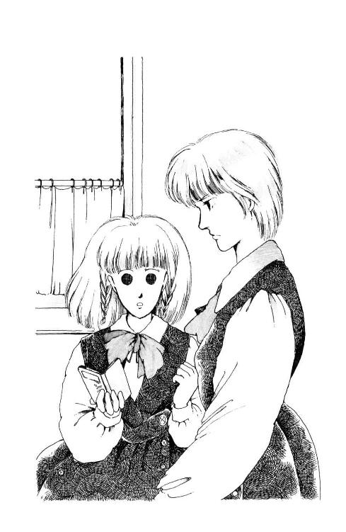

| 丘の家のミッキー１ | |
| 久美 沙織 | |
| (2014) | |
丘の家のミッキー１
お嬢さまはつらいよの巻
久美沙織
本作品の全部または一部を無断で複製、転載、配信、送信したり、ホームページ上に転載することを禁止します。また、本作品の内容を無断で改変、改ざん等を行うことも禁止します。
本作品購入時にご承諾いただいた規約により、有償・無償にかかわらず本作品を第三者に譲渡することはできません。
本作品を示すサムネイルなどのイメージ画像は、再ダウンロード時に予告なく変更される場合があります。
本作品は縦書きでレイアウトされています。
また、ご覧になるリーディングシステムにより、表示の差が認められることがあります。
第一部 三番町のミシェール
１
季節はいつだったのか。何を着ていたのか。
思い出したいことがある時、あたしはたいていそこから考える。
白い吹きつけの壁、半分開いたフランス窓。
あれは、どこだったのか。あの家は。
屋根は少しくすんだ赤だったような気がする。でもそれは、光の加減のせいかもしれない。ベランダに......観葉植物。そうね、ポトスかグリーン・ネックレス。ブライダル・ベールならもっといい。花っていってもごく可憐なちいさいものだし。でも、ブライダル・ベールだったらそう覚えてるはずよね。......あ、でもでも。あたしがブライダル・ベール大好きになったのは中一か初等部の最後ごろか、とにかくけっこう最近になってからだもの、そのいつだかわからないいつかのころには、まだ、ブライダル・ベールって名前も知らなかったのかも。......それとも、あれは、普通の花で、ただ葉っぱしかない季節だったのかなぁ。
とすると。
季節はいつだったのか。何を着ていたのか。
問題はそれよ。ああ、じれったい。あれは、いつ？ どこのこと？
何か思い出せることありそうなのに。
ここまで出かかっているのに。
音。音がしていなかった？ 風。水？ うん、近い。
......波。波の音？
そう、あれはたしか暑い日だった。真夏の暑さ......だからかすかに聞こえてくる波の音に、ホワーッといい気分になったんだ。たしか......たしか、あたし、湿った大きな手に手をつながれていて......あれはおとうさま？ そうよね。そう考えるのが自然だわ。おとうさまで何か出てこない？
おとうさま。
おとうさまがうなずいてた。そうだねって、おっしゃった。
何を？ なんにうなずかれた？
あ、煙突！ そうよ、煙突があって、あたしはそれがうらやましくって、そう言ったんだ、そしたら......。
「ミシェール」
あたしははっとして、横を見た。
トコがあたしの手をにぎっていた。
顔をあげると、麗美さんが優雅に微笑されていた。
「すみません！」
あたしはあわてて、姿勢を正した。
そうだわ。ソロリティー（友愛会って訳すのはピンとこない）のお集まりが例によって、華雅会館７Ｆの芙蓉の間で麗々しくとりおこなわれているところだったんだ。中等部三年のペーペーが、堂々と私的な空想にふけっていていい場所と時間じゃないのだった。
「よろしくてよ、浅葉さん。わたくしもあまり乗り気じゃないわ」
麗美さんは、虹色に天使の輪のできる少年っぽい断髪を軽くふって、正面に向きなおられた。
「気乗りがしなくてもしかたないわね。伊東さん、説明して。どういうことなの？」
いつもの麗美さんとはちょっとちがうきつい口調。
どういうこと？ って目でたずねるとトコは肩をすくめた。
伊東のぞみは、青ざめた頰を緊張させて、黙ってみんなを見回した。どうやらあたしが勝手に苦悩してるうちに、深刻な話題がくりひろげられていたらしい。この子（のぞみは中二。ソロリティーではペーペーのさらに下、駅前で配るサラ金のティッシュ・ペーパーみたいなものなのよ）何か大それたことをしでかしたのかしらん。
「さあ、伊東さん？」
「彼とは誠実なおつきあいをしています！」
うながした麗美さまの言葉尻のきえないうちに、のぞみは早口にそう言った。
はぁん、そういうこと。
「じゃあ、ほんとうなのね。おつきあいをしているってことは」
「ふ、不潔だわ！」
のぞみがうなずくかうなずかないうちに、松尾元子ちゃんが立ちあがった。
「華雅学園を代表するソロリティーの一員として、自覚に欠けていると思います！ おと、おと、おとこのひとと、おつきあいするなんて！」
「松尾さん、泣かないで」
麗美さんはご愛用のカール・ラガーフェルド（おお、おとこもの）のハンカチを元子に差し出した。おもわず中腰になりかかるあたしをトコが押さえた。（麗美さんのハンカチ！ 麗美さんのハンカチ！）元子は、ハンカチをうけとるや、いよいよ感きわまってそれに顔をうずめてしまった。ううう、あのハンカチ。ちゃんと洗ってお返しするでしょうね。麗美さんにお返しにあがる。みんな見るわ。そして、元子が麗美さんのハンカチをお借りした！ ってこと、麗美さんのクラスのかたがたがことごとくご存じになってしまうのだわ。
麗美さんにお手紙を書かなくては。世間がどう噂しても、麗美さんの第一のアミはあたしだと信じてるって!!
「そんな、そんなにいけないことをしたとは思いません」
のぞみも早、涙ぐんでいる。
「だって、ただ、お茶を飲んだり、家まで送ってもらう時おしゃべりしたり......」
「おとこのひとと、歩きながらお話ししたんですか？ キャ──ッ!!」
「喫茶店に行ったの？ 怖くなかった？ 不良がいたでしょ、不良が」
「いったいどういう方なの、そのおとこのひと。どういうきっかけで知りあったの？」
中一から高三までのメンバーがてんでに聞き出したので、ついにのぞみは、わっと泣き出した。
「言えないのよ。やっぱり、やましいところがあるからよ!!」
「信じられないわ。どうしてそんな恥ずかしいことができるの？」
口々に騒ぐメンバーを麗美さんは困ったような目をして眺めていらした。
伊東のぞみめ!! 麗美さんを困らせるなんて、許せないわ!! 断然何か言ってやらなくっちゃ！
あたしが口をひらきかけた時。
「たいしたことではないじゃないの」
加奈子さんが、ため息といっしょにおっしゃった。加奈子さんファンのトコがさっと緊張する気配がした。
「松尾さんはすごく深刻に考えてるみたいだけど。いいんじゃないの、お茶ぐらい」
自然のままのウェーブ・ヘアを肩にかかるほどにのばされた加奈子さんは、やけにおとなびた微笑みを浮かべて、のぞみにハンカチを差し出された。淡い花柄。
トコがあたしの手を引っ搔いた。つかみかかったりしないように、いそいでつかまえておいたのよ。
「でも」
元子は麗美さんに助けを求める目を投げて、空ぶりした（ざまを見！ 麗美さんはあんただけのものじゃないのよ）ので、元気のなくなった声で加奈子さんに訴えた。
「天下の公道ではしたない真似をされると、華雅の恥になります。母校への誇りと責任の点からみても、外部のひとに笑われるようなことは......」
「そんなことで笑うようなひとがいて？ だいたいどうして、伊東さんが華雅の生徒だってわかるの？ 通りがかりのひとに」
「外出時も制服着用が原則......」
「小堀 ぃ、お宅、着てる？ 制服。出かける時」
ああ。加奈子さんだけよ。麗美さまをそんな風にお呼びになるのは。
「まさか」
「でしょう？」
加奈子さんはにっこりと元子に向きなおられた。
「あたくしだって着ないわ。......ねぇ、松尾さん。あなたのお家ってたしか、女系家族でらしたんじゃない？ おとこのかたに関して少し潔癖すぎるのはそのせいじゃないかしら」
麗美さんはこくびをかしげてあいまいに微笑んだ。麗美さんのお宅も、女系家族なんだよね。
「許してあげない？ たかがお茶よ。たまたま伊東さんがおともだちになったひとがおとこのひとだったっていうだけで、どうしておしゃべりもお散歩もいけないことになっちゃうのよ。考えすぎよ。ね、伊東さん？」
トコの手があたしの手の中で、ぴくんと震えた。加奈子さんがのぞみにみせた表情があまりにお優しかったからだろうな。
というのに、のぞみの奴は、突然、きっと顔をあげて、加奈子さんに強気の目を向けた。
「いいえ。いいえ、おともだちじゃありません。白石くんは、わたしの彼です!!」
「困ったものだよ、まったく」
靴を履く麗美さんに、さりげなく肩を貸してさしあげながら加奈子さんがおっしゃった。
一瞬ひるがえったスカートの陰のまっ白いペチコート。いけないものを見てしまったみたいであたしはあわてて横を向いた。
「千葉がせっかくとりなしてやったのにね。ん、サンクス」
あたしは、ほんの刹那持たせていただいた麗美さんのかばんをうやうやしくお渡しした。
「おやおや、そうじゃないわ」
加奈子さんは巻き毛を揺らして、麗美さんにふり向いた。
「松尾元子のほうよ。潔癖もほどほどにしないと、ソロリティーに全体主義的風潮がはびこるよ。ちがう？」
トコとあたしは顔を見あわせた。トコが肘であたしをつつく。
おふたりのお話をもっとうかがっていたいのはやまやまだけど、むつかしいご相談にたちいるのもなんだし、会館の玄関などであまりなれなれしくすると、後が怖い。そういう意味だわ。
「麗美さん、加奈子さん、お先に失礼します。ごきげんよう」
「あ、さよなら」
加奈子さんはなにげなくおっしゃったけど、
「ミシェル」
麗美さんが、あたしを呼びとめた。みんなのいる時は浅葉さんなのに。
MichelleがMachrie（いとしいひと）に聞こえてしまう。
「さっきはどうかしたの？ 心配ごと？」
「えっ？」
「考えごとしてた。なんだかむつかしそうな顔で。なんでもないならいいの、さよなら」
軽やかにおっしゃって、ぱっとからだを横向けてしまわれた。
気にかけていただいたことへのお礼も満足に言えないあたしなのに。麗美さんはやっぱり、とてもとても優しいかた。
あたしも麗美さんのような素敵な女性になれたらな。
「やっぱりだめだわ」
紀尾井坂の急勾配を登りながら、トコはため息をついた。
「なんのこと？」
「加奈子さん。あたしにはこのごろあのかたがわからない」
「加奈子さんがおとこのかたを知ってるから？」
「ちょ、ちょっとミシェール、そんなこと大声で」
「だって、やっぱりちがうのよ。加奈子さんおにいさまがいらっしゃるでしょう？」
「......そういう意味なの......」
ホテルの玄関に入る車を見送るために、あたしたちは立ち止まった。
「ほかに何かあるの？ 意味」
「ううん。いいの。そ!! そうなのよねぇ。加奈子さまのことですもの、おにいさまのおともだちのどなたかと、おつきあいしてらっしゃるってことも充分考えられるものねぇ」
「だからって、トコは浮気よ。きのうはほんとうにびっくりしたんだから」
「ごめんごめん」
車が行って、あたしは歩き出した。トコはしばらく動かずにいて、それから追いかけてきてあたしの腰のあたりにタックルした。
「ミシェールごめん。嫌いになった？ あたしのこと」
「............」
「浮気じゃないのよ。あのかたはね」
「言い訳なんかいい。トコったら、あんなにたくさんのお花ささげちゃって、なんでもないひとにもそんなことできるの？」
「あのかたはね、華雅をおやめになるの。スポーツ祭の時とかおせわにもなったし......もう、会うこともないから」
「ほんと？」
あたしは、下向いちゃったトコをのぞきこむ。
「うん」
「わぁ、ごめん。......怒った？」
「怒ってはいないけどぉ」
土手通る？ って目で聞きあって、あたしたちはからだをぶつけながら、狭い階段を登った。
「だって。トコにはね、いつまでも加奈子さんのこと大好きでいて欲しいの。ねー、忘れたんじゃないでしょう？ あたしが麗美さんを好きで。自分で渡せないお手紙をトコに持ってってもらって。麗美さんの一番仲良しは加奈子さんだってわかったから、トコ、加奈子さんを好きになるねって言って」
そうなんだ。
好きなおねえさまと直接口きくのはやっぱり恥ずかしい。麗美さんのことならどんなちいさな情報でも嬉しいあたしには、トコが加奈子さんにお手紙で聞いてくれたいろんなこと──『麗美さんとはいつごろからのおつきあいなのですか？』とか『麗美さんは運動会のハチマキを誰かにさしあげる約束、もうなさったでしょうか？』とか──がほんとに貴重だった。もちろん、あたしも麗美さんへの手紙の中で加奈子さんのことあれこれうかがったものだわ。
なのに、トコはきのう、高二の田坂さんちの前でず──っと待っていたんだ。薔薇の花束かかえて。それにつきあったあたしもあたしだけど。
加奈子さんが（麗美さんもだけど）もうじきご卒業だからって、いまのうちからちがう人に目をつけとくつもりなのかと思った。
「加奈子さんのことは大好きよ、心配しないで」
「ならいいわ。ねぇ、それよりさ、さっき麗美さんまでお気にかけてくださってほんとうにもうしわけなかったけど、あたしぼんやりしてたでしょう、ソロリティーで」
「してたねぇ。のぞみの所業に麗美さんが眉を曇らせてしまって、みんながはらはらしてるって時に」
「あの家のこと考えちゃってて」
「え──っ、まだ思い出さないの？」
こくん。
自分でも情けないとは思ってるんだけど。思い出せるまで落ち着かないよ。
あの家。田坂さんの家。
いつかどこかで見た家に、すごく似ていて、でも全然ちがってた。記憶のすみっこにひっかかってたその家は、なんだかとても懐かしく、ぼんやり思い浮かべるだけで、とても幸せな気分になれる。あれは、どこの誰の家だったんだろう。季節はいつで、その時あたしは何を着ていたのか。少しずつ見えてきたのは、おとうさまの姿。ちいさかったあたしをそこにつれていってくれたことを、おとうさまは覚えているだろうか。
今日は早く帰って来てくれないかな。聞いてみたい。
「きのうはあたしもびっくりしたわよ。ミシェールったら突然、ぼ──っとしちゃうんだもの。歩きすぎて具合悪くなっちゃったのかと思ったよ」
そうして、あたしがその家を思い出そうとしてものも言わずに立ってると、田坂さんのおかあさまがちょうどお玄関の掃除をしに出ていらして、トコはぶじ、花束をおことづけしたのだわ。
田坂さんの愛称は『ひまり』さんで、それは、大輪のひまわりのイメージだから、とか、ひまわりが大好きでいらっしゃるから、とか、いろいろ伝説があるのよね。とにかくトコは「夏だったらひまわりを花束にできたのに！」と悔しがりながらも、丹精した庭の薔薇をおしげもなく切って、かかえて歩くって主張したのよ。
「ひまりさん、なぜ学校やめてしまうの？ お嫁にいらっしゃるとか？」
トコは妙な笑い顔をした。
「芸能界にお入りになるみたい」
「えええっ？」
「知らなかった？ ひまりさんね、退学覚悟でオーディションにお出になったの。テレビのスカウト番組よ。はじめはね、予選だけで、後は辞退してらしたの。テレビになんか出たら、華雅にいられなくなるじゃない？ でも、その予選を見てたどこかの人が、かならずスターにしてあげるからって、ご家族も説得してくれて。すごいでしょう？」
「すごいわ。確かに」
学校にいられなくなるなんてこと、よく決心なさったわねぇ。
「じゃ、きのうのお花は、デビューのお祝いだったのね」
「それもある」
土手の端が来て、あたしたちはしかたなくたちどまった。
トコの家は神田の多町でお寿司やさんをなさっている。だから、四谷駅から国電（註１）で通っている。
あたしの家は、三番町で、電車で通うには近すぎるし徒歩にするにはちょっと遠いから、駅のそばのビルの下に自転車を置かせてもらってる。駅まで行くのは遠まわりなんだけど、こうすれば毎日トコといっしょに帰れるから。
つまりふたりとも千代田区民なのよね。
華雅学園では、千代田区そして港区、あと文京区や渋谷区、新宿区の一部に家のある子っていうのは、はっきりいって特別なのです。むかしむかし華雅が誕生したころには、そういうとこに住んでる子しか入らなかった、ううん、入れなかったそうで、のち、広く都区内外から良家の子弟......ちがった、女子だけだった、が、入学できるようになってからも、華雅の正統的後継、純血種の華雅なでしことして、他の生徒の模範であろうと努め続けているの。
特に最上級にあたる中高等部では、外国の名門女子大にならって、社交と親睦のためのクラブをつくった。それがあたしたちのソロリティー。何やら英語の名前がついているのだけれど、華雅にはソロリティーといえばたったひとつしかない。
だいたいメンバーのほとんどは、おかあさまやおばあさまの代からずっと華雅びいき、幼稚園から高校までの十四年間を華雅ですごすかたがたでしょう、家族以上に家族的、姉妹以上に姉妹のような、親密なおつきあいができることになる。
といっても、もちろん、親しきなかにも、で、年の下のものがおねえさまがたに無礼にふるまったりしたら即刻、厳重に注意をうけるわよ。
それでも、ソロリティーは唯一のライバルであるバスケ部をのぞけば、華雅じゅうで一番、素敵なかたの密度の濃い団体で、しかも、どんなに麗しいかたでも、世田谷区だとか、江戸川区だとかのイナカにお住まいである限り、絶対にメンバーになれないのだから、これほど気高く、また神聖な集まりもないのだわ。
ソロリティーはあたしの誇りだし、トコにとってもそうなはずよ。
なのに、どうして？
「どうして芸能界になんかいくようなかたがいいの？ 華雅の生徒として、ふさわしくないかただから退学するんでしょ？」
「ひまりさんの悪口言わないでっ！」
「だって......トコは華雅が嫌いになったの？」
「そうじゃない、そうじゃないよ未来」
めずらしく、本名で呼ばれた。
もっともミシェールっていうのは、洗礼名だから、本名じゃないってわけじゃない。
Michelleは大天使ミカエルさまにちなんだ名前。英語ではマイケル、スペイン語ではミゲル、ドイツ語ではミヒャエルとまるでおとこっぽくなってしまうから、フランス語よみにしたの。未来っていうのも、性別不明。男性でも女性でもないなんて天使みたいで素敵でしょ。これは大好きなさえらおばさまが是非って主張してくださったおかげなんだ。
トコは真面目な顔をして、あたしをにらんだ。
「頭に来ない？ どうして、追い出したりするの？ 何も悪いことしてないひまりさんを」
「何もって、だって、歌手とかになったらお勉強に身が入らないじゃない？ 華雅は女子校として一流だけど進学校でもあるし、校風に」
「校風にあわない？」
トコ、やっぱり変だ。皮肉っぽくふふん、なんて笑って。
どうしたんだろう？ 加奈子さんのファン・ナンバーワンの地位にだって、どうもこのごろ執着してないみたいだし。......まさか......。
「まさかトコ、外部を受験する気じゃ!?」
「ちがうよぉ」
「ほんと？ じゃ、どうして」
「ひまりさんはさ」
トコは話をはぐらかすのといっしょに、あたしの目も避けるみたいにうつむいて、何かの木の下の土を革靴の爪先で掘り返した。
「中学から華雅に来た人だし、おうちも大田区のほうだし、華雅では主流派にはなれないかたじゃない？ あの愛くるしいまでのあどけなさにもかかわらず、麗美さんやバスケの中里さんとかみたいに、靴箱が花で埋まることはなかったと思うの。でも、せっかく華雅にいらしたのだから、お出になる前にいちどくらい、華雅のハートをつたえたかった......なぁんてうそだけど。ただの下町っ子の判官びいきよ。それに、あの有名な歌手にはじめてお花をささげたのは実はあたしだった、ってね、自分で思いたかったの。......有名になって欲しいなぁ」
自転車をこぎながら、なんだか脚が重かった。
トコこと逆井琴子とあたしはもう十年ごしのつきあいだ。でも、ときどきトコって、わからなくなっちゃう。トコは加奈子さんがわかんない、とか悩んじゃってるみたいだけど、加奈子さんは十八歳のおねえさまで、わかんないところがひとつもなかったら、かえって不思議よ。あたしにトコがわかんないのは、それとはちがう。大問題だわ。
加奈子さんというひとがありながら、どうして他のかたにお花をささげたりできるの？
なんだか、やだなぁ。そういうの、不純っていうんじゃないかしら。
......やっぱり......同じ都会っ子でも下町の子と山の手のあたしって、ほんとうには理解しあえないものなのかしら......くすん。
麗美さんにお手紙でうかがってみようかなぁ。でも、それじゃ、まるで、間接的に加奈子さんに言いつけてるみたいだし。......でも......やっぱりうかがおうかしら。
麗美さんはおとなで、それに、おにいさんも弟さんもいらっしゃらない。ご両親やおねえさまと住んでらっしゃるお屋敷は広尾で、きっぱり山の手だわ。だからあたしの気持ち、ほんとによくわかってくださるのよ!!
うん、書こう。麗美さんだもの、いくらご親友の加奈子さんにだって必要でないことはおっしゃらないはずよ。書こうっと。麗美さんとあたしのあいだには秘密を作ったりしてはいけないわ。秘密から、不信が生まれるものよ。
書こう!!
と、思ったら、ずいぶん気持ちが軽くなった。
東郷公園の隣の小学校の校庭で、こどもたちの歓声がはずんでた。
２
「ただいまぁ」
玄関を開けたとたん、目にとびこんできたのは、おとうさまの大きな黒い靴だった。
へんね、こんなに早く。お加減でも悪くなられたのかしら？
一瞬よぎった不安は、すぐに消えた。居間のほうから、おかあさまの明るい笑い声が聞こえてきたのよ。
「どうしたの？ なぜおとうさまが......」
言いながらドアをくぐると。
うわぁ!! どうして？
あの家じゃないの!?
それは、スライドだった。
ブラインドを閉めて、薄暗くした部屋の中で、いつも梅原の裸婦画の掛かってる壁に、あの家が映っている。ゴウゴウいうプロジェクターの唸りの向こうから、ああ、お帰りっておとうさまの声がした。
「す、すごい、あたし、あたし、ちょうどこの家のことうかがおうって思っていたのぉ!!」
ソファーに掛けてるおとうさまの背中にまわりこんで、背もたれにしがみつく。カチャッと音がして、画面が変わる。見たことのなかった、庭からの角度。紅色の花をいっぱいにつけた夾竹桃を、左がわの端にした凝った構図。おとうさまは、写真が大好きなのよ。
「そうか、未来も覚えていたか、この家を？」
おとうさまが肩越しにふり向いて、たくさん笑いじわのできる、あたしの好きな表情をなさった。
「偶然きのうね、思い出して、それでずっと考えてたの。これ、これ、どなたのお宅なの？ ね、あたし、小さいころここに行ったことあるわよね？」
「あるよ」
カチャ。
長い階段。......？ 両側はきれいに刈りこまれたみどり。裏側かな？ 庭木らしいのがちらっと見える。その向こうに赤い屋根。
澄み切った空に、その赤がとってもあざやか。
「まぁまぁ、とにかく手を洗ってらっしゃい。未来が戻ってくるまで止めとくから」
おかあさまに言われて、部屋にかばんをおきに行った。
うわぁ、やっぱり、錯覚じゃなかったのよ。
トコは『それってあの、デジャ・ヴュってものじゃない？』なんて言ってて、あたしももしかするとそうなのかなあって思わないわけでもなかったから。
それにしても不思議だなぁ。
どうしておとうさまったら、こんなにはやく（まだ六時前よ！）帰ってらしたんだろ？ しかもあのスライド。ひょっとすると、おとうさまかあたしに超能力があるんじゃない？
いそいで着替えて、居間に戻った。
おとうさまは、はじめに戻してスライドをスタートさせる。坂道。少しカーブした、ゆるやかな坂道。
「ここ、どこ？」
「界帷というところだよ」
「さかい？ どういう字」
おとうさまは、そばの新聞の上に、そのむずかしい字を書いてくださった。
「葉山と横須賀の境だから、こういうんだね」
「ふうん」
海、おだやかな海。逆光の波間に、ちいさな帆が見える。
そして、あの家。
古びた鉄のご門からつづく御影石の石畳。
お伽ばなしに出てくるような、柱のあるアプローチ。お玄関のドアは重たげな木でできていて、蹄鉄のかたちのノッカーがついてる。
「素敵ねぇ」
おかあさまが紅茶のカップを差し出しながら、あたしの横でため息をついた。
「ほんと。......ねぇ、おとうさま、どなたのお宅なの？ あたしいつここに行ったの？」
カチャ。
ちょうど、あたしがさっき入ってきたときに見たのと同じ、あの画面になった。
田坂さんのお家を見て以来、あたしがここのことを思い出そうとするたびに思い浮かべていたのと、ほとんど同じ構図だった。
「未来の家だよ」
かすれる声で、おとうさまが言った。
「わたしたちの家だ。おまえも気にいってくれたようで、いやぁ、よかった」
「......あ・たしの......い......え？」
「そうよ未来。ちょうどもうすぐゴールデン・ウィークでしょう、お引っ越しするのよ。未来もおへやの荷づくりしてね。大丈夫でしょう？」
「お......お引っ越しぃ!?」
「太陽族？」
ゆうごはんは、てんぷらだった。おとうさまは上機嫌で二本目のビールをコップにあけながら、照れたように笑ったわ。
「未来は知らんだろうなぁ、もう三十年も前の話だから」
「ほら、未来、みゆき族とか、カミナリ族とかあるでしょ、ああいうのの最初で......」
「さっぱりわかんない」
「じゃあ......どう言ったらいいのかしら......」
おとうさまとおかあさまは困った顔を見あわせた。
あたしはドキッとした。
「まさか、まさか、それって窓際族（註２）のご親戚じゃあない？ だって、窓際ってよく太陽にあたるでしょ、おとうさまは銀行で不名誉な地位にうつされてしまったの？」
おとうさまははじめ、きょとんとして、それから大笑いなさった。
「ちがうよ未来、あのね、......いやぁ、しようがないな、順序だてて説明しよう」
まだ安心はできなかったけど、とりあえず、えびてんをたいらげよう。
「昭和三十一年だったかな、『太陽の季節』という小説が評判になってね、芥川賞もとった。書いたのは石原慎太郎（註３）、今の子には政治家としてのほうが有名なようだけれども、当時はまだ大学生だって、そりゃ大騒ぎだった。『太陽の季節』は映画にもなった。主演じゃなかったが話題をさらったのは、慎太郎の弟の裕次郎、未来も知っているだろう」
「太陽に吠えるかた（註４）でしょう？ ふうん、じゃ、太陽族って警察のかたがたのことなんだ。おとうさま、警視庁のかたとおつきあいなさるの？」
父は某銀行の六本木支店をまかされていらっしゃる。
「いや、ちがう。どうも未来が口をはさむと話がわけわからなくなるな」
「ごめんなさい」
「いやいや、ともかくな、太陽族っていうのは、『太陽の季節』に出てくるような若者たちのことだと思えばいい。昭和三十年ごろといえば、......日本がようやく高度成長に向かおうとする、ちょうどそんな時代だ。パパは二十歳そこそこで......まだママともめぐりあっていなかったよなぁ」
「そうですわ、わたくしは十五、あら、今の未来ぐらいだったのねぇ」
なんだかとても、長いお話になりそうな気がするわ。
「パパとママが出会ったのは有楽町のカフェーで......いや、これは未来もなんども聞いた話だね。うむ。つまりだ。当時はね、大学生というものは、学問をこころざし、貧しくても清く正しく、ただ真理のみを探求しているものだという認識が、まぁ、一般的だった。戦争で、優秀な青年が大勢死んでいった......だから、生きながらえて自由の世に学生となったものは、死んだ先輩たちの弔いのためにも、これからの日本をしょって立つものとなるべきだ、って考えが、自然だったわけだよ」
「はぁ」
悪気はないのだけれど、どうしてかな、と思ってしまうわ。おとうさま（おかあさまも時々）、戦時中のお話をなさるとやけにいきいきなさるんですもん。
あたしのとまどいに鋭く気のつかれたおとうさまは、う、うむっ、て咳払いをして、
「太陽族は、その、自然な認識と期待に、じつにあざやかに舌を出してしまったのだよ」
「へぇ、そんなおとながいたのぉ？」
「おとなじゃない。大学生だ」
「......おとなじゃないかなぁ」
「つまりね、慎太郎が書いたのは、裕福な家庭に育って、何不自由なく大学生になったものの、おとなたちを......言うなれば、占領軍に手も足も出せないところを見せてしまって、おとなとしての権威をうしなってしまった親や社会を信じることができず、かと言って、正面きって反抗するのはめんどくさい、そんな若者たちの姿だった。世間はおどろいたさ。大学生ともあろうものが、昼間っからごろごろ何するでもなく遊びほうけ、集まっては酒だダンスだガール・ハントだと退屈しのぎをつぎつぎ考え出す。まるでやくざかチンピラだ」
「なんだか今でもあまりちがわないみたいね」
と、おかあさま。
「あのころの若い人たちが親の世代になっているはずなのに、今になってこどもたちに同じこと言うのねぇ。このごろの大学生はなっとらん、って」
あたしも聞いたことあるわ。このごろの大学って、学問するところじゃない、って。麗美さんもお嘆きあそばされているわ。どこの大学も求める世界とちがう、思いもかけない人たちといっしょに過ごすことになりそうだって。華雅に大学があればいいのに......幼稚園からずっといられたのに、最後に追い出すなんてひどいですよね、ってあたしが言うと、ううん、だからいいのよ、このまま一度も外の世界を知らずに社会に出ていくのは、いけない、つまらないことかもよ、って手紙に書いてくださって。
麗美さんはやっぱりたくましいわ。あたしにはまだとても、社会に出るとか、何かをしなきゃ、とかってこと、とても考えられない。
「とにかく」
おとうさまはビールのさいごの一口をあけて、おかあさまに、ごはん、っておっしゃった。
「慎太郎自身が、あれは、弟や、その仲間のことをモデルにしたものだと言ったこともあって、太陽族と言えば裕次郎、裕次郎と言えば太陽族、そんな感じだったな。何しろ当時は今からは考えられないほど映画に力があった。テレビもたいして普及してないころだからね。娯楽といえば映画だった。みんなが見たんだ。『太陽の季節』を。『狂った果実』を。『嵐を呼ぶ男』をね。そして、熱狂した。もちろん、たいていのおとなは否定したが......太陽族は、あたらしい風俗だった。アロハ・シャツに黒めがね。ヨットにダンスに外車、おんなの子の......あれはなんて言うのかね、くるっとまわるとぱぁっとひろがる」
「サーキュラー・スカート」
とおかあさま。
「別のことばだったなぁ」
「落下傘スカート？」
「それだよ、それ。いやぁ、あれは、華やかでいいもんだった。こう......胴回りがキュッとしまっていて、あいた胸元に色気があってなぁ。未来にもあんな服を作ってやらんか？ 似合うぞ。未来みたいな睫の長い、スミレみたいな少女が着ると、少し背伸びしているようで清純で可憐でなぁ、うんうん」
「おとうさまっ!!」
あたしは大きな声を出してしまった。
「未来は胸のあいた服なんていやよ!!」
「おやおや、それはすまん」
「それで、それで、その太陽族とお引っ越しとどういう関係があるの？」
「ああ、そうだ」
おとうさまは、たべかけのおちゃわんをおいて、背中を伸ばしたけど、すぐに、照れたように肩を落とした。
「おとうさまはね」
かわりに、おかあさまがそっとおっしゃった。
「太陽族になりたかったのよ、ね？」
「う......うむ」
おとうさまは、わざとらしく咳をたくさんなさった。
「......まぁその、なんだ、なんとか族という言い方は好かんがね、憧れていないこともなかったわけだ。うん」
.........。
「いや、でもパパの田舎は長野だろう？ なりたがったってなれるもんじゃない。パパは、かっこだけアロハの、みかけだけの太陽族にはなりたくなかったんだ」
そうかもしれない。おとうさまって、ほんとに凝り性だもの。
「太陽族になるには、どうしても海辺に家がなくちゃいけなかった。できたら、ヨットも持ってるにかぎる。オープン・カーも捨てがたいがなんといっても海だ。歩いて海にいける家だ。その海も、日本海や、瀬戸内じゃ、うそになる。太平洋でも茅ヶ崎から三浦半島、それも東京湾のほうじゃなく、相模湾側でなくてはならないのだから、いうならば江ノ島から城ヶ島、さらに区切れば、長者ヶ崎までのほうがのぞましい。太陽族は、リッチが眼目だからね。界帷は少々田舎だが、何せ御用邸の隣ぐみだ。パパの夢そのままなんだよ、未来」
あまりのことにあたしの頭は、ほとんどストップしてしまっていた。
それでも、せいいっぱい集中して、やっとの思いで言ったのよ。
「この家はどうなるの？」
「え？」
おとうさまはようやく、夢から醒めたみたいに、あたしのべそかきがおに気がついた。
「み、未来は、いやだったのかい？ あの家のことも気にいってくれたようだったしパパはてっきり......」
「どうなるの？」
おとうさまはおかあさまと顔を見あわせて、なだめるように、
「いや、悪かった。未来がそれほどここが好きだったとは」
「売っちゃったのね!?」
あたしはおはしをなげ出して、椅子を蹴飛ばして、立ちあがった。
「その、パパの夢を買うのに夢中になって、あたしが生まれる前からずっと住んでらした、この三番町のマンションを、あたしには何ひとつ、いいかいって聞いてもくださらずに売ってしまったのね!?」
「未来」
「未来ちゃん!!」
「だいっきらいよっ」
あたしは部屋に駆けこんだ。
ああ、ああ、麗美さん。
未来は、麗美さんのかわいいミシェールは、ソロリティーにいられなくなってしまいます!!
三十分ぐらいしてかしら。
「未来ちゃん」
ノックの音とおかあさまの声。
「未来ちゃん、入っていい？」
返事をしないでいると、そのまま、黙って立ち尽くしてる気配がする。
あたしはしかたなく、ドアを開けに行った。おかあさまは、笑ったような、泣いてるような変な顔でベッドに座り、それから、唇を薄くひらいた。
「怒るのもあたりまえよね。ママも知ったのはさっきなの。おとうさまがひとりで決めてしまったことなのよ」
居間のほうで、もぞもぞ音がした。
「そんなの、そんなの、ひどいじゃない？ ママは、いやじゃないの？ ずっと住んで、住み慣れてるこの家をいきなり売っちゃうなんて、そんなの」
「でも、おとうさまがあんなに喜んでいるんだもの」
ママは──華雅ではみんな、おとうさま、おかあさまだから、いつもはそう言うあたしだけど、家ではパパ・ママも使う。何しろ、当のおとうさま、おかあさまが自分のことパパ・ママって言うんだもの──いい？ って目で聞いて、あたしがうなずくと、部屋に入ってドアを閉めた。
「ねぇ、未来。三十年も前の夢をずっと忘れずにいて、五十歳も近くなってから、夢のためにがんばっちゃえるって素敵なことじゃない？ ママはそういうパパだから、好きだなぁ」
「だって、勝手よ。ここはパパだけの家じゃないわ。反対かどうか、一度くらい聞いてみてくれたっていいじゃない。ママとあたしが、お引っ越しなんてやだって言ったら、多数決で否決だわっ!!」
「でも、それなら、多数決で可決よ。ママは賛成だわ」
信じられない!!
あたしは、思わず、いじっていた枕を抱き締めてしまった。
「だって、葉山なんて、海水浴に行くところじゃないの！ そんな田舎、いやじゃないの？ ママは三番町が好きなんだと思ってた」
「そりゃあ、好きよ。でもここも古くなったし」
それは本当だ。何しろ、十年以上前に建ったんだもん。
壁とかにはちいさな亀裂が入ったりしてるし、柱なんかがはみ出していて、狭苦しい。あたしはひとりっ子だからこうして一応個室も与えてもらっているけど、居間と台所はいっしょくたで、細長くって、窓も小さいわ。去年の秋には、いやな虫が大量発生して、マンションじゅう大騒ぎになった。何しろ、一家でやっつけたと思っても、お隣に逃げてるだけで、すぐ戻ってきちゃう。一斉に駆除しようって言っても、忙しいかたが多くって、いつって決められなくて、そりゃ、長いこと無気味な日々を過ごしたわ。
でも、何よりも、ここは三番町だわ!!
「ママだって、不便なとこに行くのいやじゃない？ 葉山なんかに行ったら、もう銀座でお買いものして疲れたからタクシーで帰る、なんてわけにはいかなくなるのよ。パパ遅いから、ホテルにでも食べに行っちゃおか、なんてこと、できなくなるのよっ!!」
「でも鎌倉には紀ノ国屋もあるんですって......」
ママはあっちを見て、考え考え、
「鎌倉も行ってないわねぇ、長いこと......。学校に通ってた時分はよくみんなでハイキングしたなぁ。素敵な日本料理屋さんがあって......フフ、そうそう！ フフフ」
はぁ。だめだわ。思い出し笑いしてる。本気で行くつもりだわ。
「......でも、パパだって大変じゃない。そんな遠くから通うなんて、銀座に行くのになん時間かかるの？ あたしもよ。電車通学なんて、生まれてから一度だってしたことないのよ。混んだ電車に乗るなんて」
「未来」
ママはいきなり、あたしの手をとった。
「パパを許してあげて。やっと夢がかなうんじゃない。たった三人の家族なのよ、みんなが嬉しい気持ちでいられなかったら寂しいわ。これもひとつの経験だと思って」
あたしはだまってママを見た。
そりゃあね。あたしだって。
あのお家は素敵だと思うわ。ここよりずっと広いみたいだし、煙突も、そう、煙突もある。あたしがもっとこどもだったら、わーいわーいって喜んだかもしれない。なんて言ったって煙突は、サンタ・クロースの玄関よ。煙突のある家に住んでる子なんてめったにいないから、サンタさんだってそれなりに別のルートを発見しておいてくれるにちがいないとは思いつつ、小さいころは本気で心配だった。
だけど。
生田電工の社長令嬢の順子さんのお宅なんか、プールもあるし、イクタァ・レコードの歌手のかたとかがお誕生日においでになって、なん十人とかで大パーティーをなさったとか言うくらいの大邸宅だって噂だわ。でも、それが、川崎市のなんとか町であるっていうこと、それだけで、順子さんはソロリティーに入れなかったのよ。だから、あのかたはおとうさまに泣きついて、西麻布にマンションを買ってもらったんだけど、何しろ華雅は自宅通学以外ほとんど認めていないじゃない、住民票を移したら校則違反だって、泣く泣く川崎に戻ったのよ。うふふ、それで、かえってすっかり恥をおかきになったのだわ。麗美さんに美貌と人気でかなわないからって、いじましい手をつかってしまうとは、あさましいひと。
ソロリティーは、お金をもってれば入れるような、そんなつまらないクラブじゃないわ。
あたしなんかほんとは、とても華雅の代表たるべきソロリティーにいれていただけるような身分ではないの。うちのおかあさまは華雅の卒業生じゃないし。たまたまママのいとこにあたるさえらおばさまが、華雅のご出身で、ここはなまえのとおり、華やかで優雅で、女の子が思春期までを過ごすのには絶好の環境だって保証してくださったのと、うちから歩いて通えるってこと（幼稚園と初等部は一番町の英国大使館のすぐそばで、紀尾井町の中高等部より、ずっとうちに近い）で入園したのだもの。
だからあたしは、嬉しかった。
学園祭や合同の創立祭の時におめにかかる、あでやかなおねえさまたちの中でも、ひときわ美しく誇り高く、みんなの注目を集めている集団──ソロリティーに、自分も入る資格があるって知った時。初等部のチビだった時から、胸に誓っていたものよ。潔く誠実に生活をおくり、ソロリティー・メンバーにふさわしい人間になるんだって。
幸い、仲良しのトコも同じ資格を持っていた。そうでなかったら、こんなに長く親しいおともだちでいられたかどうかわからないわ。
それなのに。
あたしは、ママの手を握り返した。
「ママ、正直に言うわ。三番町にいられなくなったら、あたしは華雅で、これまでどおりの生活をすることができなくなっちゃうの」
「どうして？」
「あのね、あたし、ソロリティーのメンバーでしょ、それ、やめなきゃいけないの」
「どうして!?」
ああ、これだから。華雅で暮らしたことのないママにはあたしの気持ちなんてわかりゃしないのよ。
「そういう規則なの」
「絶対に？ だって未来自身が何か、悪いことしたわけじゃないじゃない？ 未来はそのなんとかの中堅幹部だって、琴子ちゃんが言ってたわ。これまでずっと仲良ししてきたおともだちばかりでしょう？ 大丈夫よぉ、やめないでって言われるわよ、未来が必要なのに決まっているじゃない」
......必要かどうかはわからないけど......それは......そうかもしれないなぁ。
ふうむ。
だいたい、今、ソロリティーの会長は麗美さんなのよね。何か悪いことしたわけでもないのに、次期副会長候補のあたしを手放してしまわれるだろうか？
あたしは元子みたいにこどもっぽい正義感をふりまわして、あげくの果てに上級生にお借りしたハンカチに顔を埋めてむせびなくようなおバカな子じゃない（あんなことしたら、下級生に笑われるだけだわ。甘えんぼさんは可愛らしいけど、責任ある地位は任せられない）。もちろん、問題を起こしたり、それを釈明もせずに開き直ってしまうような可愛げのない子じゃない。下手をするとのぞみは除名よ。おお!! なんておそろしい。ソロリティーを除名になどなったら、とてもじゃないけど華雅にはいられないわ。これにまさる恥はないわ。
でも......。
あたしも、同じじゃない!!
たとえ、この身になんの咎がなくても、あたしが万一ソロリティーをやめさせられてしまったら、傍目には除名されたのと変わらない。すぐに学校じゅうに広まるわ、あたしの恥。
「冗談じゃないわ!!」
「未来ちゃん......」
はっ。
「ごめんなさい！ 思わず叫んでしまったけど、ママ、ママ、そうよ、そんなはずないわ!!」
「いったい何が？」
「麗美さんが、あのお優しい麗美さんが、無垢なこのあたしにいわれのない恥などかかせたりなさるはずがない!!」
あたしはママにすがってドキドキする胸をこらえたの。
前例がない。
遠くにお引っ越しになって、泣く泣くソロリティーをぬけていらしたかたは、きっといらっしゃったはずだわ。でも、その場合は華雅学園そのものから出て行かれるのだから、事情がちがう。葉山なんてところに、どうして、決めたの？ いっそ、北海道だとか沖縄だとか、思い切り遠くだったらかえってあきらめもつくわ。......でも。それにしても。
「会社からの命令で、っていうのならまだ我慢もできるけど、パパの身勝手っていうのが許せない!!（そんなこと麗美さんにどうご報告するの？）」
「だって、あれはパパのおにいさまの住んでらしたところだもの」
あたしの頭をママの手が優しくなでた。
「他のひとの手にわたすのは我慢できなかったのよ。ね」
あたし、顔をあげる。
「パパにおにいさんなんていた？」
ママはううん、って首をふった。
「だから。未来の麗美さんと同じ。兄貴分ってやつよ。大学の先輩で、パパは夏休みとかに、ほんの少しだけ、本当の太陽族になれたのよ。そのかたのおかげで。でも......若くして亡くなられてねぇ」
あたしは、ことばをのみこんで。ママの顔をじっとみた。
「ボートの事故でねぇ。まだこれからのかただったのに。だから、パパにつれて行ってもらった時も、お家の中には入らなかったでしょう。おとしを召したご両親がいらしただけだからね。パパや未来ちゃんのこと見たら、思い出してしまうでしょ。二十歳から、年齢をとらなくなってしまった、むすこさんのこと......」
「パパは......」
あたしは立って、ドアを背にした。
「パパは、その、ご両親が亡くなるのを、待っていたのね!?」
「未来!!」
「不潔よ!! 麗美さんと同じなんかじゃないわ。おとこ同士だなんて、おとこ同士だなんて、気持ち悪い（註５）!!」
「未来ちゃんったら、そんなんじゃ」
「いやいやっ!! 出てって!! 行ってっ!!」
大きく開けたドア。
ママはため息をついて立ちあがると、あたしのことをじいっと見つめてから、しかたなさそうに出ていった。
おとこ同士だなんて!!
あたしは、枕を投げつけて、それから、そこに突っ伏して、しばらく泣いてしまった。
ようやく、落ち着いたのは、麗美さんに書かなきゃいけないことが、あまりにもたくさんあるってことに気がついたからだった。麗美さんだけじゃだめだわ。トコにもいっぱい、話すことができてしまった。
もしも、もしも、もしも、ソロリティーをやめなきゃいけなくなったとしても。
麗美さんとトコだけには、わかって欲しい。あたしがどんなに、ソロリティーを、麗美さんを、トコを好きだったか、華雅学園の粋であることがどんなにあやうい、かけがえのないことだったかを、つたえなくちゃ。
あたしがはねおきて、無印良品のレター・セットを取り出していると、
「未来......おい、未来」
おとうさまの声がしてあたしは飛びあがった。
「だめっ!! 入ってきちゃ、だめっ!!」
あたしの部屋には、鍵がかからない。家族のあいだで鍵をかけるなんて！ って、おかあさまが取りあわなかったからなんだけど......今、あたしはとても、鍵が欲しい。鍵をかけて、誰にも絶対入ってこれない部屋で、思っていること全部、書いてしまいたい。
でも。
鍵なんかなかったのに。
おとうさまは入ってこなかった。ノブに手をかけることさえ、しなかった。
「ごめんよ、未来。......でもパパは......」
「話したくないわ」
踏みこんでこようと思えばできるのに、そうしないおとうさまのことは、ちょっぴり尊敬してもいいなと思ったけれど。あたしはやっぱり、怒ってる。理解ある娘になんかなれなくたってかまわない。おとうさまが、横暴なことしてるんだもの、責める資格はない。絶対。
「だが、そういう時こそ話しあっておかないとだな」
勝手なこと!!
「パパと口ききたくないの。......（ふう。深呼吸）......とにかく今はなんにも話したくないの。おやすみなさい」
「み！ ......」
机に戻るあたしの足音を聞いて、おとうさまが、言いかけたこと、途中でやめた。
実は、ぬきあしさしあしでドアのとこにまた戻って、聞き耳をたてていたあたしには、ノックしようとあげた手を、そっと下ろした時ぶつけてしまったちいさな音がはっきりわかって、おとうさまの落胆した顔まで見えたような気さえした。
いやな子だ、あたし。
でも。でも。
今とても、にこにこ笑ってあげることはできないわ。
夢のかなったパパ。夢のこわれるあたし。
どうみても、パパのほうが幸せなんだから、あたしには、いじわるするくらいの権利はくれていいと思う。
......パパのばか。
ばか。ばか。ばか。ばか。
ばか。ばか。ばか。ばか。ばか。ばか。ばかっ!!
......うっ......。
いいもん!!
麗美さんに手紙書こうっと。
あたしは、思い切り顔をしかめて、それから、なんだかおかしくなっちゃって、ひとりでくすくすやった。もしも、パパとママが、こころ痛めて、あれからしばらくあたしの部屋のようすうかがってたとしたら、かなりびっくりしたのじゃないかしら。
あの家。
あの家が、あたしの家？
ソロリティーの心配さえなかったら、これはかなり、素敵なできごとかもしれない。
あたしがあんな家に住むようになったら、トコなんか喜ぶかも。これから海のシーズンだし。あの子って、ロマンチック大好きだから、うらやましがって泊まりにだってきちゃうかもしれなくてよ。おお!! お泊まり！ ずいぶん長いこと、してなかったなぁ。ちいさいころは、とにかく離れたくなくて、毎日みたいに泊まりあいっこしてたのに。
うん。そうよ。
あの家は素敵だわ!!
はやくパパと仲直りしたほうがいいなぁ。今のままじゃ、あの家が素敵だって、素直にみとめられないもの。
あたしは上機嫌で、あの家の絵なんか、書きはじめたのでした。
３
小早川浩子ちゃんは、わが三のＣの誇る対六年生諜報部員だ。
持ち前の度胸と根性で、休み時間ごとの各クラスのおねえさまがたの動向をチェックしては、報告してくれる。たとえば、麗美さんがなん時間めの終わりにどなたとごいっしょにどこのトイレに入られて、その時の話題はなんだったのかとか、下級生の誰が六のＡ（麗美さんの御学級であらせられる）前の廊下をうろついていたか、おめあてのかたはどなたらしいかなどなど、微にいり細にうがった情報をとどけてくれるのよ。
そして、もうひとつの役割は、郵便屋さんである。
あたしはその朝、前夜四時間を費やして書きつづった分厚いお便りを浩子に預けた。
いつもは、他にたくさん使命のある浩子の手をわずらわせるにしのびないので、トコにたくす（で、あたしはトコの加奈子さまへのお手紙を引き受ける）んだけど、何せ今日はトコとは積もる話がある。二十と一枚を書いたあと、さすがに腕がくたびれて、トコには口で伝えることにしたのよね。
二時間目がはじまる前に昼休みの予約をしておこうと、三のＦ（トコの組）めざしてギャロップしていると、
「あら、浅葉さんよ」
廊下をたむろしてた誰かが言ったわ。
あたしもなかなか有名人なんだなぁって、感動しつつ、少し速度を落とすと、
「昨日も麗美さんがお話しなさっているのにぼんやりしてらしたのですって。下級生に悪い影響をあたえなきゃいいけど」
「麗美おねえさまお優しいから、迷惑って顔なさらないものね」
あたしはふり向いた。
案の定だわ。
「あら、池貝さん。お元気そうね」
にっこり笑ってやると、池貝有希子はむっ、と上半身をひいて、あたしをにらんだ。
「何かあたしにおっしゃりたいことがあるんでしたら、呼びとめてくださればいいのに。廊下なんかで聞こえよがしにおっしゃっていると、なんだか悪口言ってるみたいであなたの品位を落としてよ」
口をひらきかけて、閉じて、池貝は頰を赤くした。
「じゃ、あたし急いでるから、失礼」
軽く礼をして背中向けちゃお。
いやな子!!
まったく、どうしてあんな子が華雅学園にいるのかしら。
池貝はあたしと同学年なんだけど、麗美さんのファン・ナンバーワンになりたくて、あたしが何か失策をしでかさないか虎視眈々ねらっているのよ。
麗美さんのお宅と池貝の家は遠い親戚で、だから池貝は、言うのよね。『浅葉さんなんか中学生になってから、麗美おねえさまに夢中になっただけじゃない。わたしなんか、赤ちゃんのころからずうっとおねえさまのことだけ見つめていたのよ！』って。
もっともこれは誤解で、あたしは初等部三年の時、生徒会長におなりになった少年の瞳を持つおねえさまにすっかり憧れて、小堀麗美さまというお名前を知ってからは、毎晩日記に麗美さまのことばかり、今日はすれちがった、今日はお声を耳にした、と書きつづり、あのかたが中等部に行ってしまわれてからは学園祭、スポーツ祭など、全校行事のために生きてきたんだわ。そして、何があっても中等部に行ったらあのかたとお近づきになるんだ、って心に誓ってた。赤ちゃんの時からなんの苦労もなく麗美さんとお近づきになれた池貝なんかとは、思いのたけがちがうのよっ!!
だいいち、池貝はソロリティーのメンバーじゃあないじゃない!!
いくら親戚だって、ソロリティー外の生徒に麗美さんを渡すわけにはいかないわ。
「ごめんなさい、逆井のトコ、いる？」
三のＦのドアを開けて、あたしは聞いた。
「ミシェール！」
トコが飛び出してきた。
「あんたこんなところで何してんの!? 麗美さんが呼んでらっしゃるっていうのに!!」
「読んだわ」
麗美さんは、はふっ、とあえかにもものぐるおしいため息をおつきになった。その吐息に色があるとしたら、まさに薔薇色の吐息だと思ったわ。
昼休み、あたしは人目をはばかって華雅会館七Ｆの芙蓉の間に来たの。本当は、放課後以外に会館を利用する時は、校長さまか、担任の先生の許可を必要とするのだけど、ソロリティー会長の麗美さんは、芙蓉の間の鍵を預かっていらっしゃる。
良心の呵責なしに特権を乱用なさる麗美さんじゃない。あたし如きのために、その百合のように純潔なおこころにそむくようなことをおさせするなんて......ああ、なんて幸せな、なんて罪な未来でしょう。
二時間目の前の休み時間、チャイムの鳴る寸前に六のＡに駆けこんだ（はしたないとは思ったけれど、何せ、麗美さん直々のお呼びですもの）あたしに、麗美さんは、『昼、芙蓉に来て。人に聞かれないほうがいいと思うの』と小声でおっしゃったの。それも、あたしの肩をお抱きになるようなぐあいにして、あたしの耳と麗美さんのはなびらのような口とがほとんどくっついてしまうほど近くでおっしゃったのだわ。あたしは麗美さんの真摯なご様子にもかかわらず、幸福感のあまりあたまの芯がくらくらした。
来てはいけない場所で、ふたりきりでお話する......ああ、秘密ってなんて甘いんだろう。
病みつきになっちゃったら、どうしよう？
「ミシェール、これはただならぬ問題よ。わかっていて？」
「も、もちろん、あたしにとってはただならぬことです!!」
あたしは、蓋を開けたものの、全然たべる気になれないお弁当に視線を落とした。
ふたりきりだなんて、はじめてで、とても麗美さんのお顔が見られない。
「でも、でも、感激です!! あの、あの、麗美さんがそんなに心配してくださるなんて......もったいないことです！ すみません、あたしの、あたしなんかのために......」
「遠慮してる場合じゃないの」
麗美さんも、ひと口ふた口召しあがっただけのお弁当を、向こうに追いやった。
「事態はあなたが思っている以上に深刻なのよ」
「どうしてです？」
「ソロリティーのことなら、あたくしになんとかできたかもしれないわ......」
麗美さんは、さらさらのショート・ヘアを、細く長いお指でときほぐされた。
「でもね。校則までは揺るがせない。わかるわね？ いくらあなたを守ってあげたいと思ったところで、華雅の原則を撤回することはできないの。誰にも」

守ってあげたい......？
麗美さんが、麗美さんが、あたしを守ってくださる......!?
あああ......。
「ミシェール!!」
「......は、はいっ!!」
はあぁ。
麗美さんのため息が、白くなった。
「よくって？ あなたはね、ソロリティーのことばかり心配しているようだけど、それどころじゃないのよ!!」
「はぁ？」
「生徒手帳を持っているでしょうね？」
気のせいか、麗美さんの眉が曇ってしまっている。
いけない。この場のムードに吞まれて、うっとりばかりもしていられないのだわ。麗美さんが真剣にあたしのことを思ってくださっているというのに。
「校則の九条、たしか第七項」
麗美さんはおっしゃって、窓の外に目をお移しになった。
あたしはあわてて、ページを繰った。
華雅学園中高等部校則
第九条第七項 本学生徒は自宅通学を原則とし、通学所要時間は、中等部一時間以内、高等部二時間以内とする。
〔補遺〕両親の転勤などによりやむをえず親許を離れざるをえない場合に限り、学校長の承認を受けた三親等以内の親族の自宅に寄留することが認められることがある。
......？
あたしは、生徒手帳を見、麗美さんを見、麗美さんがそっぽを向かれたままなのでもう一度手帳を見、第九条第七項をゆっくり三度読み返してから、再び麗美さんに目を向けた。
「......麗美......さん？」
「葉山へは、一時間じゃ行かなくてよ」
麗美さんは、横顔を見せたまま、呟くようにおっしゃった。
「東京駅から横須賀線で、逗子まで、たしかちょうど一時間ぐらいよ。四ッ谷からじゃ、品川から京浜急行でというルートと、どちらが近いともいいがたいわね」
まさか!!
そ、そんなことって!!
「あたし、あたし、華雅学園に......」
膝が笑って、声にまで震動が伝わってくる。
「いられなくなるわね」
麗美さんはやっと、こちらを向かれた。
「三親等以内の親族がどなたか都内にいらっしゃるとしても、転居先が葉山では、両親のもとで過ごさないなんて不自然だもの、寄留が認められる可能性はごく小さいわね。だいたい、三親等うんぬんっていうのは、ほとんど海外赴任なさる親御さんの場合ですもの」
「い、いやです!!」
あたしは、のどが変になるのを懸命にこらえた。麗美さんのまえで泣いたりしちゃ、いけない。あたしはそんな、だらしない子じゃないはずよ!!
「あたし、校長さまにお願いします!! あと一年だけ、いえ、十一カ月したら、四年生です。高校生です。高等部になれば、一時間以上でも、かまわないのでしょう？ たったの十一カ月......麗美さんのおそばにいられるのも、あとわずかなのに!!」
「ミシェール」
麗美さんの手が伸びた。
触れてくださるか、と、ぴくんとしたあたしの手に、あと二センチというところで、御手は止まった。
「あなたは、優秀な生徒だし、ソロリティーにおいてもりっぱな、かけがえのない人だわ。でもね。だからこそ」
麗美さんの手がためらいがちに、あたしの指に重ねられた。
「悪い前例をのこすことになっちゃ、いけないわ」
「悪い前例......？」
「あなたが、ほんとうに華雅を愛して、華雅学園の生徒であることを誇りに思っているのなら、伝統をこそ守らなくちゃ。規則として書いてあることに、逆らったりしないで。お願い」
「麗美さん......」
「ミシェールは、自分が、あたくしや校長さまに愛でられているからといって、そこにつけこんで勝手気ままなふるまいをするような子？ ちがうわね？」
あたしには、なんとなく、わかっていたような気がした。
麗美さんはご自分にきびしいかた。ご自分に近いもの親しいものには、近いほど親しいほど、きびしくされるかた。だから、ソロリティーでも一番の力をお持ちなのだし、学園でも誰よりも人気と人望のあるかたなんだ。
きびしくなさるのは麗美さんの愛。麗美さんの信頼。
声に出して何か言うと、愚痴になってしまいそうで、涙声になってしまいそうで、あたしはただ、なんどもうなずいていた。
４
前 略
麗美さん、引っ越しの節はたいへんお世話になりました。忙しさにとりまぎれてお礼も十分に申し上げられなくて、恥ずかしく思います。梅雨でもないのにしとしとと降りつづくこの雨にも似た心境の未来には、麗美さんからのお便りが、また封を切った時のかすかなラベンダーの香りがとてもとてもありがたく、ほんとうにうれしゅうございました。こういう気持ちのままでお手紙をしたためても、麗美さんにご心配をおかけするだけなんじゃないかと、書くことをためらっていたあたしですが、こうしてペンを取りました。少々泣きごとめくかもしれませんがどうかお許しください。
きょう、新しい学校に行ってまいりました。
森戸南女学館といいます。私立の女子校で（校長さまの推薦状のおかげで無試験で入れました。華雅の名前はほんとうに偉大です）あたしの家からは一番近く、坂の多い道を自転車で十五分ばかりで通えるのですが......。
ここは、蛮族の巣窟です!!
担任は、信じられないことに若い（三十四歳だとか）未婚の（募集中だそうです）おとこのひとで、なまえは、鶴橋晃司といいます。はじめは、とにかく、不潔でだらしがないのに驚きました。背広はよれてくたくただし、ボタンは取れかかっているし、一度も磨いたことのなさそうな靴は、かかとを踏んづけて履くので変形しています。髪の毛があちこちはねていて、あごには不精髭までありました。ことば使いも乱暴この上なく、あたしのことを（初対面なのに！）『おまえ』と呼びました。おまけに、『ツルせんでいいぜい』と言うのにはあいた口がふさがりませんでした。華雅学園に十年もいたんじゃ、性格偏っているだろうなぁ、って偏見丸出しなことを平気で言いもしました。
でも、それでも、良いところがきっとある、そうでないならば、女生徒ばかりの学校で担任を持ったりすることはないにちがいないと思ってみることにしたのです。きっと何か深い事情があるのではないか。
例えば......そう、まちがいが起こったのではないでしょうか？ かつてここの生徒に。おとこのひとを知らなくて、だから好奇心に負けてしまって、つけこまれたとか。臭いものには蓋といいますが、蓋をしたためにかえって変に想像して期待して興味を持ってしまうということもありますよね。だから、わざと考えられる限りでもっともひどいタイプのおとこのひとを、毎日顔をあわす担任にしておいて、生徒みずから、容赦のない真実を知り、正しいおとこ観を持つことができるようにしたのだ、とか。
でも、もっと単純に、この学校では、勤める人材を選択できる余地がないのだということもまた考えられます。
こんなことがありました。
担任が、授業の最中（理科の教員免状をもっているそうです）に、『おっ、来る来る』と眉間にしわよせて叫んだのです。あたしは東海大地震でも来るのかとあわてました。窓際の生徒たちが、大急ぎで窓を開けたからです。それが......あの、ＯＮＡＲＡだったのです。それも、こっそり、やむにやまれず、という感じではなく、派手に、思いきり、力いっぱい、するのです。する、のです。なさる、と言えない未来の気持ちをお察しください。授業は、人体の構造についてで、それ（彼と言えない未来の気持ちを......）は、十六回脱線し、十二回つまらぬしゃれを言い、二十四回もいやらしいことばをつかいました。未来は、手がふるえてノートを取れなくなりました。
担任のことは、これ以上思い出したくないので、クラスのことを書きます。
未来はまた三のＣの生徒になったのです。......三のＣ！ 華雅にいた時とおなじ名前のクラスになったのを知った時、あたしは、これから何があっても、しっかりがんばって一年をつとめあげ、来年の春、華雅に戻るときにはひとまわり成長していようと、こころに決めました。この偶然は、神様があたしに、どこに行こうとも、未来は未来だよ、楽しく清くせいいっぱいお過ごし、っておっしゃっているんだと思ったからです。
そしてあたしが希望も新たに（担任の背広の背中の座りじわは見ないようにして）教室のドアをくぐったとたん。
何か、白いものが飛んで来たのです。よけるひまもなく、あたしはそれを、額でうけてしまっていました。床に落ちたのを見ると......。
あたしはあわててそれをうしろ手にかくしました。『どうした？ なんだ？ 見せろ』という担任に、あれこれいいわけしていると、またひとつそれが飛んで来ました。あたしの努力もむなしく、担任はそれを拾ってしまい、一瞬鼻白んだかと思うと、うさんくさげに高々とかかげました。『誰んだー、足りなくなっても俺は知らんぞ』って。......それって、つまり......あのう、アンネのあれでした。
この学校では、ご不浄に、ＡとかＣとか書いた生理用品のお徳用ぶくろが、そなえつけてあります。各クラスで、用意してあることには感心しました。いくら、おんな同士とはいえ、それを持って歩くところをひとに見られるのは恥ずかしいことですから。でも、ちがうのです。ここでは、それを、恥ずかしいことだと思っているようではありません。彼女らは、それを風船のように飛ばして、あまつさえ、パン!! と割っておたけびをあげるのです。教室でぶつけられたのも別にあたしを狙ったわけじゃなく、ただ、ちょっとふざけていたのだと思います。思いたいと思います。でも、あたしのショックはお察しいただけますよね!?
それだけではありませんでした。
なんと、あの......あの......つまりその、紐のついているもの、あれを、ひものところを持って、振り回して、ハンマー投げのように飛距離を競うことさえするんです。結婚してもいない娘があんなものを使ったら、自らを汚してしまうことになるのではないでしょうか？ まだ実物をじっくり見たこともないんですが、麗美さん、どうお考えですか？
とにかく、ここにはあたしがこれまで信じていた常識とは異質な文化が存在するようです。でも、あたしはくじけないことにしました。
元来内気なほうではないあたしは、知らない子たちとでもたいていすぐにうちとけることができます。できるはずです。だから、あたしは意を決して、彼女らに声をかけました。『教科書見せていただける？』とか、『次のお教室はどこかしら？』とか。
そうしたら。みんな、なんだか変なものを見るような目つきであたしを見るんです。
あたしが何を言っても、『うん』とか『ううん』とか、縦振りか横振りで返事をするのです。ここでは、口をきくより首を振ることのほうがふつうなのかもしれないので、あたしも、この手紙を書き終えたら、きちんとした首の振りかたを練習しておこうと思います。コミュニケーションができなかったら、おともだちにもなれませんから。
つまらない冗談を書いてしまいました。でも、麗美さん、ご安心ください。
未来は、初日にすでに、おともだちになれるかもしれないひとを見つけました。
杉田月子さんというひとです。みなさんは杉丸って呼んでいます。
どうして杉丸さんとおともだちになったかというと、ある休み時間に、突然誰かが大声で『おとこよーっ!!』って怒鳴ったんですよね。そうしたら、みんな、どどどどどって窓に殺到したんです。なんだかすごい騒ぎで、みんな、手をふったり、身を乗り出したり、なかには（教室は三階だというのに）窓から出ようとしてほかのひとに必死に押しとどめられているひともいました。
そんな中で、あたしはただ茫然としていたんです。あたしだって、六のＡのかたがたが校庭でランニングしてらっしゃると聞けば、麗美さんの凜々しいお姿をひとめでも見られないかと、窓で必死に場所取りしたりしてましたから、気分はわかるんですけれど......それがどこの誰かも知らないひとを、しかも、おとこのひとを夢中で見たがるってことは、この学校の中には素敵なひとがひとりもいないってことじゃないだろうか、ってちょっと不安にもなりましたし。......あ、麗美さんと離れて早くも別のおねえさまを求めてしまういけない子だなんて思わないでくださいませね。ただあたしは、わずか一年足らずのあいだとはいえ、好きになれるともだちができなかったらどうしようって、とっても心配だったんです。
そしたら、茫然としているあたしに声をかけてくれたひとがいて、それが杉丸さんでした。
『あなた、見にいかないの？』って、ちょっと笑ってそう言いました。
『別に見たくありませんから。おとこのひとなんて』ってこたえると、杉丸さんはいきなりあたしの手を取って、ほんとね？ あなたもそうなのね？？ って真剣な眼をして言うのです。だからあたしは、......あのう、口が軽いって思わないでくださいませね、麗美さんのことをお話ししたんです。麗美さんほど、強く優しく美しいひとをあたしは見たことがないって。そしたら杉丸さんは深くうなずいて、わたしも、うららっていう子が好きなのって言いました。そして、あたしたち、気があうねーってことになりました。
実は、うららさんというのはきょう、あの怠惰な担任が用意しておかなかったおかげで一時的にあたしが借りた席のほんとうの持ち主です。机の中には、けばけばしいまんが本がたくさん入っていて、あたしは自分のかばんのなかみを移すことができなかったので、あんまりいい印象をもっていなかったのですけれど、杉丸さんは、彼女の席に座ったのがあたしのような子でよかったよかったって、すごく嬉しそうでした。
そのうららさんは家業の手伝いのために休んでいるそうです。おさかなをとるお仕事じゃないかと思います。ここでは、少女だからといって、勉強に学校生活に集中することは許されないのでしょう。社会の時間にならった東南アジアの国々のことを思い起こしてしまいました。貧しいのは彼らのせいではありませんよね。うららさんという、この、まだ見ぬクラスメイトも、良い環境に恵まれて、ゆとりある暮らしができたら、もっと精神的に向上できるのではないかと思います。中学三年にもなって、まんがばかり読んでいるなんて。いない時に机を拝借してしまったおわびにも、あたし、この子に、読書のすばらしさを教えてあげたいと思います。以前麗美さんが図書館から借りてゆかれるのを追いかけて読んだ、『罪と罰』や『クォ・ヴァディス』『重力と恩寵』そして『車輪の下』......この学校に置いてあるかどうかあやしいものですけれども。
あ、そうだ。
お掃除のことを書かなくてはなりません。
ここでは、お掃除ってすごくいいかげんなんです。何しろ、制服のまま、着替えもしないでお掃除するくらいですから、机なんてさげもしないし、黒板もふかないんです。
杉丸さんがお掃除当番で、あたしは、いいっていわれたんですけどお手伝いしました。当番っていうのが、ほんの三、四人で、あとのひとは別のところの当番なのかとおもったら、さっさと帰ってしまうんです。『清掃時早退許可願』も必要ありません。教室の当番と廊下の当番がいっしょくたでしかも三、四人じゃ、徹底的なお掃除は難しいのはあたりまえですよね。でも、未来は華雅じこみの強力お掃除パワーを発揮して、なかなかがんばりました。掃いたところを水拭きしていると、感心して手伝ってくれるひとも出てきました。だから、あしたからは、運動着に着替えて、ガラス窓とかご不浄とか、きょう手が出せなかったところもきれいにしたいと思います。
学園の職員室前の廊下をお掃除する名誉に与かった時の感動をみなさんにわけあたえてあげられたら、と思っています。職員室前を担当できるってことがどんなに嬉しいことか、それでみんながんばるから毎年、廊下でもそこは特にぴかぴかで、スカートの中も映るくらいだとか、すべってころぶ人があとを絶たないとか教えてあげたら、杉丸さんなどはもう、すっかり感動していました。ひょっとしたら、彼女なんか、あたしが来年華雅に帰る時、編入試験を受けて、いっしょに来るって言い出すかもしれません。
あとのひとも、華雅学園のことを少しは聞きかじっていて、あたしがなぜ、華雅を辞めなくてはならなかったか、すごく聞きたがります。何か、悪いことをして、追い出されたかのようにいうひともあって、未来は悲しくなります。でも、あたしのこれからの生活態度を見てもらえば、あたしが学校を追い出されるような子でないことはわかってもらえるでしょうから、何もいいわけしないでいます。
とにかく、まだここの雰囲気にはなじめません。休み時間とかに、厚紙でつくったトランプみたいなもの（花札っていうものじゃないかとは思うのですが、あたしはまだほんものの花札に触ってみたことがないのでわかりません）で遊んでいて、次の時間がはじまって、先生がいらしても『せっかくの手なんだ、ちょっと待ってくれよ』って顔もあげずに言うひとがいるとか、それをまた先生が『あ、そうですか』って悲しそうな顔をなさって、しずかにドアにもたれて待ってらっしゃるとか、あたしには信じられない光景がいっぱいありすぎます。その、トランプみたいなのをあたしがじいっと見てると、『なんだい、転校生、ひと勝負すっか？』って、誘っていただけたんですけど、あたし辞退しました。『やったことがありませんから』って言ったら、がぎぐげごの四番目の音で返事されまして、これではあたし馬鹿にされてしまうんじゃないかと思い、『でも、麻雀ならばたしなみます（父が教えてくれましたから。さえらおばが遊びに来た時など、メンツが足りないのでよくまぜられました。あたし、けっこう強いです）』と申しましたら、『おう、そりゃあ頼もしい。待ってな、用意しちゃるけん』と、どこのおくにのことばなのか、たんかを切られてしまいました。一日も早く、ここにとけこめるようにと、あたしは学校の帰りに『マージャン・フォア・レディース：Ｃ』『天下分け目の一向聴』そして『なぜ役満を狙わないのか』の三冊をもとめました。華雅の名誉のためにも負けられません。
ですから、少々憂鬱なのは、麗美さんのお姿を垣間見ることもできないからで、あたしはあたしなりに、なんとか、この異次元のような学校で暮らしていこうという決心は、変わっていません。
でも。
学校のことはなんとでもできるのですが、こころ弱い未来は今もって父と会話を交わすことができません。父が、その勝手な夢とやらを追いかけたりなどしないでいてくれたのなら、あたしはきょうも麗美さんのお優しいお姿を目にし、凜々しいお声を耳にして幸福でいられたにちがいないからです。がさつで野蛮な生徒たちの中でひとり寂しく華雅学園の日々を思ったりすることはなかったはずだからです。麗美さん、どうか、未来が一日も早く、父を許し、むしろ父に感謝のこころを抱けるよう、祈ってください。
ともかく新しい家は素敵です。大学受験という大きな目標に邁進していらっしゃる麗美さんに、こんな愚痴っぽいお手紙をお見せすることですらお邪魔でしょうが、もしも、気分転換に海でもご覧になりたいとお思いになることがおありでしたら、どうか遊びにいらしてくださいますよう。家から、海に降りられる階段がありまして、その下に朽ちかけてはおりますが、ボート・ハウスもあるんですよ!! スポーツ万能の麗美さんでいらっしゃるから、来年大学生におなりの時は、流行のウインド・サーフィンとかいう競技をなされては？ 夕暮れどきの波間に浮かぶきれいな帆は、ちょっと素敵です。でも、トコ......いえ、逆井さんによると、その競技をする大学生のおとこのひとはたいてい、帆のかたちどおり三角が好きで、恋愛も、普通の清い交際では我慢できない、ふたり以上の女性と平気で『あそびの』恋愛をするものだとか。三角形をあやつることは麗美さんには得意になっていただきたくないです。
ああ、お邪魔だ、お邪魔だと言いながら長くなってしまってごめんなさい。
まだまだ書きたかったことの半分も言えてないような気がしますが、きょうはこのへんで。あしたもあのクラスで過ごすのですから、早めに寝んで心身ともにコンディションを整えておかないとへこたれてしまいますもの。
おやすみなさい。
小堀麗美様
ミシェールとよんでくれる人もいない
未来より
ＷＩＴＨ ＬＯＶＥ
「あ、それ、ロン」
「う、うそぉ!?」
南家の子がまっさおになった。
河底撈魚なんてむごい手であがるのも申しわけなかったけど、あがっちゃったんだからしようがないわ。あたしって、接待マージャンができない性格なのよね。
プラスチック消しゴムを使った手作りの牌を開いて見せて、あたしはあいそ笑いをした。
「ごめんなさいね、本当に......えーと、立直、平和で、あらドラが二枚もあるわ、ホーテイで一飜つくから、二の四の......満貫になっちゃった。南家のかた、八千点いただける？」
「ちきしょーっ、あたしもハコ点だぁ!!」
点棒がわりのマッチ棒がむなしく宙に舞った。
翌日。あたしが登校するのを待ちかまえていたように、Ｃ組の教室のまんなかに、机を寄せた雀卓ができていて、見るからに『いっちょ、カモったろ』って様子のみんなが集まってたんだけど、半荘を二回するあいだに、ほとんどあたしのせいでふたりをハコ点に追いこんでしまっていたのよ。
あたしとしては、小三元とか緑一色とか、かっこいい手になりそうなのはくずして、なるべくみんなに負担がかからないあがりかたをしようとはこころがけていたんだけど、どうしても気がつくと、高い手を作りかけちゃっていて。
まずいなぁ。このままじゃ、やめさせてくれないんじゃないかしら。もうすぐチャイムもなるはずなんだけど......牌、かき回し出しちゃった。ここで抜けるわけいかないよなぁ、ひとり勝ちしてるんだから。
「うううう、とりかえしてやる、とりかえしてやる」
さっきあたしに跳満をふりこんだ北家のひとが、血走った目をして低くうなってる。
しかたないなぁ。
やだ。どうしよう。またこんないい牌がきちゃって。ツモにもよるけど、こりゃ満貫コースだなぁ。えい、これ、いらない！
黙々と捨ててるうちに、チャイムは鳴ったはずなんだけど、誰も、そんなこと言い出さない。......しかたない。やるからには本気でやらなきゃ。どうしたってカモにはならないってわかったら、みなさんあたしを見直してくれるかもしれないもの。
わ、くるくる。......そうなれば、えい！
「ツモいいねぇ」
背中のほうで声がした。
「ええ、まぁ」
「うーむ、そうとう年季が入ってるね、おたく」
「ええ、おかげさまで......あ、それポン」
「ふーむ、手堅い」
えっと、一気通貫は遠いから、九索切ってと。
あ。出ちゃった。
「ロン!!」
「なるほどな、混一色がさらして二飜で風牌ふたつ、おお、役満か、きれいな手だなぁ」
はっ。この声は！
「せ、先生!!」
腕なんかくんで、うんうん、ってあたしの後ろに座りこんでたのは、担任だった。
「ツルさん、今日はまぜてやらないよ」
あたしにまたまたとどめの發をふりこんだひとが、ゆっくりと消しゴム牌をかき集めて、
「じゃ、転校生、またね」
席に戻ってしまった。
「ふうん」
あわてて机を戻すあたしの横で、鶴橋先生は、不精髭だらけのあごをかいた。
「きのうのようすじゃ、うちの組でやっていけるのかどうかあやしいもんだと思っていたが、やるもんじゃないか、え、浅葉」
あの、垢のたまった爪の手で、あたしの背中をばんばんぶつんだもん。クリーニングに出さなくちゃ。
「どうだ、今度俺の下宿にこないか？ 大学ん時の仲間と時々囲んでるんだけど、何せな、みんなそろそろ子育てだ家のローンだってんでメンツがたりなくってしようがない。おまえの腕なら、小遣い稼ぎにできるんじゃないか、ん？」
「!?」
なんて教師だろう、冗談じゃないわ。独身男性が教え子のおんなの子を下宿に誘うなんて！ しかも、賭けマージャン!!
「あはは、冗談冗談。......でも残念だな。せっかくいい奴がいたもんだと思ったのに」
こきたない後ろ姿を見せつつ立ちあがろうとした時。
「わぁーい、ツルまだだぁ!!」
大声で叫びながら、すべりこんできた誰かを見て、担任は、さっ、と床にはいつくばった。
「せんせい？」
「しっ!!」
しっ、たって、きのうあたしが根性の拭き掃除をしたからいいようなものだけど、普段のこの教室でそんなことしたら、ただでさえ汚い背広がますます不潔になるじゃないですか！
「やったね！ 遅刻をまぬがれたぜい!!」
「うらら!!」
杉丸さんが叫んだ。
「あーら杉丸、どうしたの？ 血相かえちゃって」
このひとが、うららさん!? 陽気に踊るように、こっちに来る。
短く切った髪も陽に灼けた顔も、男装が似合いそうなひとだった。杉丸さんが、大好きっていうのもうなずけないこともない。
「あれ？」
あたしと目があうや、うららさんは、オーバーに立ちどまった。あたりを見回す。
「ここ、うちの組だよねぇ？」
聞かれたひとは、わけありげにウインクをした。
「......じゃあ、なんであたしの席に......ぎゃっ!!」
「ファファファファファ」
机の陰を匍匐前進してきた担任が、うららさんの足にタックルをかけたのっ！ そのまま、もつれあって、担任、うららさんの背中に腕をねじあげた。
「くら。西在家。こんど遅刻したら退級だって言っておいただろうがぁ!!」
「げぇ、苦しい苦しい」
「だからおまえの席はもうないのだ」
「うそぉ!?」
「先生!!」
杉丸さんが、華奢な脚をふんばって、大声をあげた。
「うららにへんなことしないでください!!」
「そうです、冗談がすぎると思います」
あたし、言った。
「すみません、あたし、転校生なんです。席がなかったので、一時お借りしておりました」
「......そんなことだろうと思った......いててて」
担任の技からぬけ出して、うららさんは腕をふった。
「そういえば、俺忘れてた」
担任はますます乱れた髪を直しもしないで、教卓にあがった。
「おまえら、用務員さんとこいって、椅子と机もらってこいや。遅刻の代償だと思え」
「うそ。華雅学園からきたのぉ？」
重たい机と椅子を積み重ねて、両側から持ちながら登る階段三階ぶんは遠くって、あたしたちはなんどめかの『ひと息』をいれた。
「どうしてうそなんです？」
「とがるなぁ......よっと」
一段一段、ゆっくりあがる。
「いったい何しでかしたの？」
「は？」
「おたくってなかなか生理が重そうなタイプだもんね、万引でしょう！ あたり？」
「ち、ちがいますっ!!」
「じゃ、失恋？ 自殺未遂？ 受験ノイローゼ？」
「ちがいますってば!!」
「うわ、危ないなぁ、ちゃんと持ってよね、もう」
だって。どうして、そういう理由ばっかり考えるの？ 下劣だわっ！
「華雅ってさ、レズが多いんだって？」
あたしが黙ってるのをいいことに、うららさんはくすぐるような声でそう言った。
「レ、レズ？ そんなんじゃ......」
「だって。下駄箱に、ラブ・レターいれにいったりするんでしょ？ おんな同士で。おねえさまぁ、って甘えちゃったり、手作りのもの贈りっこしたり、身につけたものうばいあったりするんだって？」
くすくす笑うの。
「ど、どうしていけないんですかっ!!」
「あれぇ」
ちょうど踊り場にさしかかっていて、あたしたちはさかさにして机に乗せた椅子をまんなかににらみあうかっこになった。
「何よ。あんたも、同性愛の子なの。染まりきっちゃっているわけ？」
おとこ役が似合いそうな、もしも華雅にいたら、下級生に絶対目をつけられそうなタイプのうららさんに、いかにも軽蔑したみたいに言われて、あたしカチンと来たのよね。
「そんなんじゃありません！ 素敵なひとは素敵なんだからいいじゃないですか」
「じゃ、あんた、おとこ知ってるの？」
ふふんって、ふふんって、鼻で笑うのっ!!
「ど、どうしてそんなこと、あなたに聞かれなきゃいけないんですかっ!?」
「何よ。おんな同士で、好きだの素敵だのって、気持ち悪いわ。おとこが怖いからって、ガキがおままごとしてるだけじゃない」
「おとこのひとが窓の下を通ったからって、きゃあきゃあいって殺到するほうがこどもっぽいんじゃないですか？ きのう、あの組のひとは大半そうしてましたけど、なんだか下品で、飢えてるみたいで、おんならしくないなぁって思いましたけどねっ!!」
「下品!?」
うららがはたいたので椅子がガタンガタン揺れた。
「あ、そう。いいわね、あんたは上品で。恋愛ごっこの同性愛ごっこに夢中になってても、華雅ならエリートですもんね。お嬢さまですもんね。大事に大事に虫を避けて、処女のまんまお嫁にいくんだもんね!!」
「あのねっ!!」
「何よ、やる気っ!!」
あたしたちは、椅子をはさんで、ぎりぎり歯ぎしり、隙をうかがった。
「......だいっきらいよ、ああいう、上品ぶった集団って」
うららが低く唸って、ふっ、と力を抜いた。
「いい家に生まれて、なんの苦労も知らなくてさ。ひとのこと、家柄とか、職業とか、お金を持ってるかどうかとかでしか見ないのよね」
「それはちがうわ」
あたしも、肩を落とした。
「現にあたしが所属してたソロリティーだって......」
「ソロリティー？ あんた、あのやーらしいのにいたの？」
むーっ。どうしてこの子、よく知らないもののこと、悪いほうにばっかり見るんだろう。それがたとえ、育ちの悪さで、この子自身のせいじゃないとしたって、あんまりいい性格じゃないわ。
「いたわ。あたし三番町に住んでたんだもん」
「げげぇ、あの、皇居のそばの？」
「まぁ、こんな僻地にお住まいでもごぞんじなのね。そうよ、あたくしは、千代田区の三番町にいたのよ!!」
「ぶはははははは」
突然、うららが笑い出した。
「な、何よっ!!」
「あんたって、ほんっとに馬鹿ね。あ、そおお？ 三番町にいたのぉ、うっわぁ、いいなぁ、うーらやーましー、うーらやーましー、ぶは、ぶはは、ぶはははははは」
ごん!!
「お......」
うららは、頭を押さえて、二、三歩あとずさった。
「杉丸さんはあなたのこと、いいひとだなんて言ってたけど、とんだ買いかぶりね!! あなたみたいな失礼で傲慢で意地悪なひとってはじめて見たわっ!! 華雅には絶対に、あなたみたいなひといませんからねっ!!」
「あ痛ぁ......だからって、鉄パイプぶつけることないでしょおお!! あんた、そういうの上品って言うのかよぉ......あれ」
あたしは、ひとりで机と椅子を抱えて、階段をそろそろ登ろうとしてた。
「ちょ、ちょっと、あんた、危ないよ、ひとりじゃ」
ふん！ いまさら優しいふりなんかしなくっていいわよーだ。
「ね、あんた......転校生！ ......いけね、あたしあんたの名前知らないや」
「浅葉未来」
あたしは言った。けんかするにも、相手の名前知らなきゃまずい。
「へぇ、あたし西在家うらら。知ってた？」
「知ってましたっ！ 杉丸さんに聞いたからっ！」
あーん、重いよぉ。こいつ、話しかけるんなら、手伝ってくれたっていいのに。
「あー、杉丸ねー。あれもほんと、困った子なんだわ。あたしにゃ全然その気ないっていうのにまったく。名前が悪いんじゃないかと思うんだよね、あたしの」
「は？」
あたしが息をきらしているっていうのに、うららは、たったった、と先まわりして、一番上の段に腰をおろした。脚をひらいた、はしたないポーズで、両方の肘で頰杖までついて、あたしのことにやにや見下ろした。
「和子とか弘子とかいうあたりまえの名前じゃやなんだってさ、杉丸は。Ｓ（註６）にふさわしい名前ってもんがある、その点あたしの麗しいって字は、ばっちしきまりなんだって。思えばあんたの名前もなかなかじゃない？」
麗しい？ 『麗しい』ですって!?
麗美さんの麗の字じゃないの!! あの字を『うらら』なんて、春の隅田川みたいに読む名前が、この、この、いやみでけんかごしで揚げ足取りな子の名前なのっっ!!
「あ？ どしたの？」
「許せないっ!!」
「う、うわわわ」
あたしは机を抱えたまま、うららに突進した。
「あんまりよ、そんなのってないじゃない!! 麗美さんへの冒瀆よ。美の破壊よ。秩序の崩壊よっっ!!」
「何よ!? なんのことよ!? 危ない、っつのにもぉ、転ぶんじゃないよ、え？」
「馬鹿ぁ!!」
「そう。うらら、華雅学園のことそんな風に言ったの」
杉丸さんはため息をついた。
あたしもため息ついて、お弁当の蓋を閉じた。
校庭の銀杏の木の下は、確かに杉丸さんの言うとおり、いかにも少女がふたりでお弁当をひろげ、あまりひとに聞かれたくない話をするのにふさわしいところだけど、何せ、風が強くてほこりが立つのなんの。あの、やなおんなの顔をみたくない、声も聞きたくない、って出てきたけど、なんでこのあたしが満足に教室でごはんも食べられないんだ!? と思うとますますあたまにくるのよ。
それはそうと、杉丸さんってほんとうに親切でいじらしいひとなの。
あたしが机にお弁当置いて、でもどうも食べる気になれなくて黙ってると、『いっしょに食べない？ 外気持ちいいわよ』って誘ってくれたのよ。でも、うららと食べなくていいの？ って聞いたら、『あのひとにはたくさんおともだちがいるから』ってにっこり笑ったのよ。
あたしはあの馬鹿が、このひとのこと、『困ったもんだ』って言ってたの思い出してもらい泣きしてしまったわ。
それなのに。このひとはあくまであの子をかばうのよ。
「でもうららは、悪気ないのよ」
「それはそうかもしれないけど」
「だって、面と向かって言ったんでしょう？ うちの学校のひとのなかには、華雅から来たってだけであなたのこと、煙たく思うひともいるんじゃない？ みんながあなたのこと、こんな風に思うかもしれないわよ、ってうらら、言いたかったのじゃないかしら？」
「......あなたって、ほんとにあのひとが好きなのね......」
そりゃ。陰口たたかれるよりははっきり言われたほうがいい。
おんなの子の集団っていうとほんと、表の顔と裏の顔ってあるのよね。みんなで話してる時なんて、絶対本音なんて言わないもん。あ、このひとあたしとちがう、って思っても、黙ってにこにこしてて。あとで、『あの子って変わってなぁい？』『やっぱり？ 少し変よね』とかってこっそり言いあってたりするの、あたしもとっても嫌いなんだけど。
その点、真正面からあたしに対立してみせてくれたうららっていうのは、あたしのこと、転校生だからって甘く見てないっていうか、よそものだからしようがないみたいな事なかれ主義じゃないっていうか......なかなか、竹を割ったような性格（これ、おとこのひとだけに通用する言いかたなんだそうだけど、そんなのおかしいと思わない？）なのかもしれないけど。
......でも。
「でもね、杉丸さん。あのひと華雅のことなんにも知らないでしょ？ なのに、勝手に勘繰って悪口ばかり言うのって良いとは言えないんじゃない？ 批判っていうよりあれじゃ、あたしにはやっかんでるみたいに聞こえるわ」
「そうかしら......？」
杉丸さんは、腰まである髪を手ですくいあげて、華奢なうなじを風になぶらせながらほんのりと微笑んだ。
「うららは評判とか噂とか、自分で見ないもの聞かないものに惑わされる子じゃないわ」
「じゃあ、あの子、華雅にいたことがあるとでもいうのっ!?」
「そうかもしれないわよ」
ぎく。
だとすると、話は大きく変わってくる。
そういえば、あの子、あたしがいきなり口にしたソロリティーのこと、すんなりわかっていなかった？ 『ソロリティー』なんてことばそのものを普通は知らないんじゃないかしら？
あたしのあせりにも気づかずに、杉丸さんは広い額をハンカチでおさえながら（このひとあまりに色白な肌理の細かい肌をしているせいか汗っかきなのよ）ゆったりとした口調で言ってくれた。
「とにかく森戸南には小学校はないからねぇ」
あたしは全速力で教室にかけこんだ。
うらら、うらら、うららはどこ？
......いた!! くそー、あたしが、舞い飛ぶほこりに苦労しながらなんとか食べたっていうのに、悠長にごはんなんかかきこんでる!! 楽しそうに、大勢に囲まれて!!
そうよ。だいたい、何よ。あんたのことあんなに善意に解釈して、信頼して尊敬して、愛してる杉丸さんの思いを受け止めてもあげないでさ！ あの、近寄りがたい麗美さんだって、思いをこめてきた子には、実に優しく、お相手してくださるのよ!! 同じ字の名前のくせに、あんたになんか、絶対華雅の悪口言わせない!! ......もしも......万が一、初等部か幼稚園かに在籍したことがあったとしても......このあたしが名前も知らなかったってことは、ろくな子供じゃなかったってことよ。そうよ。トットちゃんじゃないけど、一日二日で退学になりでもしたんじゃないかしら？
「にしざ......」
「あー！ どこ行ってたのよ、転校生」
うららにまさに話しかけようとした時、あたし横から腕をつかまれた。
見ると、今朝、麻雀をしたやけにくちびるの赤いひとだった。
「さがしてたんだ、おたくのこと」
「ど、どうしてですか？」
「力貸して欲しいんよ。あ、あたし植田美土里。ドリでいいよ」
「は、はぁ」
美土里さんはあたしの手をひっぱって、教室の後ろのほうに連れて行った。
「腹ぁ割って話すとさ、あたしらＡ組の小熊っておんなにいっつもさんざ、まきあげられてんだ。がんじがらめに借りがたまっちまってて」
「賭けマージャンしているんですかっ!?」
「しっ！ ったくさ、ツルがもう少し腕がよきゃ、あいつに背負わしちゃってもいいんだけど、何せあれも貧乏でさぁ。あの年になってまだ医者になるんだって、あきらめてないから、給料ほとんどむっつかしい本に消えっちまうだろ。ミイラとりがミイラになっちまったらまずいからな......なんだい、どうした？」
あたし、ぼうっとしてた。
中学生なのに、賭けマージャンするなんて不良なのに、このひと、鶴橋先生のこと心配してあげるんだ。ことばは乱暴だったけど、なんだかすごく大切なひとのこと話すみたいに話したもの。
「そう。で、あたしに何ができるの？」
「またまた、ご謙遜を！」
赤いくちびるの美土里さんはあたしの肩に両手をかけて、がはははは、って笑った。
「あんだけの腕だ、あんたなら小熊から倍満でも三倍満でもうばえると見た。さっそくきょうにでも、いっしょに行ってくれりゃ......」
「だめよ!!」
ふり向くと、うららが腕組みをして、にやにや笑って立っていた。
「あんだよ、うららには関係ないだろ」
「浅葉さん、だめだよ本気にしちゃ。小熊辰子はふとっぱらな子だよ。こいつら、相手にもしてもらえないんでひがんでるけど」
「え？」
見ると、美土里さんは、例の赤いくちびるをかんで、ふくれっつらをしていた。
「おたくにさんざん負けたんで、同情ひいといて雀プロか何かよんできてしかえししようって魂胆じゃないの？」
「まさか!!」
言ったものの。なんだかあやしくなってきた。美土里さんはまともにうららの顔見ないもの。
「美土里ぃ、この子は世間知らずのお嬢さんなんだから、ちょっとやそっと勝ったからってあんたたちに対抗しようなんて考えやしないんだ。まだ、転校してきて三日とたってないんだよ、おてやわらかにしたげてよ」
「......わかったよ」
美土里さんは、ふん、って笑って、教室を出て行った。
あたしのほうに、一度だけふり向いて、鼻にしわをよせて見せた。
「あんまりひとを信用しないことだね」
うららはそっけなく言って、お弁当に戻ろうとした。
「............」
言いたいことがたくさんたくさんあって、口に出せなかった。なのに、何かを聞きつけたかのように、うららが不意にこっちを見た。
「あのひとはっ！」
うまく言えない。ことば、みつからない。
「ほんとのこと、言ったのかもしれないでしょ？ あなたがうそ言ってるのかもしれないでしょ？」
「......あたしはうそなんか言ってないよ」
「だけど、わかんないじゃない!?」
「浅葉さん......」
あたしの横にいつのまにか杉丸さんがいた。ひんやりした手で、あたしの手を握ってくれた。
「あたし、嫌いよ、こういうのって、誰がうそついてるのか、ほんとにあたしのこと心配してくれてるのは誰なのか、全然わかんないもん！ あのひとは、先生のこと考えてたわ。けして、ほんとに意地の悪いひとじゃないと思うわ!!」
「ったく、おめでたいなぁ」
うららは、近くの机にもたれて、だるそうに頭をかいた。
「あのね、美土里はツルが好きなの。惚れてるおとこのことはそりゃ考えるわよ」
「不潔だわ！」
「あ？」
「先生を慕う気持ちを、情欲みたいに言うなんて!!」
「あのね」
うららは、立ちあがって、ため息ついた。そして、言った。
「だから、それは、あんたの世界」
「......？」
「あんた、これまでは、そういう世界にいたんだから、それが現実といっしょだったかもしれないけどね。ここは、ちがうの。あんたの世界のルールとかものの考えかただけじゃ、だめなの。余計なおせっかいは嫌いだけどね、あんたの世界のつもりでいると危ないこともあるってこと」
......あっけにとられちゃう。
何よぉ!! えっらそうにまぁ、言ってくれるじゃないの。
あたしの世界ですって？ それじゃ、あたしは、あたしは、ここのひとたちとどうして会話したり......ほら、こうして杉丸さんの手とあたしの手はつながってるのよ、触ることだってできてるのに、なんであたしだけのけものにするのよ!?
「西在家さん」
「ん？」
あたしは、げんこをかためて、我慢した。もうすこし子供だったら、『ごん!!』をやるところだったけど、すでに一回やってるから、よしておくわ。この上、口じゃ勝てないからって暴力をふるう子だ、なんて言われたら、ほんとにここにはいられなくなるもん。
「ご忠告感謝するわ。でもね」
「何よ」
「自分の目の前の梁に気がつかないひと、ってたとえばなし、あなたのことだと思うわ。あなたはご自分のことこの世で一番いい性格だと思ってるのかもしれないけど」
「そんなこと......!!」
うららの馬鹿が、あたしにつかみかかろうとした時、チャイムが鳴った。
５
週末。
こんなに、週末が楽しみだったのはひさしぶりだわ。
だって、華雅にいたころは、土曜日って言うと悲しくってたまらなかった（註７）もの。麗美さんのお姿を垣間見ることもできない日曜が来るんだと思うと。
でも今週は、きょうのことを考えてなんとか乗り切ったようなものだわ。あの四面楚歌の森戸南でもよくも一週間も......うっうっ。でも。
自転車をこぐ脚も軽い。家の前の緩やかだけど長い坂だって一気に登ってしまう。
だって、きょうはトコが来てくれるんだもん!!
やっほー!!
「ただいまぁー」
「あ、お帰り」
むっ。
「......ただいま......」
そっか。第二土曜日だったか。
あたしは、おとうさまの顔を見ないようにして部屋にあがった。
いつまでも、ふてくされているのは自分でもいやなんだけど。
おとうさまの身勝手もなおるどころかますますひどくなる一方なのよ。
せっかく新しいお家に入るんだから、絨毯の色はどうだとか、ソファーはどこに置こうかとか、あれこれやりたかったのよ、あたし。なのに、みーんな、おとうさまがいつのまにか決めちゃってさ。しかも、予算の都合とかで、もとの家の家具ほとんどそのままなのよ。美意識ゼロのおとうさまのことだから、いっそましだけど。
あたしが好きにしたのなんて、自分の部屋だけよ。
その部屋もさ。二階の南西だから、文句言うほど気にいらないわけじゃないんだけど。
南東の部屋のほうが、もっと素敵なんだもん。木目の壁に、造りつけの本棚。出窓なんかもあって、朝日が見えるじゃない。そこをさっさと自分の書斎にしちゃってさ。書斎って言ったって、『気くばりのすすめ（註８）』とかそういうのしかないくせに、おとうさまなんか、おとうさまなんか、平日はほとんど午前さまだったくせに、ここに移ったらやたら早く帰って来ちゃうのよ。さっさとあの部屋にひっこんじゃって。何をしてることやら。
おかあさまは『例の兄貴分のひとのお部屋だったんだから』って当然みたいにおっしゃるけれど、それもあたし、わからない。自分の夫が、昔好きだったひととの思い出にひたるのをよく許せるなぁ。おかあさまって、おとうさまにかなり甘いと思うわ。
でも、よそう。
トコが来るんだもんっ！
わぁー、きっと今夜は眠れないわ。話したいことが山ほどあるし。何しろ、市外通話になっちゃうから、そんなに電話できないじゃない？ だいたい、あまりにもいろんなことがありすぎて、電話や手紙じゃまどろっこしくってだめよね。
それに。
うふふふふふふ。
トコに見せてあげなくっちゃ。
うちの、ボート・ハウス。
さすがのあたしもあれを見た時は、おとうさまを許しちゃってもいいかなぁって思ったくらいよ。だって、自分ちの庭にボート・ハウスがあるひとなんて、華雅にだっていないよぉ。
家の庭から二十八段、急な階段を降りるとちいさな入り江に出るの。そうして、その隅に朽ちかけたような木の小屋があって、なかに、古いヨットの帆とか、ロープに使うらしい金具や何かがおいてけぼりになってるの。そりゃもう、ロマンチックで......。
......そうだ!!
あそこに、テーブルを持ち出してお茶にしよう！
キャンプ用の折りたためるのなら運べるわ。そして、椅子を並べて、潮風に吹かれながら、離ればなれにされてしまったふたりの不幸、ふたたび出会えて、いっしょに時を過ごせる幸せをしみじみあじわう！ なんて素敵な思いつきだろう！
さっそく、用意しなくっちゃ!!
「あら、未来。帰ってたの？」
おかあさまは庭の草むしりをなさってた。
まったく！ おとうさまったら、こういうことは手伝わないのよね。おかあさまが陽に灼けてシミでもできてしまったら、どうするのよ。
「じゃ、ごはんを......」
「今だめ！」
あたしはあの階段をかけ降りながら言った。
「あ、未来、待って!!」
「いいのぉ！」
早くしないと、来ちゃってからじゃ、まにあわないもん！
三段飛びで降りて......。
......え？
あたし、我が眼を疑ってしまった。
思わず、よろけて、草の葉で手を切ってしまう。
「誰っ？ 誰なのっ？」
大声を出すと、その人たちがふり返った。
お、おとこのひとだっ!!
しかも、ひとりは上半身はだかじゃない！
ボート・ハウスをのぞきこんでいるみたい。
「ひとのうちで何しているのよっ!! どこから入ったのっ！」
眼を覆った手のあいだから、おとこたち（三人いた）が顔を見あわせるのが見えた。
何よ、まだ若い子じゃない。わ、わ、若い泥棒？
い、いけない。震えちゃいけないわ。ここはしっかりふんばって、ボート・ハウスを死守しなくちゃ！
三人のうちのひとりが、肩で大きく息をして、こっちに、こっちに来る!?
「近寄らないでっ!!」
「あのね」
意外に落ち着きをはらった声で、そいつは言った。
「きみ、ここんちのお嬢さん？」
「そ、そうよ!!」
そいつは、後ろの仲間たちをふり返って、肩をすくめた。
「へ、変なことすると警察を呼ぶわよ！ あっ、そうだ、大声出すと父が来るわ。母もくるわよっ、あんたたち、逃げられないからっ!!」
「その、おとうさんに聞いてくれよ」
泥棒の代表は、情けない顔をしてあたしを見あげた。
「お願いしていれてもらったんだ。でなきゃ、入れっこないだろ？」
あれ？ そういえば......。
「おお、未来」
階段の上からおとうさまが大あわてで駆けてきた。
「なんだ、もう仲良しになったのか？」
「な、仲良し？」
混乱しているあたしに気づきもせずに、おとうさまったら、さっさと降りて、おとこのひとたちのほうに、
「やぁやぁやぁ、どうかね、使えそうかね？」
って、やたら明るい。
彼らは、ほっとしたみたいに笑った。
あたしも、一応はほっとしたんだけど。
......やな感じっ！
何よ。何よ。知らないひとをいきなり見たら、びっくりするのはあたりまえじゃないの。なのにあの親しげな笑顔！ 実の娘に見せたこともないくだけた態度！ ......ううう、おとうさまったら、またあたしに内緒でなにかしたのねっ！
「ええ、充分です。艤装するスペースがあるかどうかって心配だったんですけど、古いディンギーの部品とかあるところをみると、確かにここを使っていた艇もあったようだし」
さっきの代表さんが、近づいていくおとうさまを見あげながら、はきはきと答えた。
太陽が、眼をかばってひさしにした彼の手の影を顔に落としてる。陽に灼けた腕が金色に輝いていて、ちょっとポスターみたいだった。
ハンサムなのね、あのひと。
優しい眼をしてる。
でも、ギソオって何よっ？ ディンギーって？ あたし、あたし何も聞いてないわよ!!
あたしはおとうさまをにらんだ。背中だから、思い切っていやぁな顔してやる。
「そうかね。役に立つかね。そりゃあ良かった、うんうん」
なのにおとうさまったら、気づきもせずに、やにさがってるのっ!!
「ええ、さすがに桟橋はちょっとガタがきてるみたいですけど、潮さえへんなひきかたしないなら、砂浜の部分からでも発艇できるし、これで充分ですよ」
「そうかね。いや、なんならそこらへんは金をかけてなおしてもいいんだが」
「そこまでお願いするわけにも。何しろ艇が浮いてくれるかどうかも怪しいんですから......あ......」
彼の視線を追って、おとうさまがふり返る前にあたしはどうにか普通のふくれっつらに戻っておくことができた。でも。
「おお、未来。そうだそうだ紹介しよう」
全然感じてないんだ。これならもっと露骨ににらんで見せれば良かったわよ。おとうさまはぐいぐいあたしの手をひっぱって、彼の前に立たせるんだもん！
「うちのむすめだ。中学三年になる。未来、こちらイエモトくん」
「さっきはおどかしてごめん」
ハンサム氏がおっきな手を差し出した。
「高二です。こいつらもみんな、学校のなかま。知ってるかな、御成学院高校」
手、握り返さなきゃまずいかなぁ？
あたしがとまどってると、イエモトさんは魔法みたいに自然にぱっと手を消してしまった。やだ。あたし、顔赤くなってないでしょうね？ 変に誤解されたらどうしよう。こんなことなら、さっさと握手しちゃえばよかった。なんか、見透かされてるみたいで、怖い。
御成学院ねえ。名前だけは知ってる。鎌倉にある仏教系の学校だわ。山下さん（華雅の時のクラスメイト）のおにいさんが行ってて、うちのなかで宗教戦争にならないの？ ってみんなで笑ったことがある。おぼっちゃま学校だって噂だったけど、こんな、いかにも、おんなの子あつかい慣れてるみたいなひともいるんだ。そうよ、湘南ボーイは八十パーセント不良だって、トコの好きないやらしい雑誌（ギャルズ・ノヴェラとかいう本よ。なかでもいかがわしさの極みは久米かおりとかいうひとで、まだそんなにおばさんでもないのにやたらめったらおとこのひとのこと詳しいの!! きっとすごい不良なんだわ）に書いてあったわ。あたしはああいう本けして好きじゃないんだけど、後学のためと思って読んでおいてほんとによかった！ 顔が良いからって、性格もヒーローだとは限らないんだわっ!!
「おーい、ちょっと」
彼が手まねきしたんで、小屋のほうにいたおとこのひとたちがとまどいがちにこっちに来た。
「カズホとタカシ」
ふたりは、ぺこん、とあたまを下げた。
「おい、それだけかぁ？」
世慣れたイエモトさんにからかうみたいに言われて、ふたりは素朴に首をふった。
「なんだ。だらしないなぁ。......ごめん、こいつら、知らないおんなの子と口きけなくてさ。何しろずっと男子校だもんでね。てんで意気地がないんだから」
えーっ？ ほんと？
「あ、笑った！」
カズホさんというほうのひと（なんかあたまのてっぺんが逆立ったみたいになってるし、上半身はあわててはおった派手なアロハ・シャツだし、紹介されたのじゃなかったら、それこそあたし、口なんかきけないタイプのひとよ）がおっきな声をあげた。
だって。おかしいわ。
おとこのひとは、知らないおんなの子とでも平気でしゃべって、軽い気分で誘いかけて、ゆきずりの『あばんちゅうる』とかいう遊戯を好むものだって、あたし教わったよぉ。そうして、そういう遊戯を覚えるとおんなの子も堕落して、貞節な良い妻になれなくなるんだって。『あばんちゅうる』は麻薬みたいなものだから、一度だけなら、ってこころを許してはなりませんよ！ って、シスター秋山がよくおっしゃっていたもん。
だけど、へんなのぉ。おとこのひとなのに、......おんなの子としゃべれないなんて、かわいそう。あの有名な『思春期男子の性衝動』をどうやって堪えているのかしら。
ふうん。そうかぁ。
なんだか、警戒心、薄れてきちゃうなぁ。
そうだ!! おとうさまもついてることだし、この機会におとこのひとともしゃべれるようになって、あのうららに二度とガキ扱いされないようにできるかもしれない！
そこで、あたしはおそるおそる口をきいたの。
「あのぉ、あたしも女子校育ちなんです」
「へぇ、そう？」
と、イエモト氏。なんかどうもこのひとって、ひとをからかってるような雰囲気があってやだなぁ。
「だから、知らなかった。おとこのひとってもっと積極的におんなの子と話したがるのかと思ってました」
「あ、そっ、そんなことないっすよ」
カズホさんは、それだけ言うのに、真っ赤になった。
かわりに、イエモトさんが、
「意識しすぎなんだ。いいかっこしようと思って」
「イエモトぉ、そりゃねえべー？ なぁ」
カズホさんとタカシさんは、なぁ、なぁって言いあった。その、『なぁ』って言いかたがとぼけてて、なんだかおかしくて、あたしはいっぱい笑ってしまった。
「わ、どうしよう、うけてるうけてる」
「いったい何がうけたんだ？ わかるか？」
「わかんね」
「おれも」
やだぁ。へんなのぉ。
「みぃくぅ」
おかあさまが階段の上から呼んでいる。
「トコちゃんからお電話よ。今、東京駅だって」
「はぁい」
あたしは、三人に軽く会釈した。
「では、失礼します」
「はぁ」
登りかけた背中にカズホさんのかな、ため息が聞こえた。
「上品なお嬢さんですねぇ」
「ん、まぁね」
おとうさまの嬉しそうなお声！
「ああ、イエモトんとこのうららとはちがう」
あたし、ふり返る。
「う......うららさん......ですって？」
「あ、うちの妹」
イエモトさんが怪訝そうにうなずいた。
「そういえば、きみとおなじとしだけど......知りあい？ 森戸南女学館なの？」
ぞわぁっと、血が逆流した。
「イエモトさんって、お名前じゃあないんですか？」
「西在家です。西在家あけみ、朱い海って書くんだ」
おとうさまが、あれって顔して、
「いやぁ、タカシくんたちがイエモト、イエモトって呼ぶんで、わたしはてっきり......」
「家元なんです、こいつ、ほんとに」
「ばか。まだちがうの」
「だってよ。おまえ長男だろ？」
カズホさんがむきになって言う。
「家元って、なんの？」
あたしは思わず、つめよってしまった。
「こーどー」
朱海さんはうんざり、って感じにおっしゃった。
「未来ちゃーん、電話きれちゃうわよぉ」
「は、はぁい!!」
あたしはごあいさつもしないで階段を登ってしまった。
イエモトさんがうららのおにいさま!?
うららのおにいさまが将来家元だってことは......うららは家元の娘？ あの、あの、がさつで意地悪で遠慮なしで下品でなまいきでおせっかいでエッチな能天気な、森戸南女学館そのものみたいなうららが!?
それで『麗』なんてすごい名前だったのか......。
......ど、どうしよう。
あたし、判断力に自信なくなってきた......。
「家元の娘？」
逗子の駅前でバスを待ってるあいだに、さっきのことを話すと、トコは眼を大きくみひらいて、そう言った。
「で、未来はどうしてその子が家元の娘だと困るわけ？」
「別に困るわけじゃないのよ。びっくりしたのと、ただ......」
「ただ何よ？」
「だって、やなんだもん！ なんとなく」
人垣が揺れて、やっとバスが来た。
「うわぁ、バスに乗るのってひさしぶりよぉ」
トコとあたし、運転手さんの後ろのほうの席に前後に並んで座った。
「だからね」
あたしは、前のトコの背もたれにしがみついて、しゃべりつづけた。
「とにかく、やな子なの。そのやな子が家元の娘で、しかも麗美さんの麗の字ってのが気にくわないの！」
「やな子って言ったっていろいろあるじゃない？ だいたい、やなんだったら知らんぷりしてればいいのに」
「あたしもできたらそうしたいのに」
だけど。
どういうわけか、うららはあたしにつきまとうんだもの。
たとえばさ。社会の時間に班つくってどこかの国についてしらべて発表する、なんてのがはじまったんだけど、先生が、『じゃぁ、席順で、ここ一班、ここ二班......』とかおっしゃったら、うららいきなり手をあげて、『放課後に集まってしらべたり協力して資料集めたりしなきゃいけないんですから、普段仲のいい子同士にしたほうがいいものができると思いまぁす』とか言って。
先生は、あ、それならそれでもいいです、とか言っちゃって、あたしは泣きたくなったわ。だって、転校して一週間で、あたしのことなんか誰もいれてくれなくて、またあいつにバカにされるんじゃないかって思ったんだもん。それに、あたし以外にも、ほら、いるじゃない、特に誰と仲いいってわけでもないひとって。そういう子に、『あんたは孤独なのよ!!』って宣告するみたいなことするようにわざわざしむけるなんて、ほんとにうららってやな子だわ。ああいう、悲しいことなんか何もないような、みんなと元気につきあえるような子って、残酷なのよ。自分とはちがう、内気でひっこみじあんで、言いたいことも言えないようなひとのことって全然考えにいれないで（例えば杉丸さんよ）、さっさと都合いいようになんでもやっちゃうんだから。
ところが驚いたことに、班わけの騒ぎになったとたん、うららはあたしのとこに来て、『いっしょにやろう！ やってよ、ね？』って言い出すんだもの。
「......じゃ」
あたしの話のあいだにバスは出て、トコの肩ががたがた揺れるから、声もうわんうわんうなって聞こえたわ。
「なんのことはない、その子はミシェールのこと好きなんじゃないの？」
「ちがうわよ!!」
あたしもね。ひょっとしてもしかするとそうなのかしら、って、......つまり、うららのしつこいいやがらせや、華雅学園へのいやみっていうのは、実は劣等感のうら返しで、ほんとはあたしと仲良くしたいのにうまく表現できないだけなんじゃないかって、実におひと好しに考えたりもしたのよ。でも。
「そんなんじゃないの。あの子はね、あたしひとりにしらべもんとかまとめとか、みんな押しつけようって魂胆だったのよ!! 『何しろおたくはひとりで、どうしようもない教室を見ちがえんばかりにきれいに掃除できちゃう子だもんね、ははははは』って言われてあたしもう、あったまきちゃって」
「それで？」
「別の子たちにいれてもらったわよ！」
それがさ。転校生のあたしが言うのもなんだけど、あんまり嬉しくない子たちで。暗いっていうのか、おとなしいっていうのか、いつも誰からもはみ出しちゃっているような子ばっかりのグループで。まぁ、杉丸さんも一緒だったからいいけど。
「へぇー、信じらんないわ。華雅じゃあんた、いつも主流派だったもんねぇ。でもさ、いい経験なんじゃないの？ そうやって、これまでのあんたがつきあったことのない連中とつきあうっていうのは」
トンネルをふたつくぐると、ひだりに暁の星の教会が見える。東伏見さんのお屋敷あとなのよね。ここに女子校があったらよかったのに、幼稚園しかない。
「やっぱり、そういう方向に考えるべきかなぁ」
「そうよ。誰かのこといやだいやだってこぼしてるのなんてミシェールらしくないよ。嫌いな子は嫌いでしかたないと思って、楽しくやってよ。じゃなきゃ、あたしだってかわいそうでたまんないじゃない」
「トコぉ」
「よしよし」
「そんな優しいこと言っちゃやだ！ あたし、あたし、華雅に帰りたくなっちゃうじゃない、もう、ここにいたくなくなっちゃうじゃない!!」
「おばか。がんばんなよ。遠い遠いとこ行ったわけじゃないし、あたしこうして会いに来てあげられるじゃない、高校になったらまたいっしょになれるんだから、元気で明るいミシェールになっててくれなきゃ、あたしだって、あたしだって......うっ......」
「トコ、泣いちゃやだ、泣いちゃやだぁ」
で、あたしたちは、乗り越してしまった。
「まぁ、心配してたのよ、なかなかこないから」
「ごめんねぇ、むかえに行ったのに......」
「いいよぉ、そんなこと。お邪魔しまぁす」
トコは、うわぁ、って言いながら、中を見回した。
「すてきぃ!! いい、いい!!」
うふふ、っておかあさまと顔を見あわせて、あたしはトコをうながした。
「さ、あがって」
「うん」
でも。
おりしも、初夏の風が、ぱぁっと開けた広い居間の窓のカーテンをふくらましていて、庭越しに広がる海が見えていたから、あたしと、一晩の荷物を持ったトコとふたりして、しばらくそれを見ていたの。
「海だぁ......」
ため息つくみたいにトコが言った。
「そうよ。海よ」
「ほんとに海なんだ」
魔法にかかったみたいにぼうっとしてくり返すトコ。
眼をとじて、風の匂いを確かめて。それから、はぁっとほんとのため息をついて、ごめんごめん、ってあたしをふり向いた。
「なんか不思議ねぇ。海、はじめて見たわけじゃないのにさ。なんて言ったらいいのか......」
「あたしもそうだったよ。ここに来て、すぐのころは」
使いこんであめ色になった木の階段を、トコのおしり押して登らせる。
「二階からの海もあるから、ねっ」
あたしの部屋には、三番町の部屋の時とおなじような、ピンク色の布の壁紙をはりめぐらしてある。北欧風のつくえと洋だんすを新しく買ってもらった。前の白いのでもよかったんだけど、おとうさまへのうらみをこめて、『あんなの子供っぽいからやだやだ!!』ってごねてみたらすんなり買ってくれちゃったの。
テラスにつづく窓のカーテンをひくと、トコはもいちど立ちつくした。
「ふうん、高いとこから見る海って、鏡みたいなんだ」
「日によってちがうよ。時間によっても。天気によっても。あたしの気分にもよるなぁ」
「......ミシェール」
トコはあたしの二の腕をつかんで、んっ？ ってあたしを見た。
「こんな素敵なお家じゃあ、あんたのおとうさまでなくたって思わず買っちゃうよ。買えるお金があったら」
「............」
「仲直りしたの？」
ふう。あたしはため息。
「まだなの？」
「だからね」
ちょっと高くなってる窓の縁を乗り越えて、あたしはテラスに出た。トコにも手を貸す。
「買ったものをどうこう言っているんじゃないの。あたしのことなんかなんにも考えてくれてないから、やだなぁと思って」
「考えてないのかなぁ？」
「言うの。パパも。おまえのことはちゃんと考えているよ、って。ここだって、あたしも気にいるだろうと思ったって言ってるし」
「じゃあ」
「でも、ちがうと思わない？」
庭の夾竹桃の向こうに、ボート・ハウスが見え隠れしていた。あのおとこのひとたちはまだあそこで、なんだかんだやってるのかな。
「パパが考えてるあたしっていうのは、このあたしじゃないの。パパが、こうにちがいない、って勝手に想像したあたしなの。それを、『ちゃんと』考えてるって言われるくらいなら、おまえのことなんてなんにも考えてない、って言われたほうがいい」
「ミシェール」
「だって、パパ、あたしの話すことなんてなんにも聞いてくれないんだもん」
てすりは少し錆びていて、ちかぢかペンキを塗りなおすことになっていた。トレーナーのそでが、こすれて汚れたかもしれない。
「あたしがどんなに、華雅学園にのこりたかったか、トコや、麗美さんや、おともだちのみんなや、なじんでた教室や廊下や......そうよ、あのすべって転んじゃう職員室前の廊下とか、ああいうものの全部をどんなに大好きだったかなんて、話させてくれないの。ちょっとそういうこと言い掛けると、『ごめん』って『ごめん、でも未来もいろんな経験をしたほうがいいんだよ、もうすぐ十五なんだし』って......あたし、あやまって欲しいから言ってんじゃない。ちゃんと、今はあの学校でやってかなきゃいけないってわかってる。そうじゃないの。そうじゃなくてあたしの気持ち、聞いてくれればそれでいいのに......パパがあたしの何を知ってるっていうの？ なんにも知らないのよ。なんにも聞いてくれないのに」
「......そう、言えば？」
トコがあたしの肩をギュッ、と握ってくれた。
「いいの」
「だって......」
「いいの。今あたし、森戸南のこととか、落ち着かないこといっぱいあるから、パパのこと、『ばかっっ!!』って思っていたいの。......こういうの、へんかな？」
「うーん......なんとなくわかる気はするけどぉ」
......あ。
手ふってる。あれは、イエモトさんかな？ ......兄妹そろって調子がいいんだから！
「あれ、あんなとこにひとがいる!?」
あたしが手ふり返すとトコ、乗り出した。
「あぶないよっ!!」
「だって見えないんだもん」
トコは近眼なのに、眼鏡もコンタクトもしてないの。
「じゃ、庭に降りよう。あれ、うちのなの」
「うちのって、未来んち、僕をつかってんのぉ？」
「僕なんてもの今の世の中にいるわけないでしょ」
「じゃ、使いっぱしり」
窓から部屋に戻る。
「トコは変なマンガの読みすぎだよ。さ、いこいこ」
「だって、うちのって」
「ボート・ハウス」
「ボート・ハウスぅ？」
にぎやかに階段を降りながら想像してしまった。
ふむ。僕ね。それってなかなかじゃない？
あの、金色の腕をしたイエモトさんがうちの使用人だなんて、小気味いいなぁ。ふっふっふ、あたしは、丘のお屋敷のおひめさまで、うららは、使用人の妹なのよ。庭の隅の古い小屋で貧乏な生活を送るあまり、おないどしのあたしのこと、勝手に憎んで恨んで嫉妬してるのよ。だいたい、イエモトさんはあたしのこと『お嬢さま』って呼ぶでしょう？ そして、あたしは『なあに、なんの用？』ってそっけなく返事するの。でも、内心はちょっとドキドキしてるの。このひとは世が世なら、コードー公爵であったのに、って思っているから。こんなにハンサムなのに、ひとんちの小屋の番なんかしなきゃいけないなんて、かわいそうだな、って思っているから......おっと。ひたりすぎてしまったわ。
そうだわ。いいこと思いついた！
いくら超いやみのうららだって、自分のおにいさんがいい子だって言うとなれば、あたしのこと見なおさずにはいられないじゃないの！
うん。かわいくしよう。都会育ちでしかも華雅学園の優等生だったあたしよ。初恋もまだだし。いかにもおんなの子好きそうなあいつが、よだれたらして食いつきそうな餌じゃない!?
きゃあ。うふふふふふふのふ。
苦節一週間、やっとあのうららを見返してやるチャンスが見えてきたぞぉ!!
でも......それにしても......あの子の家がイエモトだったなんて心外だわ。あんな下品なイエモトなんて聞いたことないわ。
華雅にはもちろん家元のお家のかたもなん人かいらしたけど、みなさん優雅で気品にあふれていたわよ。そうだわ。コードーってのが怪しい。聞いたことないもん。きっと、ろくでもない、ごくごく小さな流派なのよ。......でも、いったい、なんの流派なのかしら？ あ、そうだ、こうどうかんとかっていうの、あったわよね？ ははぁん、柔道の家元か。......でも、柔道でも家元っていうのかしら？ うーん......。
「ちょ、ちょっと未来」
トコは階段の途中で尻ごみした。
「あたし、いい。あたし、ここにいる」
「大丈夫よ、へんなひとじゃないから。それに、パパもいるじゃない」
「でもぉ」
あたしはかまわず、入り江に降りてった。
「また来ましたぁ」
元気に声をかけると、とさかあたまさんが、あれぇ、ってふり向いた。
「お、おともだち？」
やっぱり真っ赤になってる。
ほんとに純情なんだぁ。
あたしだって純情だけど。肝が据わるってすごいことね。顔も熱くならないし、ドキドキもしない。とびきりいいお顔しちゃうもんね、このゆとり!!
「そうなんです。逆井琴子ちゃんでーす。......ほら、トコ！」
トコはおそるおそる、って感じにおじぎをした。顔をあげる時に、
「きゃあ！」
両手を口につけて叫んだわ。
「船着場だぁ！」
「やぁ」
小屋の中から、おとうさまといっしょに出てきたイエモトさんが手をあげた。
「ああ、トコちゃんいらっしゃい」
おとうさまったら、Ｔシャツのすそ、ズボンからはみ出させたまま！
「うわぁ、おじさま、これ、これ......」
「いいだろう？」
声もなくうんうんうなずいてるトコにおとうさまは眼を細めた。
「未来にもまだ話してなかったんだがね、実はだ。イエモトくんたちがここでヨットを作るんだ」
「作る!?」
うそ!? なんで!?
あたしとトコは顔を見あわせた。
「そんなんじゃありませんよ」
イエモトさんは、ちがうちがうって手をふった。
「古いのをね、くれるというひとがあったんで、補修して浮かべようと思って」
「わぁ、ロマンチックだぁ！」
トコは感激してるけど。
ヨットをなおして浮かべるですって!?
冗談じゃあないわっ!! こ、こ、このひとたち、うちのボート・ハウスを使うっていうの？
あたしは、また、小屋でもなおしてくれるのかと思った。専門用語みたいなのが出てきてたし、ギソオって塗装の親戚だとばかり......。
「どうしてうちなんですかっ？ よそで、よそでなさればいいのに!!」
かわいくしてようって決意も忘れて思わず強い口調になってしまったあたしを、イエモトさんが、ちょっとすがめた眼で見た。
「ヨットってね、金かかるんだ、すごく。マリーナとかシーボニアみたいな施設にあずけると、置いとくだけでなん万ってなん十万ってとられるしさ。むかしは浜に置いといても平気だったらしいんだけど、今はいろんな人間がくるからね、ちゃんと管理しておかないと、艤装品なんか盗まれちまう。ハルまでもってくには車がなきゃだめなんだけど、それでもとってくやつもいるらしいし」
「はる？」
「艇体っていってね、帆とか部品じゃない、本体のこと」
くやしいけど、あたしの知らないこと、すらすら話されると、かっこいいって感じもする。
「それで、困ってる時にね、おとうさんに会ったんだよ、佐島のマリーナで。おれたちにヨットくれるじいさんと、あれこれ相談してる時にさ」
佐島のマリーナですって？ おとうさまったらそんなとこに何しに行ったのよ？ どうしてあたしのことつれて行ってくれないのよ？
あたしがキッと見るとおとうさまは、はっとして、
「い、いや、そうなんだよ」
にこにこむりやり笑いながら、
「何しろパパの思い出のこの家にはヨットがあっただろう？ 毎日海を見ていたらつい、あのころの気分になってしまってな」
「そうですか」
「あ、あれ？ おい、未来？」
何があのころの気分よ。パパったら、ご自分の年をお忘れになっちゃったんじゃないの!?
「何を怒っているんだ？」
「べつに」
「だからね」
おとうさまの困った顔を見て、イエモトさんが口をはさんだ。
「いや、ほんとにすっかりお世話になっちゃって、ぼくらも恐縮してるんだ。何しろ、せっかく南部のじいさんがヨットくれるって言ってくれても、ぼくら車ももってないし、これからバイトして部品をそろえる金ためはじめても、乗れるころには受験だからね、やっぱり辞退するしかないかと思ってたんだ。それを、ほんと、浅葉さんは救い主ですよ!! ヨット置き場を提供してくれるばかりか、資金援助まで」
「し、しっ！」
おとうさまはあわててイエモトさんの口をふさごうとしたけど、あたし、しっかり聞きましたからねっ!!
資金援助!?
......傷だらけのダイニング・テーブルも、すっかり色の褪めちゃったソファーもそのまま使うことにしたっていうのに、よそのおとこの子のヨット遊びに、資金援助ですって!!
「おとこのロマンなんだから、そんなにおとうさんをにらまないであげてよ」
イエモトさんが軽く言ってくれた。
「とにかく、きみだってヨットに乗れるんだしさ。スループ・リグってクラスだから、ふたりで乗れる。ぼくらがしっかりコーチしてあげるよ。参加しなさい。おんなの子が入ってくれるとこっちも嬉しいよ」
『おんなの子』ね。
あたしじゃなくても、べつにいいわけよね。おんなの子なら誰でもいいのよ。やっぱり、そういうひとなんだわ。
さっき考えていたことが頭のはしっこを通過してったけど、それどころじゃなかった。
「参加ですか？ あたしが？ とーんでもない!!」
笑っちゃうわ。
「バカなパトロンが見つかって、ほんとーによかったですね！」
「ミシェール！」
トコが悲鳴をあげた。
「うちのばか父でよろしければ、是非、どんどん参加させてやってくださいな。ボケのほうがそうとう脳にまわってて、自分がひとに利用されてるだけだってことにも気がつかないようなばか父ですけどっっ!!」
「ミシェール!! 未来ってば!!」
階段をかけ登るあたしをトコが追いかけてきた。
「あんたなんてこと言うのよ、おとうさんに」
「放してよっ、あんなパパを黙って見てろっていうの？」
「おじさま、あたしから言い聞かせます、言い聞かせますから！」
怒鳴ってるトコの手をふり切ろうとして、あたしは、大きくもがいた。
「ちょ、ちょっと未来！ あぶな......」
階段の、古くなってた木のすべりどめが、あたしの足の下でぐずぐずっと崩れた。
「捻挫だね」
イエモトの朱海さんが言った。
「たいしたことはない」
「でも痛いんですっ！」
あたしは彼をにらんだ。
たいしたことないことで、おとこのひとに、しかもあのうららの兄弟だってひとにはだしのあしくびを触られて、見られて、こんな恥ずかしい思いをしたなんて。
あたし、死んでしまいたい！
「落っこちなくてほんとによかった」
朱海さんが、包帯のあまりを手わたすとおかあさまが、すみません、って言った。
「いいんです。ぼく、夏にライフ・ガードのバイトしてるから、うまいんです」
「いや、恥ずかしいところを見せたね」
おとうさまは、向こうで小さくなっている。
「どうもこのごろその子は精神的に不安定らしくて」
「そんなんじゃないわよっ!!」
ただ、怒ってるだけなんだから！
言おうとしたあたしの手をトコがぎゅっとつねった。
「まだ懲りないの？ いいかげんにしなよ」
「だってトコ」
「学校にはなんでかよってるの？」
あたしがしゃべりかけてるっていうのに、朱海さんが口をはさんだ。
「......自転車ですけど」
「そりゃよくないな。こんな坂の上の家からじゃ、痛いよ。早くなおすためには、歩くほうがまだいいけど」
あんな遠くまで歩いたら、もっと悪化しちゃうわよ。こうなったら、不幸中の幸い、さぼってしまおうと思ったのに。
「わたしが送ろうか？」
おとうさまがこわごわこっちを見ながら、そう言った。
「あたしにあわせるとパパ遅刻するじゃない」
「だから、その、おまえも、少し早めにだな、学校に行って」
「いやよそんなの!!」
おかあさまとトコがこれっ、て顔したけど、いいもん。あたし、すねてるんだから。
「パパはいつでもそうよ。パパの予定にあたしをあわせることしか考えてくれないんだ。帰りはどうするの？ パパが銀行すんで、お帰りになる時間まであたしに自習でもしてなさいって言うんでしょ？ 冗談じゃないわよ！ あんな学校にあたし、一秒だって長くいたくないんだから!!」
イエモトさんがくすくす笑った。
「はじめはえらくきちんとしてたのに。あまえっこなんだな」
「そ、そんな、あたしはっっっ！」
なんでよ？ なんであたしが正当な論理を展開してんのに、『あまえっこ』になるのよ？ あたしに甘えて、自分勝手をやってるのはパパのほうじゃない!!
「わかった」
イエモトさんはあたしの顔に顔を寄せた。
「バイクに乗ったことある？」
「な、ない！ そんな不良なもの、ありません！」
「不良......」
イエモトさんは、顔赤くしてだまったままのおともだちのほうを見て、肩をすくめた。
「......あのね、ぼくは、学校の近所までバイクで行ってるんだけど、もし、きみがそうしてくれって言うんだったら、朝おくるよ。帰りは、いつもはむりだけどね、できるかぎりむかえにいってあげる」
あたしはあっけにとられて、彼の顔を見て、おかあさまを見て、『きゃあ』ってかっこしてるトコを見て、イエモトさんに戻った。
「で、でも、それは」
「ぼくは、背中にひと乗せんの慣れてる。それに、さっききみが言ったこと......あれは、ちょっと効いたからね」
「言ったことって......」
「ぼくらがおとうさんを利用してるってこと」
「しかし......」
おとうさまの言いかけたことばを、朱海さんはいえ、と手でさえぎった。
「きみの言うとおりだ。ぼくらはおとうさんを利用してる。おとうさんだって、それはごぞんじの上だと思う。でも、娘のきみにしてみれば、自分のおとうさんが利用されてるの見たくないっていうのも無理ないよ。......でも」
まだ、『でも』なの？
「ぼくらね、もうきみのおとうさんに抜けられちゃ困るの。おとうさんがかわいい娘のために、やっぱりやーめた、って言い出したりなさるとすごく困るの」
「いや、イエモトくん、わたしはだね、けしてきみたちを裏切るようなことは......」
「わかっています」
おとうさまにきっぱりと言って、イエモト氏はもういちど、あたしの前にかがみこんだ。
「だからね、ぼくはきみのご機嫌を損なうわけにいかないの。なんとか役にでも立って、きみに、あの入り江を使うこと許してもらわないとね。きみの、入り江なんだから」
............。
うそみたい。
このひとあたしに懇願してる。
あたしはついゆるみそうになる頰をけんめいにこわばらせた。
うー、うららに見せたい、この姿!! あの子の、あの子のおにいさんが、あたしに『許して』って、『きみの入り江だから』って言ったんだぞぉー!!
「西在家さん」
おかあさまが、そっと言った。
「わたしがタクシーでつれて行きますから。あなたがたはどうかご心配なさらずに」
「あ、タクシーなら、ひとりでも行けます」
あたしは、言った。
なんだか、すごく気分がよくなっていた。
あたしは丘の家のミシェール姫なのよっ！ しもじものものには寛大でなくては!!
「どうせ、二、三日のことだし、大丈夫です」
イエモトさんは、急に、ほっとして、それから、いたずらっぽく笑ったわ。
「怖いんでしょう」
「え？」
「海ぞいの道を飛ばすの、気持ちいいぞぉ。やみつきになるぞ」
「でも、やっぱり」
「不良ってのがなぁ、きみの誤解だって、乗ってみりゃわかるんだぜ。おれ、おんなの子後ろに乗せんの好きなんだ。止まってる時なんかにね、おれの脚が、バイクの重みとおんなの子の重みとみんな支えるんだけど、そういうときにね、ああ、こんなおれでも生きててよかったなぁ、なんてしみじみ思うわけですよ」
い、生きててよかった......？
オーバーなひとだ。
だいたい、『ぼく』って言う時と『おれ』って言う時と、ごっちゃなんだもん。どーも性格もいい加減そうだわ。
だけど。......ふうむ。
このひとがあたしをバイクに乗せて登校する？ ......これは、ひょっとしてひょっとすると、あたしの思惑どおりの展開になってきたんじゃなあい？
よおし!! 毒をくらわば皿までよっ!!
「じゃ、とりあえず、一日だけ」
あたしは少し顔をうつむけて、恥ずかしそうにそう言った。
ここで顔を赤らめるくらいの芸当ができれば決まりだったんだけどなぁ。
「わかった。じゃ、月曜日、朝、えーと、森戸南女学館は八時半だっけ、はじまるの。八時二十分でいいんだけど、ゆとりをみて、十五分でどう？」
夢中でうなずいている時、あたしは、それがあとでどういうことになるのかなんて、考えてもみなかったのよね。
６
月曜の朝。
イエモトの朱海さんは約束の時間にちゃんと現れた。
「おはよう。足、どう？」
てんで明るくおっしゃるのよね。
あたしは下を向いて、返事をしなかったから、代わりに、おかあさまが言ってくださった。
「一時はひどく腫れていたようですけれど、今はなんとか......、未来ちゃん」
うんうんうんとうなずくあたしを、イエモトさんはちらっと見た。
苦笑、してるのかなぁ。ポーカー・フェイスだから、わかんないけど。
「よかった。じゃ、行こうか。......あ、ジャンパーか何か、はおるものない？ 制服でふたり乗りなんかしてるとね、ちょっと」
イエモトさんは、トレーナーを着てる。
長年愛用しているスヌーピーのヨット・パーカーをはおってみたものの、どうにも気が晴れない。ずっと黙りこくってるっていうのも申し訳ないとは思うんだけど、あたしは口をきかずに玄関を出た。口をきかずに、イエモトさんについていった。
「......いったいどうしたの？」
おおきくてぴかぴかのオートバイのそばに来た時、とうとうイエモトさんがため息まじりにそう聞いた。あたしは黙って、うつむいていた。
「足ひねった時、のどもおかしくしたの？ あ、そうか、あの琴子ちゃんって友達と夜通ししゃべって、声がかれちゃったんでしょう。うちのうららもよく......」
しゃべりかけて、イエモトさんは急に黙った。
「......タクシーひろおうか？」
「いえ」
あたしはどうにか顔をあげた。
「連れて行ってください。すみません」
「すみませんって」
イエモトさんはやれやれって感じに笑った。
「いいよいいよ。おんなの子のお天気にはなれてるんだ。でも、乗ったら、素直にしててよ。傾いたら傾いたなりにね。さもないと危ないんだ。右にまがる時は、右に、左の時は左に。ぜったいにこけないから、怖がらないで。いいね？」
「......はあ」
「じゃ、これかぶって。ぼくがまず乗る。次に、きみが乗る。きみは、シートのベルトか、もしくはぼくの腰でもいいんだけど、しっかりつかまる。スカートだから、くっつかないと通行人のみなさんの目の毒だからね。できたら、股をぎゅっとしめて両側からシートをはさみつけるようにしてくれると、手なんか離したって、安定するんだけどね。わかった？」
あたしはうなずいた。
本来ならばここで、初めてバイクってものに乗った感慨とか感激とかを言うべきなんだろうけれど、強い風に押されて息のできないあたしはただ、あの晩のことを思い出していた。
トコに言われたのよね。
「おとこのひとのバイクになんか乗るの怖くない？ ミシェールってそういうことが平気でできる子だったの？」
って。
「だってさ。平気も何も、あたしバイクって乗ったことないもん、怖いかどうかなんてわからないよ」
うららの高い鼻をへし折ってやりたい、なんていう魂胆があるからこそのバイク登校だっていうのに。あたしはトコをごまかした。
だって......トコはあたしのこと、すごくいい子だと思ってくれてる。家に来るバスのなかでだって、あんなにはげましてくれた。あたしだってね、あたしだってね、ほんとはもっとずっといい子なのよ。誰かの鼻をあかしてやりたいばっかりに、第三者を利用するなんてこと、できればやりたくないの！
だけど、坊主憎けりゃ袈裟まで、ってほどでもないけど、朱海さんはうららのおにいさんであるってことで、ほとんどあたしの罪悪感の対象外なのよ。ついでに、『おとこのひとだ』って意識からもほとんどはずれかけている。
......そういうこと、トコには言えなかったのよね。
ところが。
「ミシェール、いったいどうしちゃったの？ あのおとこのひとたちと平気で口きいてるってことだってあたし、うわぁって思っちゃったんだよぉ」
トコとあたしはあたしのベッドにいっしょに横になった。トコには、一応お客さまだってことで、ベッドをあけわたして、あたしがその下に敷いたおふとんに寝ることにはしてたんだけど、せっかくふたりで過ごせる夜なんだもん、隣のほうがおしゃべりだってしやすいから、あたし、もぐっちゃっていたの。
「そ、そう言えばそうね......」
いっぺん、とぼけてしまったら、もうとことん、言いわけに走るしかないのよね。
「うっわぁー、ほんとよね。あたしも不思議！ あたし、どうしちゃったんだろ。へんねぇ？ ああ、でもほら、ひょっとしてさ、何しろ家の庭の中だったじゃない？ おとうさまもいたしさ。どうしたって、あたしのほうが立場強かったからだったりして......それとも、ほらあれ！ あれじゃない!? トコがさ、まちがったじゃない、彼らのこと家の使用人だなんて。あれがほんとおっかしくって緊張ほぐれちゃってさっ！」
「ミシェール......」
やけに間近なトコのあきれ顔に、あたしもこりゃ、いくらみっともなくても、ほんとの気持ちを話したほうがいいんじゃないかなぁ、って気がしはじめたとたん。
「あなた、あのひとのこと好きなのね......」
しんみりとトコが言った。
「え？ 誰？」
「いいの。わかってるんだから。家元になるってひとよ、かくさないで」
トコは涙ぐんでた。
「ミシェールの顔見てたらわかったの。あのひとのこと見る時、特別の表情をしていたわ。なんだか、すごく憎んでるようにもみえるきつい顔よ」
「あ、あ、あのね、トコ、それは」
「いいのっ!!」
トコはタオルケットで目尻をぬぐった。
「ミシェールが華雅を出ていってしまったその日から、あたしにはわかっていたの。いつかこんな日がくるって。うららさんってひとのことも、ミシェール、あなた嫉妬しているのよ。毎日あのひとといっしょにいられるから！」
「げげげげっ!!」
冗談じゃないわよ！
「トコ、ひどい勘ちがいよ!! うららにおにいさんがいるなんて、あたしきょうまで知らなかったのよ。それに......」
「げげげ、なんて言わないでっ!!」
トコは枕であたしをぶった。
「ミシェールはそんなことば、絶対使わなかった!! 『げ』ひとつだって言ったことはないわ。フランス語の時間を忘れたの？ ほら〔ｅ〕の音の練習でNez,th,cesまでは元気いいのに、gaiになると急にみんな声が小さくなって、叱られたじゃない！ あのころは、ミシェールだって、『ゲ』に耐えられないおとめだった！ いつ？ いつ？ いつ変わってしまったのよぉぉ!!」
あたしはただ、トコがわんわん泣き出すのを茫然と見ていた。
「あれは、あれはうそだったのぉぉ......おー、おー、おー......ああ、ミシェール!! あたしの大好きだったミシェール。ミシェールを返して！ 返してよおおお」
「トコ、待ってよ。あたしのどこが変わったっていうの？ そりゃ、『げげげ』って言ったのはわるかったわ。でも、トコがあんまりびっくりするようなこと言うんだもん、あの感じは、絶対『えーっ』とか『まぁ』じゃなくて、『げげげ』だったのよ。トコの好きな久米かおりさんだってよく使うじゃないの、『げげっ!!』とかって。三重ビックリマークつきの『うげげげげっ』だって......」
「久米かおりの書くのは小説よ！ あたしはミシェールのことを言っているの!! ......ちがう。絶対にちがうよ。三番町にいたころのミシェールじゃない!!」
「だってまだ、引っ越ししてからほんの一週間やそこらなのに？」
「いやいやいやっ!! 未来はほんとはおとこのひとが好きだったのよ。これまで望みの相手が見つからなかったから猫をかぶってたんだわ!! 加奈子さんのこと、おにいさまがいらっしゃるから理解できない、なんて未来に話して、あたし馬鹿だった。あんた、あたしのこと、コドモだと思って笑っていたんでしょう？ ......不潔よ。あんたなんて、もうおともだちじゃないわっっっ!!」
「......うそでしょ？」
あたしは、起きあがった。月の光がカーテンをすかして部屋の中に柔らかな帯になって伸びていた。その帯の端にトコの顔があって、あっちを向いてるからうなじだけが白く見える。
「なんでよ？ だって、あたしはあたしじゃない？ トコ、どうしてわかってくれないの？ 家が移ったってあたしの心は今も三番町にあるわ。華雅学園にも、ソロリティーのお集まりにもある。トコの、トコのそばにもって思っていたのに、そんな、そんな......」
あたしが変わった？ 猫かぶりしてた？
そんなはずない。あたしは、あたしは華雅の子よ。森戸南なんか全然なじめそうにないのよ。なのに。......
あたしは、もうあの学校に染まっちゃったっていうの？ あの、下品でがさつな森戸南女学館に!?
「今はまだ、自分じゃわからないのかもしれないけど」
トコは静かに言いながら、背中越しにのぞきこむあたしの顔を避けた。
「あんたは毎日自分といっしょにいるから気がつかないのよ。あたしはしばらく離れていたから、かえってあんたの変化がすぐわかるのよ。......華雅に......三番町にいたころのあんたは、おとこのひとのこと素敵だなんて言ったりしなかった。おとこのことなんて、気にもとめやしなかった」
「だからそれは......」
言い訳しようか、とは思ったの。
でもね。でも。
あたしの言い訳もきかないで勝手に『おともだちじゃない』なんて言い出すなんて......トコもずいぶんだと思ったの。思ってしまったの。
それに、トコが誤解してるあたし（つまり、イエモトの朱海さんを好きになってしまったあたし）の方が、うららへのささやかな復讐のために彼を利用してもいい、って思ってしまった現実のあたしよりはまだましかもしれない。この誤解でおともだちでいられなくなるんだったら......あたし絶対、トコに許してもらえない。あたし、やな子だ。意地の悪い子。
言いかけてあたしがずっと黙っていたからか、トコがふり向いた。
「何？ なんなの、ミシェール？」
「トコ......あたし、あたしはね、トコが思ってるような子じゃないかもしれないけど、でもやっぱり誤解ってこともあって、だからつまり」
トコは、悲愴な顔をして、それから、短く言った。
「おやすみ」
そして、それきりトコはあたしが呼んでも、二度と返事をしてくれなかった。
女学館前の坂も、あっという間だった。
「校門じゃめだつから」
って降ろしてくれたのは、裏門横のポプラの並木道。さすが、妹がいるだけによくごぞんじで、校庭へのぬけ道を教えてくれた。
「どうも、ありがとうございました」
あたしは言って、ヘルメットを返した。
「帰りは、大丈夫ですから」
「......ね、未来ちゃん」
あ、名前呼んだ。あたしの名前、ちゃんとおぼえていたのね。
イエモトさんはバイクにまたがったまま、ヘルメットだけ取って、ちょっと首をかしげた。
「何かあったの？」
「いいえ、......なんにも」
「そう......ならいいけど。じゃ、おとうさんによろしく」
イエモトさんがヘルメットを元どおりにかぶってしまった時、なんだかツキンってへんな痛さ、感じた。
やな子だって思っただろうなぁ。
自分とは関係ないことで落ちこんでるとかふくれてるとかの相手って、すごくうっとうしいもの。『何があったのか知らないけど、あたしに関係ないことなんだったらもっとにこにこしててくれたっていいのに、勝手なひと!!』って思うもんなぁ。
ほんとはイエモトさんに関係なくはないんだけど、でも、このひとのせいとも言えないし。あーあ、やだなぁ。
どうしてこんなことになっちゃったんだろう？ これからまた一週間をこのなじめない学校で過ごさなきゃいけないっていうのに、月曜日からこんな気分で大丈夫なのかしら。
あたしがうなだれながら、黙ってくちびるを嚙んでいると、イエモトさんは、表情のみえないヘルメットのまま、こっちを向いていた。ずっと、長いこと。
何か、言わなきゃいけないような気はしたんだけど......あたしは口を開いては閉じ、開いてはやっぱり閉じてしまって、はふはふ空気ばかりを吐いてしまった。
突然、バルルン、って音がして、あたしの胸がはじけてしまったのかと思ったら、バイクのエンジンだった。
イエモトさんは、さっ、と手をあげて、くぐもる声で、何か言った。
「え？ ......なんですか？」
エンジンの音で聞こえない。登校するみんなの声が騒がしい。
ううん、って彼は手をふって、片手をあげたまま、走り出した。
長い坂を、あたしを乗せてた時よりもいっそう速く駆けおりてたちまち見えなくなった。
「ちょっと転校生」
昼休み。あたしが食事前の手洗いに立とうと、痛む足首をかばって椅子を引いてるところにいきなり誰かが声をかけた。
そのころには、板書や小テストにまぎれて朝の憂鬱な気分も忘れかけていたんだけど。
「なんでしょう？」
中途半端な立ちかたをしたので、足首がぎしっと悲鳴をあげた。で、あたしの顔はしかめつらになってしまった。
「おっと」
植田美土里さんだった。
「あんた、いきなりにらまなくたっていいでしょぉ、っとにもおお」
植田さんはオーバーに身をすくめた。
「にらんだんじゃないの、足が痛くって」
「おおこわ。......それより、おたく」
あの赤くつやつや光るくちびるを、にっと開いて、植田さんはあたしを、ちょいちょい、って手招きした。杉丸さんによると、このひと、口紅をつかってるらしい。
「あんた、度胸がいいっつーより、わりとなんも考えてないみたいだけどさ、ちょっとやばいんじゃないのぉ」
「何がです!?」
「し、しっ!! すっとんきょうな声出すんじゃないって。......ほら、見られてるよ」
確かに。教室の後ろのほうでかたまっておしゃべりしてる連中とかが、こっち見てなんかひそひそ言ってるみたいなの。
今にはじまったことじゃないじゃない？ 注目っていえば、あの朝のマージャン勝負のあとなんてしばらく廊下を歩くたびにこそこそ言われてたじゃない。
......でも。そういえば。
なんかきょうはやたらねちっこくからむわねぇ。視線が。
「あたし、何か、変なことしたのかしら？」
「変って、あんた全然意識してないわけ？」
「何を？」
「だから。......んもぉ、耳貸しなって！」
あたしは耳を寄せた。耳たぶにあの赤い口がぬめぬめ触りそうで、あんまり嬉しい心境じゃなかったんだけど。
「お・と・こ」
「きゃあ！」
あたしがいきなり飛びのいたんで、植田さんはあたしの肘か何かであごをぶたれたかもしれない。だって、植田さんったら、あたしの耳にはっ、はっ、って息吹きかけるんだもん。そんでもって、すごぉく嬉しそうな（？）みだらがましい声なんだもん。あたし、ぞっとしちゃったんだい!!
「やっぱり、ほんとだったんだね!? なんにも知りませんって顔しちゃって、うららの兄貴をこましたっていうのは!!」
「え？ あたしがイエモト......いえ朱海さんとどうかしたんですか？」
「ぎゃああああ」
植田さんは大声をあげた。
「だめだこりゃ。朱海さんだって、朱海さんだって！」
ばらばらっとひとが集まってきた。
見たことないひともいるなぁ、よその組からわざわざお出ましになったの？
「どういうことよ、説明して!!」
「朱海さまには不可侵条約・松の上が適用されているのよ。知らなかったの？」
「不可侵条約？ そんなの、知りません!!」
あたしは声を張りあげた。
「松だか梅だか知らないけど、そんなの全然聞いてないもん！」
んま──っ、とどよめきが走った。
「だからって許せる？」
「とんでも！」
「あんた、新入りのくせにいい度胸だわ。これだけのこと仕出かしたんだ、覚悟はできてんだろうね、え？」
やだ！ もぉ！
あたし、足首が痛いんだから！ 痛いっていうのに、詰め寄られて、満足に足を踏ん張る場所もなくなってきちゃったじゃないのぉ！
「ヨーコ、足押さえな」
「ちょっと、何すんのよっ！ やめてよっ!! ......痛っ!!」
誰かがあたしの痛いほうの足を蹴飛ばした！
顔引っ搔いた!!
「ちっきしょーっ!!」
「すかすんじゃねえよ!! 都落ちして来たくせによぉ!!」
スカートのホックがはじけて飛ぶ音がした。髪をひっぱりに来た誰かの手に歯をたてて、あたしは腕をふり回した。その手をつかんだ二、三本の手をふりほどこうとした時、誰かが椅子につまずいてがたがた倒した。
「やったわね!!」
容赦のないびんたが飛んできた。
「......うふふふふん」
うららが笑った。不二家のペコちゃんみたいに。
「言ったでしょ。ここはあんたの世界じゃあないんだ、って。少しは本気でおびえたら？」
あたしは返事しなかった。
口を開くのも痛そうで。
「浅葉さん、顔、あげて」
「つっ!!」
「しみた？ ごめんなさい」
杉丸さんって、スローモーなしゃべりかたに似ず、わりと過激な手当てをしてくれるひとね。びっちゃん！ ってはねるくらいオキシフルつけてくれた。
「......くやしいけどたしかにカルチャー・ショックだわ」
あまりの『びちゃ!!』に、あたしは口がきけるようになった。
「本気で暴力をふるうなんて......しかも、あたしはひとりなのに、よ、よってたかって」
「ひとのこと椅子でなぐったひとのセリフとも思えないわね」
と、うらら。
「いちいちつっかからないでよっ！ ......たたた」
何ようらら、わざわざいやみ言いに来たの？ 保健室まで。
あたしの兄貴のせいでごめんね、ってすなおにあやまって来たのかと一瞬にっこりしてしまった自分がくやしいわ。
あーあ、それにしても......足は痛いし顔は傷だらけだし、手もひっかかれて水さえしみるし......あたしがこんな学校に染まれるわけないじゃない!!
なのに......ああ。こんな子のせいでトコとけんかしちゃったなんて、ほんと情けない。
あーあ。華雅だったら。華雅だったら。
「こんなけんかしたことなかったわ......華雅にいたころは」
「出た」
まぜっかえすうららを、ひきつる横目でにらんで、あたしは杉丸さんに話したわ。
「例えば、同じおねえさまを好きだっていうんであたしのこと、敵に思って憎らしいことしたり言ったりした子がいたの。はっきり言って、我慢の限界こえてしまったから、しかえしをしたわ。でも、暴力じゃない。あたしと麗美さんのこと応援してくれるひとがいっぱいいたから、下駄箱封鎖をしたの。休み時間のたびに、麗美さんのクラスの下駄箱のまわりをみんなで歩くのよ。ちょっと通りがかったふりをして」
「......どうしてそれが、しかえしになるの？」
あたしの頰にバンドエイドを貼ってくれながら、杉丸さんが聞いた。
「だからね!!」
ううう、思い出してしまったわ。あの憎らしい池貝有希子！
でも今のすさんだ気分を思えば、『むかしはひとを憎まざりけり』だわねぇ。
「その子はあたしのように六のＡまでお手紙を届けてくれるともだちなんかいない子だったから、麗美さんにお手紙とかプレゼントとかお渡しするには下駄箱だけが頼りだったのよ。でも、ふみをいれるところなんてひとに見られたら恥ずかしいでしょう？ 大事なポスト、使えなくて三日で音をあげたわ」
「......優雅ですことねぇ！」
うららがスツールをくるくる回しておどけたわ。
「見られたって、いれちゃえばいいじゃないの。なんなら、その六のＡとやらまで行けばいいのよ!!」
「そんなことはできないのっ！」
「どうして？」
「池貝に六のＡ前の廊下なんか歩けるものですか。たどりつくまでに休み時間が終わっちゃうわ」
「なんで？」
「各組の諜報部員が、基本的には諜報部以外の子を通さないわ。六年生のかたのほうからお呼び出しがかかったら、諜報部員に伝達されるから通れるけど」
「......大奥だわね」
うららは眉をひそめた。
「たいした制度だこと。でもさ、そんながんじがらめなの、やだって子はいないわけ？ その諜報部員とやらのバリケードを強行突破してみごとお目当てのおねえさまのもとへたどりついてみせようって子は？」
「強行突破？ どうしてあなたってそう過激なの!?」
あたしは『はい、終わり』って言ってくれた杉丸さんに目礼しつつ、声を張りあげた。
「何言ってんのよ、恋だの情熱だのってのが過激でなかったらなんなのさ」
「恋？ ......そんな不純なものと、麗美さんをお慕いしているあたしの純情といっしょにしないでよっ!! 過激にならないのはね、相手が喜んでくれることをしたい、そのひとに好かれるような、かわいいよい子になりたい、ってストイックなまでの自制心なんじゃないの!! あなたこそ、そこまでひとを好きになったことなんかないくせにっ！」
「......どーにも、絵空事なんだよな、そういうのって」
うららは顔をしかめて、重い息を吐いた。
「だからね、いい？ きれいごとなんか聞きたくないんだ。きれいごとですんじゃうくらいの愛なんてぜーんぜんやなの。あんたの大好きな華雅学園とやらも、きれいごとばっかだから、つまんない、って言ってんの!!」
「きれいごとなんかじゃないわ!! ......いたた」
大口開けすぎて、頰の傷のどこかがひらいちゃったけど、あたしはつづけた。
「うらら、あんたはニヒルを気取ってるのかもしれないけど、自分にできないからって、きちんと生活してるひとのこと悪く言うことないでしょ？ 華雅は立派な学校よ！ 清く正しい生活をしてればみんなの人気者になれるし、すごく暮らしいいようにできていると思うわ!!」
「あそー。だから清く正しいおたくはここがやなのよね。早く居心地のいい華雅学園に帰りたいのよね」
うららは腰に手をやって、こくびをかしげて、あたしを笑った。
「なるほど、無理はないかもね。でも、あたしはそんな学校やだ。正しくなくたって、ひとにわかってもらえなくたって、やりたいことやるほうがいいもん！ ふん、あんたは結局、守られていなきゃ安心できないあまちゃんなのよ!!」
「何よっ!!」
ドアに向かったうららにあたし、ついに、言ってやった！
「おにいさん取られたからってあたしのこと嫉妬しないでよね!!」
あれ？
ゆっくりふり向いたうららの顔が、きょとんとしてる。
それから、にやにやしだして。
「ミシェール......」
ぎく。
「な、何よ」
「浅葉さんって、ミシェールって言うんだって？」
「ほんと？」
杉丸さんが大声で叫んだ。
「兄貴が言ってたわよ。おともだちにそう呼ばれてた、って。はじめ誰のことかと思っちゃったわ」
「そ、そうよ。あたしの洗礼名だもん！」
「洗礼名！」
杉丸さんの声、あまりに高音でほとんどかすれてるの。
「あのね、ミシェール。あんたってほんっとにかわいいったらないわ。あにき!? 兄貴が何かしたからってなんであたしが嫉妬しなきゃいけないの？ 言っとくけどね、あたしにはほかに姉貴が三人もいるの。あの、きざな遊び人のことなんてどうでもいいの。わかった？」
「う、うそ！ 強がんないでよね!!」
「......たまんないなぁ、この思いこみ」
うららは頭をがりがり搔いた。
「わかった、わかった。じゃあ、言うけど、朱海くんってば、あれでなかなかナイーブだから取り扱いには充分注意してやって。こわれもの。積み上げ厳禁。ＯＫ？ じゃ、そろそろ授業だし、行くわよ。お先に！」
茫然としてるあたしを置いて、うららはつんとすまして出ていってしまった。
「うそっ!!」
あたしは、ぼうっとしてる杉丸さんの肩をつかんで、こっちを向かせた。
「ねぇ、だって、おかしいじゃない!! かっこよさげなおにいさんをもってる子って、おにいさんを好きなもんでしょ？ ほかの子に取られたりしたらすごく傷ついてたわよ、ギャルズ・ノヴェラでは......」
「ミシェールって言うの？」
あ、だめだ。杉丸さん目の焦点があわなくなってる。
「......なんって素敵！ なんてなんてなんてロマンチック!!」
「うん。だから、あたしのね、ロマンチック大好きな親友があたしのことそう呼んでね、ひろまっちゃったんだけど、でもさ」
「どうして教えてくれなかったのっ!?」
「だって、この学校でミシェールなんていったらなんか似合わないっていうか浮いちゃうっていうか......」
「そんなことないじゃないの！」
杉丸さんはあたしの膝元の床に、崩れ落ちた。
「おお、ミシェール......あたし、そう呼ぶわ、あなたのこと......」
「でもね杉丸さん」
「『さん』なし！ 『さん』なしにして。さもなければ月子って呼んで!!」
あたしの手を芝居がかった動作で自分の胸に押しつけると、
「嬉しいわ。こんな素敵な名前の親友ができるなんて、アンの気分だわ。うららの次にあなたが好き......」
親友。
なんか安直な気もするけど。
あ、いけない。授業がはじまる時間だ。
「バンソーコ、ありがと。教室戻ろ」
「......変だわ......」
どうしたんだろ？ 杉丸、鼻をこすったハンカチをきゅっと握ったまま、宙を見つめちゃってる。
「変よ......絶対......」
「何が？」
「......わかったわ！」
きっ！
こっちを見た視線の圧力に、あたし思わずあとずさった。
「うらら、あなたのこと、好きなのよっ！」
「うそ!!」
「うそじゃないっ」
二オクターブも低い声で、杉丸がすごんだ。
「そうよ。いつも、あたしがいるところって、うららはわざとよけて通るのよ。それが、どう？ きょうは、用もないのに保健室までついて来た。......怪我をしたのが、ミシェール!!」
「......ひっ！」
「あなただったからだわ......」
にじっ、にじっ、と寄ってくる。
あーん、足が、足が痛いのにぃ！
「す、杉丸......杉田さんてば！」
「そんなことってある？ ずっとずっと密かに思いつづけていたっていうのに、ぽっと出の新人いやさ転校生なんかに、うららの愛を奪われてしまうなんて......」
「し、親友！ 親友なんだよね!?」
「愛は残酷なものよ......どんな親友だって恋敵となったら......うらら......うらら......うららのうらみ......」
壁にはりついてるあたしののどもとに、思いつめた目をした杉丸さんの両手がのびた。うそぉ、この目は本気だよぉ。
「あ、あ、あたしのせいじゃないじゃないよぉ!!」
「......あら。それもそうね」
はぁーっ。
杉丸さん、正気に返ってくれた。
「ごめん......あたし、うららのことになるとあがっちゃって......」
「い、いいのよ」
「はあー」
木陰に座って本でも読んでるのが似合いそうな純情少女の顔に戻って、杉丸はため息をついた。
「せつない......」
あたしだってせつない!!
数学の授業なんか、耳に入らない。
あたし、いったいこれからどうすればいいの？
トコにはきらわれるし、みんなにはひっかかれるし、なのにうららにはほんのかすり傷さえあたえることができなくって......。
ああ。
こんな時、麗美さんがいてくださったら。麗美さんがあの天使の微笑みで、『大丈夫よミシェール。あたくしがついていてあげるじゃないの』って言ってくださりさえすれば。
......ん？
「転校生、転校生」
横の席のひとがあたしの腕をつついていた。
「な、なんですかっ!!」
「しっ！」
昼休みのショックがぬけてないあたしが手をあげかけたところに、ちいさな紙片が押しこまれた。
「杉丸からだって」
「あ、ありがと」
いそいで、あけて見る。
な、なんじゃこの字は!!
まるで誘拐犯人が筆跡を隠すためにペン字のお手本をなぞって書いた、とでもいうような、おそろしく几帳面でおそろしく個性のとぼしい字が、四Ｈくらいの極薄で記されてる。
幸い、あたしのあたらしい席は窓際だったから、前のひとの背中に隠れて、陽に透かしてみた。
ミシェール、さっきはごめんなさい。自分のことばかりに夢中になっていて、あなたのことを考えるゆとりがなかったの。でも、柿間（数学教師よ）の声にまぎれていろいろ情報が入ってくるから書くわ。
ねぇ、うららのおにいさんとおつきあいなさってるって本当なの？
あたしの右斜め後ろの町田さんと小笠原さんがしゃべってんだけど、あなたが転校したのは、朱海さんと遠く離れているのが耐え難かったってことなの？ 朱海さんをほかのひとに取られそうでじっとしていられなかったっていうのと、うららがあなたがたの結婚に反対しているから同じ学校に来て、うららに気にいられようとしたんだってことと......あ、今、新しい見解が発表されたわ。え？ ほんと？ ミシェール、ほんとに妊娠しているのっ!?
がたー
「ん？ なんだ？ どうかしたか？ しっこか？」
老眼の柿間先生が、眼鏡をずりさげながら、こっちを見た。
「い、いえ、あの、あの......」
「お？ あ、転校生の浅葉くんかね？ 質問か」
「え、え、あのちょっと黒板の字が見えなかったものですから、はい」
「あそう。熱心だねぇ。さすが、優秀な学校からいらっしゃっただけある、うん、うん」
まわりじゅうがあたしをにらんだ。
あいそ笑いして、腰を降ろしたのはいいけど......。
......いったいなんなのよっ!!
あたしの、あたしの、どこが妊婦よっ!!
け、け、結婚？ 結婚!?
......困っているなら、なんでも相談して。あたしたちは親友よ。Miss Moon
杉丸ったら、本気にしてる！
「ほら」
パニック起こしてるあたしの机に、また一通、ねじり文が投げられた。
うららはあなたのこと、応援しているって言いたくてわざわざ保健室まで来てくれたんじゃないかしら？ でも、あなたのおうちでは、理解してくださっているの？ そうだとしても、この道はいばらの道よ。なんていったって、西在家さんちは平安の昔からつづいた家柄でしょう？ 上のおねえさまがあんなことになっただけに、あととりである朱海さんの交際相手に関しては、すごいんでしょうね。同情します。
でもミシェール、あたし、あなたってひとを知って、これからの人生に退屈しないですみそうよ。嫁姑問題はあまりにあたりまえだけど、それが、家柄がらみの財産がらみとなれば、これはみものよ。洗礼名をもっている高校生妻なんて、最高だわ。あたしの美学にふさわしい世界だわ。忘れないで。あたしはあなたの味方よ。
杉丸
何が味方よ！
おもしろがってるんじゃないの！
でも。
平安の昔からつづいた家柄？
上のおねえさまがあんなことになった？
だめだ。返事書こう。
ノートをそっとちぎって、鉛筆を走らせた。
杉丸聞いて!! あなたにだけはほんとのことを言うわ。
あたしほんとはイエモトさんとなんて、二回あっただけなのよ！ ほんの少し、しゃべったのと、バイクに乗せてもらったのと足の手当てをしていただいたくらいで、妊娠なんかするわけないでしょ！ まったくすぐそんな風に考えるの、やめて欲しいわ。結婚なんて全然うそよ。だけどね、うららの手前、少しはなんかあったように思わせておきたかったの！ それも、あの子があんなに無関心なら、どうでもよくなってきちゃった。でも、そうすると、なんのためにあんなにぶたれたのかわかんないし......あたし、混乱してる。
それより、西在家さんちってそんなにたいへんな家なの？ コードーとかいうのの家元さんだってことは知ってる。でも、コードーってなんなのよ？ それと、上のおねえさんがどうのこうのって、なんなの!? ね、あたし、ほんとになんにも知らないのよ。だから、教えて。待ってます。
未来
「申し訳ないけど、これ、杉丸にまわして」
隣のひとをつつくと、うんざりした顔で、受け取ってくれた。
次々に紙が回っていくのをあたしは手に汗にぎりながら見ていた。柿間先生は黒板のほうを見たっきり、ごにょごにょとお念仏となえるような声で授業をしてらっしゃる。
こうして見回すと、真面目に聞いてるひとって、ほとんどいないのね。ひそひそ声で話してる子もいるし、机の陰で、何かを読んで、笑うのをこらえてる子もいる。寝てる子もいるし、せっせと腕をうごかしている子は、どうやら編み物をしてるらしい。時々糸をひっぱるような手つきをするもの。
ずいぶん勝手なんだなぁ。
華雅の時だって、ノートにいたずら書きくらいしてたよ、みんな。それをこっそりまわしもした。体育部のひとなんか、大会まえは朝練でくたくたになってるから、ついうとうとしたりもしてた。でも、おしゃべりなんか、できなかった。すぐに先生に叱られるし、下手をすると家庭通信に書かれる。
そんなにどうしても今話しておかなければいけないことがあるんなら、って先生のお部屋に連れていかれて『さぁ、話してごらんなさい。わたくしも相談にのりますよ』って言われて熱をだしちゃった子もいたって聞いているわ。その子のおかあさんが、『なさりようが陰険なんじゃありませんか？』って文句言って来たらしいとか、先生が『おたくのしつけが悪いぶんわたくしどもがしっかりお嬢さんをお引き受けするんです』っておっしゃったとか、いろんなおまけがあって、ソロリティーでも討論会をしたことがある。
思えばあたしは言ったのよね、その時。
結局、感謝の気持ちが大切なのじゃないでしょうか？ って。授業をしてくださる先生に、お月謝をはらってくれている両親に。そして、元気で学校に通えているっていうことに、って。
......まちがってはいないよね。
だけど、今、このクラスでそんなこと言おうものならあたしはきっとまたいじめられる。先生へのごますりみたいに難癖をつけられるだろうことは目にみえてる。
だいたい......この先生だっていけないんだ!! ちっとも感謝したくならないような授業なんだもん。あたしたちのほう、見もしないで、ひとりでぶつぶつ言ってるだけじゃない。板書写すだけなら、参考書でも写したほうがずっといい。
......ああ！
あたしやだ!! あたしやだ!!
先生のことなんて言い訳よ。あたしいじめられるのが怖いんだ。あたしっていじめられるぐらいなら、朱にまじわっちゃいたい子なんだ。
きっと雰囲気に吞まれやすいんだ。華雅にいたころは華雅の校風っていうのに、本気で感動して本気でひたっていたのに。華雅の雰囲気だったら、あたしのあのせりふっていうのもすんなり出てきちゃう。あの時だって、麗美さんはじめみなさんが『そうよね、そうよね』って言ってくださって、あたしはすっごく嬉しかったもの。だけど、『そうよね』って言ってくれるひとがいないってわかってるとこじゃ、意見も言えないんだ。
こんなあたしを麗美さんに知られてしまったら、きっと二度とお顔を見ることもできないわ。堕落だ!! トコの言うとおりだ。あたしはもう、三番町のミシェールじゃないんだ!!
うううう......
「ちょっと、ちょっとってば」
隣のひとがまたあたしをつついた。
「返事」
「あ、ありがと」
とにかく、堕落を自覚したんだから、なんとか立ち直らなくては！ このまんまじゃあたし、自分が嫌いになってしまう。再び麗美さんにお逢いできる日に、堂々と顔をあげて微笑んでいられるように。そうよ、こんなあたしに、きびしくしてくださって、つまり、あたしがそれに耐えられるって信頼してくださった麗美さんのために、あたしはここでくじけるわけにはいかないのよっ
と力んだ......けど、とにかく、堕落かもしれないけど今はこれを読みたいって欲望にとても勝てないわ。早く読んでしまって、あたしひとりでもあの先生の授業を聞いてあげなきゃ。そして質問のひとつもしに行ったら、先生だってもっと本気で授業してくれるようになるかもしれない。
杉丸の字は、急いだと見えて、少し乱れてきた。筆圧が強すぎるのか所々紙が裂けてる。とにかく、あたしのことをそうまで心配（ただの退屈しのぎなのかもしれないなんていうと、親友って言ってくれてる杉丸にあまりに悪い）してくれてるんだから、あのひとのこと、それこそ信用しなくちゃいけないわね。
ねぇ、なんの事情があるのか知らないけど、隠すことないでしょ。あたしがどこまで知ってるか調べるつもりであんなこと書いたんだったら怒るわよ!! あなたの美しい名前に免じて許すけど、あたしってほんとに、美しいものには弱いのよ。
朱海さまが、肉親以外のおんなの子をバイクにお乗せにならないことはここじゃみんなが知ってるから、それを知った上でとぼけるのは無意味よ。それにね、香道のことだって、華雅では知られてなかったとしたって、ここらじゃ有名なんだから、これもいやみよ。誰かがあなたに『財産目当ての結婚なんだろう』とかなんとか言って責めるとしても、あまんじてうけとめる覚悟がいるのよ、しっかり！
上のおねえさまのことは、そりゃあのおたくでもタブーなようだし、みんなも知らないふりをしてるから、ひょっとして朱海さまもあなたに言ってないのかもしれないわね。それなら、あたしには言えないわ。それに、こんなことうららに問い詰めちゃだめよ。あの子、おねえさまのことじゃ、ずいぶん辛い思いをしてるんだから、今むしかえしたってなんの得にもならないわよ。わかった？
とにかくあたしはあなたの悲恋をこころから応援するからね、いのちをかけてがんばって欲しいわ。名前負けするような真似は絶対しないでよ。それじゃ。
こころの友 月子より、祈りをこめて
悲恋......!?
いのちをかけて......!?
どうしてあたしがちがうって言ってるのに、わかってくれないのよぉ!!
杉丸!! ちがうんだったらちがうのっ!! あのかたがあたしを乗せてくれたのには功利的かつ現実的理由がちゃんとあるのっ!! つまりあたしの父親がね、あのかたとそのおともだちと、なぜかヨットがどうにかして......。
「ミ、ミ、ミシェールだってぇ!!」
突然、教室の真ん中あたりで声があがった。
わ、また植田さんだっ！
「あんたのじゃ、ないでしょう！」
植田さんの隣のひとが、一生懸命とりかえそうとしてる。
「なんだ？ どうかしたんですか？」
先生が、ひ弱な声でぼそぼそおっしゃった。
「先生!! このひとたち授業中に紙をまわしてなんかやっていまーす!! 何々、『追伸ねぇ、でも、どんなふうに知りあって、どんなふうに恋に落ちたの？ 絶対聞かせ......』」
「あんただって、マンガ読んでたじゃないの」
とり戻そうとする手を払いのけて、植田さんは紙を高くあげて、にやにやふりまわした。
まんまえの席では杉丸が真っ赤になってうつむいているのが見えた。
先生は、困った顔をしてらしたけど、『このごろの生徒はまったく......』とかなんとか言いながらしかたなさそうに植田さんのほうに近づきだした。......やだ！ どうしよう？
「はい、せんせ、せんせ、これ」
得意の絶頂の植田さんが、紙をわたそうとした時。
ああ、また、うららなの!?
「植田。いいかげんにしなよね」
うららの声は透き通って、一番後ろの一番端にいるあたしの耳にさえ、さえざえと響いた。
「な、何よぉ」
「あんたそんなふうだから、ろくなともだちができないんじゃないよ」
「あにぃ!!」
「植田くん。西在家くん」
柿間先生は半分近づいたところで止まったまま、ぶるぶる震える声で言った。
「なんだか知らんが、一応授業中なんだから。隣の組に聞こえるじゃないか、な、な」
「あたしが誰とともだちだろうとうららには関係ないだろうが、えっ!!」
「これ、植田くん、もういいじゃないか」
「じゃ、あんたも関係ないひとにちょっかいだすのよしなっ!!」
「こ、これ、西在家くんっ!! やめなさい、というにっ!!」
摑みあいかかったふたりに、成り行き上、止めに入らざるをえなくなった先生が、それでも一歩離れて、両のげんこかためた。
だめだ。知らんぷりなんかできない!!
「先生!!」
あたしは飛び出していた。
「先生、悪いのはあたしなんです！ あたしが、あたしがそれを」
「あ？」
あたしの声は半分聞こえなかったんだ。
チャイムが鳴ったの。ちょうど、そこで。
「うむむ......なんだか知らんが、けんかはよしなさい！」
言いながら先生は、あとずさりした。
「クラスメイトなんだから。じっくり話しあって、和解しなさい。うー、その、休み時間の間に、仲直りしておくんだぞ！ いいな！」
そして、さっさと帰ってしまった。
杉丸が立ちあがって、うららと植田さんを見、あたしを見た。
「植田さん」
あたしは言った。
「あによ」
ふり向いた植田さんの顔を、あたし、思い切り、ひっぱたいた。
がたがた椅子をならしてた組中が、しいんとなった。
「うららは関係ないわ。あたしなら、あるんでしょ？ しかえししてもいいわ」
植田さんは黙って、あたしをにらんだ。
あたしは目を閉じた。
今、急に走ったからか、右足首がずきずきしてる。熱もってるかもしれない。
おかあさま、びっくりなさるだろうなぁ、こんなに傷だらけで帰ったら。こんなにけがしたのって、初等部の運動会の時以来かもしれない。
「......ふん！」
目をあけると、植田さんが、教室を出ていくところだった。
ポン、っとあたしの肩に手をおいたのは、うららだった。
そして、なんにも言わずに、席に戻った。がたがたと、椅子の音がしはじめた。
「ミシェールごめん......」
杉丸さんの声に、首をふりながら、あたしは何も言えなかった。
何か言うと、泣いちゃいそうだったの。でも、なんだか、なんだかとても、気持ちがよかった。気持ちよかったの。
７
トコ元気？
このあいだはせっかく葉山まできてくれたのに不愉快な思いをさせてごめんなさい。
あのね。あたし、いろいろ考えたの。
そして、トコにやっぱり、ごめんなさいって言うのがいちばんいいと思った。あたしのごちゃごちゃした気分は、トコにごめんを言うところから、つくろいなおしていかなきゃいけないと思ったの。あたしの字なんか読みたくないかもしれないけど、『おともだちじゃなく』なったあたしの手紙なんか読みたくないかもしれないけど......ごめんね、書かなきゃあたしの気がすまないんだ。
はじめはね、あたし、あたまに来てたの。だって、あたしイエモトの朱海さんのこと好きじゃないし、『三番町にいたころのミシェールじゃない』って言われたって、あたしにはどこがちがうのかわかんなかったんだもん。でもね、森戸南女学館に行って、学校の中で自分が見るもの聞くものをどう考えてるのか、じっくり確かめるように追いかけていたら、トコの言うとおりかもしれないなぁ、って思うにいたったというわけ。
あたしは、変わったよ。
でも、それは、あたしの表面に出てくるものが変わっただけで、ほんとはそんなに変わってなんかいないの。変わっていかなくちゃいけないくらいだと、今は思ってるわけ。
トコまた怒った？ ......怖いなあ......これだけは誤解されたくないからきっぱり言うね。あたしは今でもトコのこと大事なおともだちだと思っているし、できればトコにもそう思って欲しいと思っているの！ トコは、トコならきっと、あたしがどうしてこんなこと言うか、ちゃんと説明できたらちゃんとわかってくれると信じてる。あたしがちゃんと説明できるかどうか、ってとこがあやしいんだけどね。
あのね、あたしが（トコによると柄にもなく）きらってたうららが言ったのよ。あたしは華雅に帰りたがってる、って。
その時は『そうよ！ あったりまえじゃない』と思ってて、それがどういうことなのかよくわかんなかったんだけどさ。もしよ、もしも、あたしが今も華雅にいるとして、誰か転校生で来た子が、華雅のことなんかちっとも好きにならなくて、前の学校がよかった、前の学校に帰りたい、って態度いつもいつもとってたとしたら、あたしたちどう感じると思う？ はっきり言って、その子のこと、おばかだと思わない？ あたしたちは華雅が大好きだし誇りだし、華雅を尊敬できないようなひとって教養のないひとだ、って思っているもんね。
でも、怖い、って気持ちもあると思うの。あたしたちの知らないよその学校は、そんなにいいとこなのか。そんなとこから来たひとから見たら、あたしたちっておばかに見えるんじゃないだろうか、って。
あたしね、もちろん今でも華雅は大好きだし、高校生になって華雅に通える日を一日も早くって待ってるわ。だけど。
トコ。せっかく、ここにいるんだもん、あたし、ここも好きにならなかったら、損だと思わない？
あきれてる？ このあいだはとにかくトコにここのこと、がさつだ野蛮だ上品じゃない、ってめちゃめちゃに言ってたもんね。でもね、こんなとこやだ、って言われたら、現にそこにいて、そこしか知らないひとはすごくあたまくるじゃない？ あたまに来てるひとたちの中で暮らすってそうとう体力がいるよ。あたしにはよくわかったの。
正直に言って、あたしには華雅学園はあまりに暮らしやすかったの。どうふるまえば、どう見てもらえるかみんなわかっていたから、怖い思いなんかしたことないし、いい子でいられたの。いい子のままで考えられたし、いい子の行動が自信もってできた。でもそれは、みんなが絶対あたしのことをいじめないって知ってたからなの。
トコ。あたしね、あたしね、ほんとはお掃除なんてあんまり好きじゃないよ。そりゃ、教室はきれいなほうが気持ちいいし、お手洗いなんかきれいじゃないと気持ちが悪くて健康にもさしつかえてしまうくらいよ。だけどもし、誰かお掃除が何よりも好きな子がいて、勝手にきれいにしてくれるんだったら、あたしは、ありがとう！ っていってお掃除しないですませちゃうかもしれない。だって、そうしたって、ここでは誰も責めないから。かえって、『さぁ、みんなでお掃除しましょうよ!!』なんて言ったら、いじめられるの。だからあたし、とりあえず、ひとりでお掃除しちゃったけど、そんなことしてもなんにもならないんだよね。
あたし、ずっと思ってた。将来、もしも就職するんだったら、華雅の先生になりたい、って。そして、あたしが担任になったクラスは、ものすごく厳しくお掃除チェックをして、いっしょうけんめいお掃除してくれたよい子は、みんなの前ですごくほめてあげるんだ、なんてね。ほら、二年の時の担任だったミス日向って、ごくざざっとご覧になるだけで、シスター秋山のように、窓の桟を手でこすって、ほこりがついたら、黙って職員室にお戻りになってしまうとか、そういうことはなさらなかったじゃない？ ろくに調べもなさらないで、『清掃時早退許可願』にはんこ押してくださってしまうから、あたしたち、かえって、このままこの先生のなさりかたに甘えていたら栄光の職員室前廊下の掃除当番が絶対にまわってこない、ってみんなで燃えたのよ。なのに、ミス日向は、熱心ねぇ、っておっしゃるだけで、あたしたち、なんだかものたりない気がしてたの。
ああ、いい時代だったわ。
ほんと、そういう時、『だからこそ、先生に甘えない』なんてみんなで団結できるのって、華雅だったからなのよ。ここで、そんなこと言ったら変人扱いされるの目にみえてるもん。
あ、で、何が言いたかったのかっていうと、華雅の先生がたって、半分がシスター、のこりのほとんどが卒業生でいらっしゃるでしょう？ だから、どなたもどなたもみんな、ご自分が華雅の学生であった時よりもなお華雅らしく、って気持ちがすごく強くって、華雅はどんどん華雅華雅しく華雅になって来たんだと思うの。そして、幼稚園からずっと華雅にいたひとの割合は毎年どんどんあがっているじゃない。むかしは幼稚園とか小学校は、お家の近くの公立で、中学で受験してくるってかたもずいぶんいらしたって聞くけど、華雅中学や高校のレベルがどんどんあがって、外部からの受験生はとにかくお勉強が大変になってしまったってこともあるけど、華雅が華雅らしさを守っていくためには、純粋培養の華雅なでしこをふやせばふやすほどいいでしょう？
そして、あたしは、おとうさまのせいで、ううん、おかげで、華雅じゃない学校の生徒になってしまった。あたしはいまだに転校生、って呼ばれてる。それは、事実転校生だってことだ、って言っちゃえばそれまでだけど、あたしのことを『浅葉未来』っていうクラスメイトだって思ってくれるひとがほとんどいないってことかもしれない、と落ちこんでしまうわけ。あたしは今、華雅の生徒じゃないのよ。あたしは今、森戸南女学館の生徒なのよ。華雅のトコに『おともだちじゃない』って言われて、森戸のひとたちに『転校生』って呼ばれて、あたしには居場所がない。うちに帰ればおとうさまとはあいかわらずだし、おかあさまはあたしが生傷たえないんで学校に怒鳴りこみに行くっていうし......あたしだって負けずに戦っているんだから、ほっといて！ って言ったら、エイリアンを見るような目で見られてしまったわ。あー、トコはまた、あたしが暴力の得意なひとだったのかって軽蔑のまなざしを投げかけてくれそうだけど......だって、ことばが通じないんですもん!! あたしがなんか言うと、へらへら笑ったり、うへえ、ってめずらしいものを見るような顔をされてしまうのよ。会話をしようとつとめても、あたしの知らないことばがたくさん出てくるし、通じてるつもりで話してるうちにとんでもない方向に話がそれて、全然会話になってなかったことがばれてしまったりするの。
そうして、へんなことに、あたしとけんかするひとって、（植田さんってひとと例のうららがほとんどだけど）いつのまにかあたしのこと『浅葉』って呼んでくれてるのよ！ 呼び捨てにされてることにはじめは気がつかなかったくらい自然に。あたしも、植田さんとうららのことはすぐにフル・ネームで覚えたし、性格とかものの考えかたみたいなのもだいたいわかってきたの。
あたしね、とりあえず、うちの組のひとの名前をぜんぶ、覚えようと思っているの。誰に話しかける時でも、『ねえ』とか『ちょっと』じゃなく、ちゃんと名前で呼べるように。そして、みんながあたしのこと『浅葉』って呼んでくれるようになったらいいな、と思うの。
どうせ一年で戻っちゃうあたしなのにばかなことしていると思う？
でもこれは、第一に自分のためだけど、華雅のため......華雅の生徒である、あたしが大好きなみなさんのためでもあるってあたしは信じてる。
あたしがひとりで華雅はいい、華雅はいい、って言ったって、ここのひとたちは『華雅学園は有名だもんね』『エリートだもんね』って言うだけだけど、華雅を大好きで華雅らしい子のあたしがうまくしてここのみんなとおともだちになれたら、『あー、あの子がいいって言うんだから、華雅って学校もなかなかいいとこなのかもな』って思ってくれるかもしれないじゃない？
例えばことば使いひとつでも、あたしの華雅にいたころのそのまんまって受け入れにくいみたいだもん。気取ってるっていうのよ。別に気取ってるつもりじゃなかったけど、そう言われてみれば気取ってるのかもしれない。でも気取るっていうのはつまり、プライドでしょう？ プライドだとしたらね、ひとに好かれない子がいくらプライド高くったって、ただ自己陶酔してるだけって感じだけど、気取れるだけの、プライドをもてるだけの何かがあるとこ、見せられたら、なるほどね、って言ってもらえると思うんだ。だからとりあえず、あたしは気取ってるんじゃない、みんなとおともだちになりたいんだ、ってこと表そうと思って、これでもいっしょうけんめい考えたのよ。名前を全部覚えたら、次にどうしたらいいと思う？ トコのアドバイスを、あたし、欲しいの。お願い。あたしを助けて。
あしたの日曜にはまた、あのおとこのひとたちが来るみたいなの。あたし、でかけて、何か手伝えることがないかどうか、聞いてみるつもり。おとこのひとたちとお知りあいになりたがってる、ってトコまたまた嫌悪しちゃう？
それは、否定しないわ。
あのね、イエモトさんじゃないふたりって、（実は名前忘れてしまったけど）ずーっと男子校でおんなの子と話したことないんだって。誰かと同じだと思わない？ トサカあたまの、カズオさんだったかカズホさんだったかなんて、ひとことしゃべるたびに真っ赤になるのよ。
あたしとしては、ここでも、『ああ、あの子っていい子だな、華雅学園ってとこはきっといい学校なんだな』って思ってもらうんだ！ という使命に燃えているわけ。そして、おとうさまともいい加減仲直りしたいしさ。
ヨットができたら乗せてくれるっていうし、トコも絶対おいでよね。
あ、そうそう！ トコ、香道って知ってた？
うちのおかあさまの言うには、お香の道なんだって。お茶の席で、聞香っていうのをしたことがある、って。ようするに、匂いあて大会をやるのが香席ってものらしい。それがね、あのうららやイエモトさんちのご職業なの。ここにはそういうもののこと書いた本なんかおいてる本屋さんもないから、くわしいことはわかんないの。でも、ちょっと素敵だと思わない？ ロマンチック大好きのトコだから、これを聞いたら喜ぶんじゃないかと思ったの。
......長くなったなぁ。
なんだかこうして手紙を書いてるとトコとけんか別れしたのなんてうそみたいだわ。いつものつもりであつかましい手紙になってたら許してね。
くり返すわ。あたしはね、ここの生活に一応順応しなきゃいけないから、やっぱり変わってしまってはいるのかもしれない。でも、はやく混乱を抜け出して、あたしらしいあたしに戻りたいと思ってる。トコにショックをあたえてしまってごめんなさい。わたしはもう三番町のミシェールじゃあないかもしれないけど、これからはトコも気にいってくれたこの丘の家（ここをそう呼んだのは杉丸っていうこっちの友達で──トコに勝るとも劣らない少女趣味なんだけど──うららのことを愛していて、その件に関してはほんとに無気味なまでに真剣なのよ。森戸南女学館より華雅のほうが落ち着けるタイプなんじゃないかな。多少変わってるけど、トコともなかよくなれると思う）の未来として、後悔しないあたしになりたいと思っています。
エヘヘヘヘ、かっこいいこともいっぱい書いたけど、実際は学校から帰ると我慢してた涙がわあーっとでちゃうきょうこのごろよ。植田のばかとそのまわりの子たちがいやがらせするの。それが、あたしがイエモトさんのバイクに乗ったり、マージャンが意外にうまかったりしたから、っていうんだから（ようするにあたしが気にいらないんだろうけど）喜劇よね。下校時になると靴が隠されてたりとか、体育の時間にあたしひとりのけものにするとか、陰険だったらないのよ。でも、未来負けない!! 時々はひっぱたきあったりしてしかえししちゃうけど、絶対あんな子たちに屈伏しないわ。クラスのひとのほとんどは、中立っていうか、そこまでいじめることもないんじゃない、ぐらい思ってくれてるみたいで、植田がいない時とかはけっこう親切なのよ。でも、植田のやり口っていうのが、あたし本人でないとあんまり気づかないような意地悪だったりして、積極的にあたしの味方になってくれるのは......うららと杉丸ぐらいね。でも、うららの味方のしかたっていうのもよくわかんなくって、何しろあいつのしゃべるの聞いてるとなぜかむかーっとしてきちゃうんだから、......あー、愚痴になるからやめる。
とにかく!! とにかくトコ、あたしのことなんかで不愉快にさせてごめん。
ソロリティーのみなさんにくれぐれもよろしくね、あたしが愚痴を書いて来たなんて言わないでね。麗美さんに......あたしは元気だってお伝えしてくれると嬉しい。なんど書いてもなきごとの羅列になっちゃうから、五日間もお便りしてないの。でも、毎晩麗美さんのお写真を胸に抱いて、未来を強くしてくださいっておいのりしてるわ。
紙がなくなった。トコ、トコ、大好きだからね!!
丘の家の未来より
第二部 丘の家のミッキー
１
「おはようございます」
降りていくと、おとうさまが、あわてたようにテレビから向きなおった。
なんか、照れくさい。
それはおとうさまも同じなようで、あたしがもじもじしてると、いっしょになってもじもじなさるの。
「あ、あのね、パパ」
「学校でいじめられているんだって？」
あたしが言いかけた時、ちょうどおとうさまもあたしに話しかけて、あたしたちは黙ってしまった。テレビの時事放談だけが、さかんに何か議論していた。
「まぁ、ちょっと座って......」
「邪魔してごめんなさ......」
あたしたちはまた、茫然と見つめあってしまった。
「未来なの？」
お風呂場のほうから、おかあさまのスリッパの音が近づいてきた。洗濯機がごうんごうん言ってる。
「おはよう、ママ」
ほっ。あたしは、おとうさまに一礼してお台所のほうに歩いた。おとうさまが、ため息をつきながら首をふる気配がした。
だめだなあ、あたし。自分のおとうさまともちゃんとお話しできないようじゃ、あの学校でみんなとうまくやってくなんてとてもじゃないけど遠い望みね。
「スクランブルと、目玉焼きとどっちがいい？」
「目玉。片目でいい」
おかあさまがコンロに火をつけた。あたしは冷蔵庫からサラダを出して、パンをトースターにほうりこむ。
「おとうさまとお話ししてたの？」
「ん？ ひとことね」
「そう」
おかあさまは、軽く腕を組んで、あたしを見た。
「......足はもういいの？」
「まだ痛いけど、自転車には乗れると思う」
何しろ、なおりかけたと思うと、植田さんたちを追いかけて走っちゃったりしたもんだから、今もすぐにぐきっ、てなる。
「......困ったわね」
おかあさまはスン、と鼻をならした。
「どうしてみなさん未来みたいないい子をいじめたりするのかしら......」
「ママ、それは親の欲目だよ、あたしは」
「だって、華雅にいた時はいじめられるなんてことなかったじゃない」
シュンシュンお湯がわいて、あたしはお紅茶のポットをコンロのそばまで持って行った。
「しかたないよ。転校生だもん」
肩をすくめてみせるとママはいっそう悲しい顔をなさった。
「だいじょぶ。おともだちもちゃんといるから」
「............」
「娘を信じなさいって！ いい経験だわ」
「ほんと？」
「ほんと」
ふう、ってママはため息をついた。
「未来はいい子ねぇ」
「そおお？」
「そのいい子にこれ以上期待するなんてひどいかもしれないけどね、ほんとにそう思っているのなら」
「パパのことね」
「......わかってるのね」
じんわりと透明度をなくしてきた目玉焼きを見ながら、おかあさまは笑った。
「おとうさま心配なさっているのよ。何しろ、未来を結果的にむりやり転校させたことになるでしょう。未来が毎日あっちこっちけがして来たり、ただいま、って言うなり、うわぁーって泣き出すなんてお話ししたらおとうさま、聞いただけでもらい泣きしてらしたわ。未来がかわいそうだって。学校に文句言いに行きなさいって言ったのも実はおとうさまなの」
「そうなの......」
あたしはカップを持って食卓についた。
「パパに言っておいて。あたしは大丈夫だって」
「自分で言いなさいよ」
「さっきも言おうとしたんだけどねぇ......いただきます」
「だって......どうして言えないの？ ママにはなんだって話してくれるのに」
ことん。
目玉焼きの、少しかたまらなかった部分が潤んであふれそうなパパの目に見えてしまって、あたしは情けなくなった。
「ほんとにねぇ......言おうと思ってはいるんだけど、パパの前に出るとなんかドキドキしちゃって......考えてることとちがうこと言っちゃいそうになるし」
ママはため息ついて、お洗濯に戻っていった。
あたし、パパのこと嫌いなんじゃない。ただ、苦手なんだ。
だって、パパはいつもいつもお帰りが遅くって、小さいころなんか、あたしが寝ちゃう前には帰ってないし起きた時はもうお出掛けだし、たまにいるとなんかトンチンカンなことばかり言われて、混乱してたもんなぁ。
それは、パパがそういうおしごとだからしかたないんだ、って、わかってきて、日曜日とかにお散歩なんかして、ああ、パパって、あたしやママやあたしのともだちとはちがうな、おとこのひとなんだな、って思うようになってから少し『そういうのがパパなんだ』って風に受けいれられてきたのに。これまで、おつきあいがおしごとだって言ってたのに、ここに移ってからはお帰りが早くなっちゃうなんて、どっかおかしいよ。
おしごと、って言っていたことが実は別にしなくてもいいことだった、ってことなのか、おとうさまはもうおしごとにあんまり熱心じゃなくなって、ご自分の夢だったこの家に浸るってことのほうが大切になってしまったってことなのかよくはわからないけど......どっちにしてもなんだかいやだな。
ああ、ほんとはそこで『どっちにしても』なんて言わないで、おとうさまがどんな風にお考えなのか、聞いてみればいいんだ。
ひょっとすると、おとうさまにとっては聞かれたくない質問かもしれないけど。その答えがあたしにとっておとうさまのことを好きでいられなくなるものじゃないって保証もないし......怖いなぁ。あたし、自分の父親のこともなんにもわかんないんだなぁ。みんなはどうなんだろう。今はもちろん華雅の時だって、そんなことって話したことないな。誰々さんのおとうさまはなんとかの重役でいらっしゃる、とかそういう話はずいぶんしたけど......。
ああ、トコとはしたんだ。あれは初等部の三年か四年の時よ。父親参観の日が近づいていて、『わたしのおとうさま』って作文を宿題に出されて、おとうさんがお寿司やさんだなんて恥ずかしい、どうしよう、ってトコが泣いたのは。ミシェールはいいね、おとうさん銀行のひとだもん、いいね、って言われて、うん、なんて言っちゃって余計泣かしちゃって、ママにすごく怒られたんだ。お寿司やさんはりっぱなおしごとよ、おいしいお寿司を食べさせてくれるひとがいなかったら未来だって困るでしょう？ って。
今思えば、おばかだよね。でも、十歳やそこらのころって、おとうさんが背広着て会社にいくひとがほとんどのクラスで、ご商売をなさってるおとうさん、っていうのはいやだったんだろうなぁ。あたしも思ってたもんなぁ。トコんちのおじさんよりうちのおとうさんのほうがいい、って。うちのおとうさんは、ゴルフに行くし、海外にもおしごとで行くし、会社の帰りにお土産も買って来てくれるし、レストランにつれてってくれるし、お洒落でかっこよくってにこにこしてる。トコんちのおじさんって、遊びに行ってこんにちは、って言っても、『らっしゃい』ってまるでお店のお客さんに言うみたいに短く言うだけで、あとは黙ってるから、なんか怖かった。甚平さん着て、はだしの足にいっぱい毛がはえてて......うちのパパってすね毛の薄いほうらしくって、水着とかになってもあんなに毛むくじゃらじゃないから、はじめて見た時はほんとにぞぞぞっとしたのよね。
でも、パパはトコのおとうさんと半年に一回くらいいっしょにお酒を吞みに行くんだけど、『気風のいい粋なひとだ。ああいうひととしゃべると実に清々しい気分になるなぁ』って言ってる。あたしにぶっきらぼうに見えるのは、よそんちの娘さんとべらべらしゃべったりできない硬派だからなんだそうだ。
そういうことまでは、あたしたちにはわからない。今でもまだわからない。
大きな一流会社で偉い地位にいるおとうさんがかっこいいのは、あたしたちがほかの見方を知らないからだ。歌舞伎役者のおじいさんがうらやましいのは、テレビに出たりして有名だからだ。お医者さんや弁護士さんがかっこいいのは、そうなるのはむつかしい試験を通ったひとだからだし、きっとお金持ちだからだ。あたしたちは試験なら一応知ってるし、いつも苦しんでいるから、むつかしい試験を通ったひとを尊敬するのは当然だし、お小遣いがなくなっちゃった時なんか、あたしの倍のお小遣いをもらってるクラスメイトがうらやましかったのもしかたないと思う。だけど、たとえば汚職事件なんかが起こると学園じゅうにはひとりくらいおとうさんが新聞にのっちゃったりして肩身の狭い思いをすることになるひともいた。賄賂おくったりして捕まっちゃうことなんて、どこの会社のひとにふりかかってくるかわかんなかったけど、キリスト教倫理の時間にもそういうことって絶対扱わなかったな。
その点、パパが清々しいって言うトコパパは、きっと絶対世間に顔向けのできない秘密なんてないひとで、だとしたらどんな大きな病院の院長や会社の社長にもまけないくらいりっぱなおとうさんじゃない！ でも......十歳のころのあたしにはそんなことまで見えてなかったもんなぁ。トコにかわいそうなことをした。トコはまだ、おとうさんがお寿司やさんで恥ずかしいって思っているのかなぁ。
うちのおとうさまは？
恥ずかしい。だって、ひとりむすめのあたしともちゃんと話すことができないなんて。
でも責任の半分はあたしにあるんだ。パパが何か話そうとした時に、あ、やだ、って逃げちゃっていたもんなぁ。
「ごちそうさまぁ」
食器を流しに運んで、じゃぶじゃぶ水をかける。日曜日くらいはあたしだってお手伝いするんだ。
うん、やっぱりおとうさまに話そう。あたしが今、やろうとしてること、おとうさまに相談してみよう。
決心すると、元気が出てきた。
「おとうさま、あたしトコに手紙出しに行くんだけど、いっしょにお散歩しません？」
新聞に目を通していたおとうさまが、飛びあがるようにして顔をあげた。
「い、行くよ、行くよ」
あわてて、胸ポケットやおしりのポケットをさぐる。
「パパも、うん、煙草を買いに行こうかなぁ、と思っていたんだ」
で、あたしたちは目を潤ませているんじゃないかって感じのおかあさまを残して、家を出た。
「やっぱり足が痛いのかね？」
坂道のくだりだからちょっと足にこたえる。
「ちょっと。でも、大丈夫」
「ゆっくり歩こう。ポストはどこらへんにあったかな？ パパはいつも駅のポストを使うから......ひさしぶりだねえ、未来と散歩なんかするのは」
「えへへへへ」
パパ、嬉しそうだ。ただ、いっしょに歩いてるだけなのに。
「きょうもイエモトさんたち来るんでしょう？」
「ああ」
「なん時ごろ？」
「昼すぎってことだから一時ぐらいじゃないのかな？ どことかでペンキだのなんだのを買って来ると言っていたから」
こわごわあたしの表情をうかがってらっしゃる気配がする。
あたしもペンキ塗りしたいな、って言ってしまいたい気もするけど、今はまだだ。
「じゃ、森戸のほうまで行かない？」
「足はいいのか？」
「いい。痛くなったら、そう言う」
「そうか。じゃ、タクシーにでも乗るか？ 森戸海岸のあたりで歩けなくなったらつまらないだろう」
坂をおりきると曲がりくねって逗子の駅までつづくおおきな道路に出る。
「バスでいいよ。学校行くんだってちゃんとバスで大丈夫だったから」
パパは黙ってうなずいた。すぐ手のとどくところに手をぶらぶらさせてるね。
ちいさなころはパパの手にしがみついて歩くのがあたしとっても好きだった。今は手はつなげない。もしかしていつかもっとあとになったらまた、つなげるのかなぁ。
住宅地を山のほうに向かって歩くと、あちこちでちいさな流れにぶつかった。ほとんど金網やコンクリートでふさいであるちょろちょろのドブみたいな川だけど、おとうさまは懐かしそうに眺めながら歩いてく。車なんかどうやって入るのかわからない狭い曲がりくねった径は、細いつる草が巻きついた石垣や、古くて黒光りしている木の塀にかこまれている。丘の家のあたりはうちが一番古いくらいで、あとから切り開いた新しい街並だからそことも全然ちがう。
雑誌の旅のページで見た倉敷とか金沢とかの感じに似てる、と思うのはあたしが実際にそこに行ったことがないからかな。
「このへんにね」
突然パパが足を止めた。
「二十年くらい前だよ。パパとママで来たことがある」
「ほんと？」
「うん。そのころは、こんな網なんかなくて、家のわきのちょろちょろ流れてる水にはこんなちいさな赤い蟹がいた。未来はまだ生まれる前だね」
「ドブのなかにいたの？」
「ドブなんて感じじゃなかった、そのころは。きれいな水だった。パパはママに蟹を取ってやったけど、きたないって感じはしなかったな」
にっこり。照れくさそうに笑うパパ。
「もう少し行くとお寺があるはずなんだ。あじさいっていうと北鎌倉の名月院が有名だけど、そこもたしかあじさいがきれいだったよ。行っていいかい？」
「うん」
あじさいはまだ淡すぎて白いようなはっぱのようなへんないろだったけど、お寺のうらの高台に登ると、遠くに光る海が見えた。
「いいところね」
石のベンチに腰を降ろして、パパは買ったばかりの煙草をくわえた。
今だ。こういうムードの時ならきっと、言えるんじゃないかしら？
深呼吸。位置について。よおーい......。
「......パパ」
「ん!?」
もおお!!
あっち向いたまま聞いてくれればいいのに、パパがあんまりパパがあんまり、期待いっぱいの顔でふり向くからあたし、また胸が変になってきちゃったよ！
「い、今なん時？」
煙草といっしょに買ってもらったキャラメルをいそいで口にほうりこんで、あたしはできるだけ元気な顔をしてみせた。いろんなこと話すにはもう少し、気分が落ち着いた時のほうがいい。
「十時過ぎだよ。......あ、何か見たいテレビでもあったんじゃないのか？ ママに電話してビデオを」
「ううん、いいの」
キャラメルが奥歯にねばって、変な声になっちゃった。パパはなんだかもの悲しい顔をして、ふうーっと煙を吐いた。
困った......。
こんなはずじゃないんだけどなあ。どうしてパパといると、変にかまえちゃうんだろ。
「行くか？」
「え、も、もうっ!?」
やっとの思いで決心したのに。また、だめなのぉ？
「......じゃ、もう少し」
パパとあたしがどっと重くなってると。
犬をつれたおじいさんが、階段を登ってきた。あたしがふり向くと、にこっ、と笑って会釈をしてくださった。
黒い日本犬は、吠えもしないで、はっはって息をしながら、おじいさんが腰を降ろすのを見とどけて、ちょこん、と座った。
「おりこう!!」
あたしが言うと、おじいさんが得意そうにまた、にこっとした。
ハンサムなおじいさんだ。ふさふさした髪がまっ白で、眉がすこし灰色がかってる。ちょっとたれ目さんだけど、それがなんとなくバタくさい感じで、とうもろこし色の軽そうなカーディガンに、赤っぽいアスコット・タイなんかして、パイプをくわえてるの！
気がつくとパパもそのひとにみとれてて、ふり向いたあたしにうなずき返した。
『素敵なひと!!』って意見が目と目で一致した。
一致!!
ひとのことならこうも素直に目で会話だってできるのになぁ。
「犬お好きですか」
おじいさんは、パイプを離して、あたしに言った。
「好きです！ このわんちゃんすごく賢そう」
「ああ。でももう年寄りでね。わたしとおんなじで......クリや。こら。せっかくつれ出してやったんだ。そこらを走ってみちゃどうだ？」
ごしごしって頭をなでながら言うと、尻尾だけを落ち着かなげに動かしていた犬は、ワン、とひと声吠えて、ぱっとかけ出した。
「ほっほっほー」
「まだまだ現役ですよ、ってとこですかね」
パパが言うとおじいさんは、陽気に笑った。
ああ。
あたしはパパのそんな顔がすごくすごく好きなのに。
「不思議なひとがいるね。この街には」
森戸の商店街の菊水亭のパスタハウスで、パパはコーヒー、あたしはジュースをたのんだ。
あのひとのこと、話したら、きっとパパとあたし、共感!! って感じになれるよね。そして、あたしは言うんだ。パパだってきっと、あんなロマンス・グレイの素敵なおじいさんになるよね、って......でも......それはまずいかな。薬用紫電改（註９）かなんかが洗面台のそばにあったとこをみると、パパって、禿げるひとなのかもしれないし。
「......未来は犬好きか」
突然、真面目に聞かれて、あたし、ぽかんとした。
「さっきから考えていたんだが......これまではマンションの取り決めで小鳥と金魚以外のペットはだめだったろう。今の家ならね、なんでも好きなもんを飼ってもいいんだよ」
「ほんとパパ!?」
「ただしワニとかヘビとかネズミはだめだぞ。ネズミの親戚のハムスターとかああいうのもだめだ。ママが泣く。すぐ病気になりそうなのとかやたらに殖えそうなのとか、うるさいのきたないの、餌代が大変なのもだめだ。それから、はっきり言ってパパは猫は嫌いだ」
「もちろん犬にするよ！」
あたしはパパの手を取ろうとしてあやうくグラスをひっくりかえすところだった。
「犬ならパパもきらいじゃないよね？ さっきだって、あのクリって子なでてたもん！」
「うん、あのくらいおとなしくて、吠えない犬がいいなあ。パパは家の中でしか飼えない犬は好かん。そういうのに限って、甘えててうるさい」
「わぁ、もっと早く言ってくれればいいのに！ あのおじいさんに、どんな犬がいいか聞いたらきっと教えてくれたのに!!」
「それはそうだが......会ったばかりのひとにいきなりというのもだな」
「何よぉ、パパ、あの子みて犬欲しくなったのが照れくさかったんでしょう」
「う......そ、それもある」
ずず、ってコーヒーをすすって、パパは顔を赤らめた。
「未来少し声を落としなさい。みんなに聞こえてしまうじゃないか」
「あ、ごめん」
あたしがうつむいて上目遣いに見るとパパは知らんぷりして、また煙草をくわえた。やたら吸うなぁ。
パパはあたしみたいな子といるのがやなんだろうか？
照れるなんていえば聞こえはいいけど、パパっておしゃれだから、あたしみたいなキャンキャンうるさいのといっしょにいるのって、ほんとはかっこ悪いと思ってるんじゃないかしら。
だから、調子くるっちゃうんだよなぁ。パパといると、パパのムードにあわせて、おとなしくしなきゃならないみたいで。
そうよ。なのにさ!!
あの、ヨット少年たちとしゃべる時はどうしてあんなに楽しそうなの？ あの子たちだって、さっきのあたしぐらいの声でしゃべるじゃない？ どうして注意しないの？ よその子だから？ おとこのひとだから？
差別だっ!!
「いや、実はな」
まだずいぶん残ってる煙草を貝のかたちの灰皿に押しつけながら、パパはちら、っとあたしのほうを見た。
「うー、例のだね、つまりあの家に前に住んでいたひとのことなんだが、彼もね、ダルメシアンを飼っていたんだよ......まあ、あえてダルメシアンでなきゃいやだとはもちろん言わないが、しかし......」
パパは黙った。
ダルメシアンですって？ あの、牛みたいなぶちの、みみがひらひらの、百一匹わんちゃん（註10）の、あのダルメシアンを？ パパの『おにいさま』だったひとが？ 飼って!?
そうなの。そういうつもりだったんだ。
何よ!! それなら、はじめからそう言えばいいじゃないのっ!!
「あたし犬なんていらない！」
「み、未来？」
「ただでさえ草むしりだ花壇の手入れだって忙しくて、お掃除しなきゃいけない面積もずっとふえちゃったママに、これ以上負担かけられないわ」
「だ、だがしかし、未来だって、ママをよく手伝ってくれているようだし」
「あたしも華雅に戻るためには、だんだんお勉強が大変になるから、犬の世話までする時間がないみたいなの。......そうだわ。あたし帰って明日の予習をしなくては」
あっけにとられてたパパは、あたしがさっさと立って、お店を出ようとしたんであわてて追っかけてきた。
「未来！ 未来ちゃん？ おい、どうしたんだ？ パパ何か悪いこと言ったかな......いや、未来を怒らせるようなことを」
あたしはさっさと歩いた。
森戸の浜に出られる通りに、派手な色のビーチ・ボールやサンダルが並んでるのさえ、頭に来る。こんな田舎の、行楽地のすぐ隣にあたしの家があるなんて、情けない!!
ぱっと向こうがわに渡ってしまおう。海にそそぐ、例の昔は網のなかった川の上にかかった橋。
パパったら、『未来は犬が好きか』とか言って、あたしのためだってふりなんかして、でもちがうじゃない。ほんとはちがうんじゃない。
そんなパパなら、仲直りなんかしなくていい!!
ヨットでも犬でもなんでも好きにすればいい。パパの家だもん。パパが世帯主で戸主なんだもん。扶養家族のあたしなんかの顔色をいちいちうかがったりしなくたって、いい!!
玄関の開く音がして、こんにちはぁ、って明るい声と、どやどやひとが動く気配が聞こえた。
来た！
でも、あたし、行かないもん。知らんぷりしちゃうもん。
机の上には数学の参考書。あの覇気のない柿間先生にじゃんじゃん質問してみせるために、予習復習練習学習、いくらだってやることはあるのよ。あるの!!
広げた本をライン・マーカーでだらだら色とりどりにしてるだけのように見えるかもしれないけど、これはあくまで準備運動なんだ。これから、まじめにノートにして、応用問題を次々にやっつければ、その最中にきっと何か聞きたいことがでてくるにちがいないし。そうよ！ ヨットなんかで遊んでる暇はないのよ！
うー。
ヨット。きょうは暑いなあ......。
「未来ちゃあん？」
ママが階段の下から呼んでる。
「西在家さんたちいらしたわよぉ」
「わかってる！」
もぉ。娘がせっかく向学心に燃えてるっていうのに。あたしはいない、ってことにしててもらうんだった。
別々に帰って来たあたしたちを見て、なんとも辛そうなママだったから、そんなとこまで頭がまわらなかったんだ。
いらしたわよ、って言われて出ていかないんじゃ、あんまり無作法だからなぁ。華雅の子はお行儀いいってことになってるのに、イメージ・ダウンさせるわけにもいかないしさ。しかたない、ちょっとご挨拶して、さっさと戻ってくればいいや。
あたしが参考書を閉じて、立ちあがりかけると。
誰か登ってくる音がした。ママだ。
「今行くってば！」
ドアを開けると。
「あんたこんないい天気に何してんのよ、部屋になんかこもっちゃって」
うららは、白いショート・パンツなんかはいて、肩むき出しのかっこでにやっと笑った。おとこの子みたい！
「な、な、なんであんたが......」
「兄貴が行こうって言うんだものさ」
陽に灼けた首の後ろをぴたぴたたたいて、うららは言った。
「浅葉は内気だから、おとこばかりじゃ家に行っても悪い気がするってさ。まったくおとこってアホよね。あんたのどこが内気なんだか」
「あっ......あ、あたしは......」
「まぜてまぜてって言ってたヨットごっこなのに、おまえはうるさいからつれてくのやだ、一穂や尚志がびびっていけないなんて言ってたくせにさぁ......兄貴の勝手も今にはじまったわけじゃないし、是非って言われちゃことわれないよなぁ」
あたしは、持ってた鉛筆をぎりぎり握りしめすぎて、指が痛くなって、はっとした。
そうだ。あたし、うららのこといつまでも嫌いでいちゃいけないんだ。この子はあたしのこと植田さんとかからはきっぱりかばってくれる数少ない級友なんだし、いくら口わるくっても、ほんとは家元のお嬢さんなんだから、根っから下品なわけじゃない......はずなのだし。
「わ、わざわざそんなに気を遣っていただいたなんて恐縮だわ。今、ご挨拶には行こうと思っていたのよ。でもあたし、あしたの数学の予習もしなきゃいけないし」
「数学？ あんなもん、テスト前にちょっとばかりやりゃ大丈夫よ。柿間もあれで心得てて、ヤマはばっちり教えてくれるし」
「そ、そんなことしてたら学力が身につかないじゃない？」
「そんなもん身につけてどうすんのよ」
顔をしかめて、部屋をのぞきこむと、
「うわっ、ほんとだ。勉強してたの!?」
「どうぞ」
あたしはドアをいっぱいに開けた。
「見てちょうだい。うそじゃないわ」
「はぁー」
腰に手をあてて、うららはまいったねえー、と首をふった。
「きょうは日曜じゃん？ なんで勉強なんかすんの？ 好きなの？」
いいタイミングで来たもんだ。机に向かうのなんて実は勉強してるのは半分以下で、トコや麗美さんやいろんなひとに手紙とか書いているほうがずっと長いっていうのを、あたしは『うふふん』でごまかした。
「もったいない」
うららは言った。
「好きっていうものはしようがないけど、あたしなら、遊ぼって言われたらすぐにそっち行っちゃうね。だいたいおたくのおじさんでしょう？ バミューダ・パンツはいて、歓声あげて降りてったよ、庭のあっちがわとやらに。親に勉強しろって言われなくてもやるなんて、すごいわ。尊敬する。......ま、いいわ。あんた行かないんなら、あたし行くね、じゃ」
「ま、待ってよ」
あたしはうららの背中に声をかけた。
「あたしが顔見せないとおたくのおにいさまがた、気になさるんじゃない？ 一応ちょっと、のぞきに行こうかなぁ、とは思っていたのよ」
「いいよ。せっかく乗ってるとこ、中断させちゃ悪いから......あ、でも浅葉は平気か。あたしだったら、ひとがきゃあきゃあ遊んでる声なんかしたら、気が散って気が散ってだめだけど、おたくは集中力のひとだもんね」
いやみ！
今だって、ボート・ハウスのあたりから聞こえてくる、楽しそうな声にうずうずしてんのよ。なんで、よそんちのひとたちがうちで面白いことしてるのに、あたしがここで数学と格闘しなきゃいけないのよ？
だいたいあたし、お昼の散歩でパパとけんかしなきゃ、きょうはいっしょにペンキ塗りをするつもりだったのよ！ あの、あの、かわいいボート・ハウス、何色にするのかしら？ ああ、それこそ、こんどこそ、あたしにだって、聞いてくれたってよかったじゃないのっ！ 参加させてくれるのがほんとじゃない！
「行くっ!!」
あたしは怒鳴った。
「行くったら行きますっ！ あんたたちの勝手になんかされちゃたまんないわっ!!」
「この子のどこが内気なんだか」
うららが笑った。
「そんならあんた、も少し動きやすいの着れば？ そのひらひらしたかっこじゃよごれるし破くわよ」
「......え？」
「ペンキ塗るんでしょ？ ちょっと開けていい？」
返事も聞かずに、うららはあたしのクローゼットを開けた。
「うっわぁー、衣装持ち！ きれいにしてんのねえ......ちょっと、Ｇパンないの、Ｇパン？」
「持ってない」
「うそ!?」
うららが次々にひっぱり出して感心してくれるのがちょっと得意だったのに、そんなに驚くことないじゃない。
「あたし、ああいうおんなの子らしくないの、嫌いだもん。なんか不潔そうだし」
「あんな楽なもんないのよぉ、それに、着かたによってはすごぉくおんなの子っぽいっていうか、かわいいんだぞぉ。一本もないの？ あたしなんか十本もって......あ、こんどあげるからいっぺん着てごらん。ゆるくなっちゃったやつなんだけど、浅葉なら入るんじゃない？」
「何よ!! あたしのこと、あたしのことそんなにおでぶだと思って」
「ちがうちがうって！ あたしは少年体型だからさ、普通の子よりガリだけどしかたないじゃない？ そう尖ることないでしょ？」
舌をならして、うららはドレスあさりに向きなおった。
「いいじゃない、あんたこういういかにも、ってかわいいかっこが似合う子なんだから。あたしがこういうの着てみ、笑っちゃうから」
あたしも、かなりお気に入りの、白いレースのワンピースをはずして、目の高さにもちあげた。今はもうはやんないからあまり着ないんだけど、肩にパットなんか入っていてくるぶしまでの丈で、淡いいろの花が、えりもとにだけさりげなく散っている。これを着て、麦藁帽子をかぶったら、あの森戸の奥のお寺へ通じる径なんかにすごく似合いそう。木綿ばりのパラソルで、手にはバスケット。足もとをおりこうな子犬がちょこまか走ってるとこなんか......いいなぁ......。
ふと気がつくとうららがその服をあわただしく戻すところだった。
「ら、乱暴にしないでよ！ しわになっちゃう」
「ごめん」
意外にすなおにうららが言った。
「浅葉、こういうの着るんなら、少しかけてみたら？」
「かける？」
「パーマよ。浅葉の髪ってやわらかそうだから、くるくるにするとかわいいよ」
ひょいひょい、ってあたしの髪をひっぱって、うららはおどけるの。
「やだ、さわんないでっ！」
「あ、嫌いだった？ ごめん」
そうじゃないの。あたしほんとは、髪いじられるのすごく好きなの。トコとよく、パーマやさんごっこした。おかあさまのカーラーとかもち出して。みつあみを十本もつくったり、あみこみの練習をしたり。あたしが髪、肩より短く切らないのは、髪いじられるの、好きだからなんだもん。ちいさいころはおかあさまがよく、あんだり、かわいく結わえたりしてくれた。
でも。
「パーマなんて、中学生にはおかしいわよ。制服に似合わないし!!」
「だって、制服着てる時より私服の時のほうが多いでしょうに」
ぐっ。
「で、でも校則が......」
「がっこいる時はあんまりめだたないように結んどきゃいいじゃない。なぁに？ 変な子ねぇ、こんな服いっぱいもってんのに、おしゃれしようって気にならないわけ？」
そうじゃない。そうじゃないけど......。
「だって、パーマってお金たくさんかかるじゃない。あたしたちまだ中学生なのに、そんなことにお金たくさんかけるなんて、なんだか」
「じゃ、あたし、言ってあげるよ、おたくのおかあさんに。華雅じゃどうか知らないけど、うちの学校じゃ、三分の一くらいの子はかけてるよ」
「ええっ!?」
「高校生なんてみんなかけてんじゃないの？ あたしは楽なほうがいいから、こんな頭してるけど、前にかけたこともあるよ。まー、かけるのじたいは我慢大会っていうか、重いしくすぐったいし時間かかるし、けしていいもんじゃないけどね、美容師って人種には芸能人の次くらいに美形が多いから、いいおとこにいじってもらうんなら、よろこんで行っちゃうな」
「お、おせっかいよっ！」
あたしはうららのはなさきでクローゼットを閉めた。
「あたしは中学生らしいかっこが好きなのっ!! 着替えるから、あっち行ってて！」
「何よ、体育ん時だっていっしょに着替えてるじゃない」
「それとこれとはちがうわ！ うらら着替えないじゃない。あたしひとり着替えんの見られるのやだっ！」
「あんたって......」
うららの大きな目が細くなった。
「あんたって、ほんとにおんなの子なのねぇ」
「おーい」
テラスのほうから声がした。
「おーい、塗り出すぞお！」
「兄貴だ」
開いていた窓から、うららは身軽にテラスにとび出した。
「まぁっててよぉ、この子に塗らしてやろぉよ!!」
「い、いいよ!!」
あたしはあわてて、うららにつづいた。
「あの、いいですから。あたし上手に塗れないし」
庭の栗の木のあたりで、イエモトさんがこっちを見あげていた。
「せっかくだからおいでよ。もう少し釘打たないといけないんだけど、一穂たち今、ヨットとりに行ってんだ。やつらが着くまでに、こっちをきれいにしときたいから、ひと手がほしいの。頼むよ」
頼む......。
あたしはイエモトさんにうなずいて、部屋に舞い戻った。
「急ぐ」
ばたんとクローゼットを開けて。
「汚れてもいいキュロットがあるんだけど、それでいいよね？」
「キュロットぉ？ だって、しゃがむと見えるよあれは」
「じゃ、短パンしかない。体育の」
「それでいいじゃん」
あたしは黙ってうららを見た。
短パンなのぉ？ だって、あれ、アトムのパンツみたいじゃない。
「しゃがまない!!」
あたしが言うと、うららはくすくす笑った。
「わかったわかった。見えないようにあたしがガードするから」
降りて行くとおとうさまが戸惑った顔を小屋から出して、『足はいいのか？』なんておっしゃった。
気を遣ってくれないわけじゃあないんだね。でも、どうしてあたしが、やだって思うことがわかんないんだろう......おとうさま、そういうひとで銀行で大丈夫なのかなぁ。
娘としっくりいかない、なんていったって、血の繫がりもあるし、これっきりつきあいません、っていうわけにもいかないんだからいいけど、......あたしこれでも心配しているんだぞ。
「あのね、こちら西在家うららさん。同級生」
「や、どうも、浅葉です」
「はじめまして。兄たちがご迷惑おかけしてます」
お。うらら、さすがに少しはまともなこと言うじゃない。イエモトさんに厳重に言いふくめられていたんだったりして。
「あのね、さっそくだけど。この色にしようと思うんだけど、どう？」
イエモトさんがあたしにくすんだ空色の缶を見せてくれた。
「どっかで見たような色だな」
と、うらら。
「お、鋭い。『ラ・マーレ・ド・チャヤ』の気分でいこうと思ってね」
「ラなんとかって？」
「森戸のレストラン。なんてことない色だと思うかもしれないけど、海からの夕日を受けたとこ見るときっとすごく気にいるよ。不思議な紫になってね」
「わたしもブルーを主張したんだ」
トンカントンカンいってたくせにちゃんと聞こえてたとみえて、おとうさまが顔を出した。
また、あの誰かさんがこれをブルーにしてたなんて言うんじゃないでしょうね？
「ヨットで海に出た時のことを考えるとね、庭が緑だろう？ それに屋根は赤だ。ブルーは映えると思ってね」
「それなら別にレモン・イエローでもよかったんじゃない？」
言ってしまったら、おとうさまとイエモトさんが、顔を見あわせた。
うそよ!!
ほんとは、青いほうが素敵だと思うの。
だけど、なんだか悔しいんだもん。ひとが勝手に選んだ色のこと、すんなり気にいっちゃうなんて、あたしがなんにも考えてなかったみたいだ。
そうじゃない。あたし、トコとか麗美さんに遊びに来ていただいて、この入り江でお茶会をするのっていまだに夢なのよ。その時、海の上に、イエモトさんたちのヨットが浮かんでいても、許す気よ。そして、あたしが想像する時、ボート・ハウスは青だったもん。何しろ想像だから、きっぱりこの色だった、とは言えないけど、でもだいたいこんな色だったようなんだもん。そんなの......やだ!!
見透かされてるなんて。どうせあたしの趣味なんて平凡よ。
「趣味があうなぁ、趣味が」
あたしがうじうじなやんでいるというのに、あっかるいあっけらかんとした声で、イエモトさんが寄って来た。
「偶然だけど、実はね、ヨットのほうをレモン・イエローに塗ろうと思ってね、ほら」
うそ！
イエモトさんの手に、別の缶がぶら下げられてる。黄色いラベルの缶が！
「先にヨットのほうを好きな色にしようって決めちゃっていたから、それならこっちはブルーだと思ったんだけど、未来ちゃんが、黄色にしたいんなら黄色にするよ。きょうのところはペンキが足りないかもしれないけど、来週もあるから」
「そ、そんな、いいです」
あたし、あわてた。
「青いほうがたくさんあるんでしたら、余してしまうことにもなりますし」
「いくらでも使い道はあるから、いいよ」
でも。あたし、イエモトさんをにらんじゃうわ。
そうよ。考えてみれば、ペンキ代をきっとパパがカンパしてるんだわ。余すってことは、よけいなお金を使わせることじゃない。そんなに軽く、いいよなんて言わないでもらいたい！
「青でけっこうですっ!!」
「だって！ ぼくらだって使わせていただくけど、これはきみんちなんだからさ。気にいらないならとことんそう言ってもらって、あとくされのないようにしておきたいから」
「あたし、あとからくさったりしませんから！ どうか、是非、青くしてください!! やっぱり黄色いのは舟のほうが似合いますから。いいですから」
「......そう？」
両手にペンキを下げて、イエモトさんは例の黒い顔をちょっとななめにして、あたしの顔をうかがうのっ!!
しかたないから、あたし、にっ、って笑った。
「朱海くんってば、やさしんだ」
うららが腕組みしたまま、ひやかした。この子、自分のおにいさまにも、あのからかうような態度でしゃべるのね。
「そっか。兄貴は浅葉みたいな子がタイプだったのか」
「妹はきみのこと浅葉って呼んでんの？」
うららには答えずに、イエモト氏あたしにそう聞いた。
「ええ......？」
「おまえさ」
うららに向きなおって、
「もう少しおんならしい口きけない？ 浅葉さんのおとうさんもいらっしゃるんだから」
いらっしゃるけど......なんか、照れてるのか、小屋の中にひっこんでる。時々、リズム感なしのトンカンが聞こえて、ついでに『うわ！』『おっと』『......ててて』なんて言ってるんだから、まったく......大丈夫なのかしら？ 熱心に働きすぎて明日銀行お休みしちゃうんじゃないでしょうね？
「どーしていけないのぉ。親しみをこめて呼んでんのに」
うららはあたしを見た。ねぇ？ って顔をして。
「え？ 何が」
「だからさ。浅葉、浅葉、って呼ばれんのやだ？」
「あたし？ 別に......いやじゃないわ」
その時、あたし、思い出した。
うららはあたしの名前を知ってから、一度も『転校生』って呼んだことがない。
「組のひと、たいていあたしのこと、まだ『転校生』『転校生』って言うのに、うらら......さんは、ちがったわ。はじめから、ちゃんと名前で呼んでくれた」
「意外に感じてるんだ」
うららがちゃかした。
これよ。
これさえやめてくれたら、もっと素直になれるんだけどなぁ。
「でも、あんたがやなんだったらやめるよ。おじさまの手前ってことなら、ミシェールって呼ぼうか？」
「や、やめてよ。それは、あっちにいる時のことだもん。ここには似合わな......」
あ、まずかったかな？
ああ、あたしってなんてだめなんだろう。ほんとに言いたいことがなんで口にできないの？
「じゃ、ミッキーは？」
青いペンキの缶を開けながら、突然イエモトさんが言った。
「え？」
あたしとうららがびっくりしてると、イエモトさんは、いや、いいんだ、って照れて下を向いてしまった。
「ちょっと兄貴。今なんだって？」
「いいって。口がすべったの」
うららはあたしにオーバーに『うわぉ』って顔をしてみせて、
「いいからもいっぺん言ってよ。何？ みき？」
「ＭＩＣＫＹ（註11）!!」
怒鳴るように言って、
「ほら。開いたよ。塗りはじめなきゃ、あいつら怒るぞ」
「ミッキー」
うららがじーっとあたしを見た。ミッキー、ミッキーって口の中で転がして。
「悪くないよ。ね、浅葉はどう？」
「あ、あたし？ でも何もそんな横文字の名前わざわざつけなくたって」
「だって未来って名前短すぎるんだもん。未来ちゃんとか未来の助とか言わないと落ち着かないじゃない？ その点ミッキーって、呼びやすいよ。みんながさ、転校生転校生って言うのだって、どう呼んだらいいのかわかんないからだぜ。浅葉さん、ってわざわざ言うと、ただでさえ浮いてる感じのおたくをさ、ますます特別扱いするみたいだし。みんな、呼び捨てが多いからねぇ。未来！ って言い切るとこんどは喧嘩売ってるみたいだし......ねぇ、おじさま」
「なるほど」
パパは、トンカチでぶったらしい手をふりながら、うららににっこり笑って見せた。
「未来は短すぎるねぇ......そう言われてみればそうかもしれないね。いや、ミッキーっていうのはかわいいな。ミシェールというのはどーも自分の娘のような気がしなかったが」
「ね！ 浅葉......じゃなくて、ミッキー。いいんじゃない？」
いいかって言われたって、ひとがあたしを呼んでくれる名前なんてこっちで決めるもんじゃない。
「何悩んでんのよ。朱海くんが言い出したんだ、いやがったりしていいのぉ？」
「うらら、おまえね!!」
イエモトさんがペンキのついた刷毛をかざした。
「馬鹿言ってないで、手伝いな」
「はぁーい、じゃミッキー、やろうぜ」
ミッキーねぇ......。
まー、みく、がそうなるのはよくわかるし、ミシェールのほうも、英語の男性名はマイケルだから、愛称ミッキーになるよね。
じゃ、あたしは、『丘の家のミッキー』？
悪く......ない。
............。
いいじゃない!! 実に語呂がいいわ！
あたしは、ボート・ハウスの生まれ変わる第一歩になる一刷毛を、ぐーんと背伸びして塗りつけた。
腕が痛くなって、もうこれ以上、頭より高いところにあげていられない、ってころ、『おーい』って階段を降りてきたのはカズホさんだった。腕に抱えてる棒はマストの支柱かな？
「大浜まで来た。今、ナオが番してる」
「おー、大変だったろう。おれ行く。おまえ、ここに残れ」
イエモトさんが、ペンキの飛んだ顔の汗をふきふき、立ちあがった。
「いったい、どうやっていれるつもりなんだい？」
と、おとうさま。
「クレーンかなんかないと、この階段は降ろせないんじゃないか？」
「いえ、たぶん三人がかりだったら大丈夫だとは思うんですけどね、何せ艇がボロだから、海から持って来ます」
「海から？」
あたしたちみんな、叫んだ。
こく、ってうなずいて、イエモトさんはじゃ、と走り出した。あんなに汗かいているのに、あたしなんかもう、腕あがんないってくらい疲れてるのに、あのひとはトンカンやったり、桟橋をタワシでこすったり、小屋の水道の栓についたサビを落としたり、それにもちろん高いとこ塗るのは一手に引き受けて......。
胸くらいの高さの壁をのろのろ塗りながら、あたしは小声でうららに言った。
「ね、おにいさんって、いい？」
「だからあれは見かけによらずシャイでさ、だいたいは無口なほうなのよ。あんまりおもしろいおとこじゃないね」
「ちがうちがう！ そうじゃなくて」
ふう。だめだ。しゃべるのもおっくうだ。ひと休みしよう。
「うらら、上に行ってなんか飲まない？ のどがからから」
テラスの下に、白いガーデン・チェアのセットがあって、あたしたちはそこでまず麦茶の一気、それからカルピス・ソーダとクッキーをつっついた。
「まったく遊びにつれてってやるなんて行って、働かせるんだもんなぁ」
うららはふんぞり返って、のびをした。
あたしもようやく口がまわるようになった。
「ねぇ、さっきのつづきだけど」
「ほい。なんだべさ」
「おとこのひとって、いると便利？」
「......浅葉って......あ、ちがった、ミッキーって突然恐ろしいこと聞くのね」
うららは真顔で起きあがった。
「どして？」
「そりゃ、いれば楽しいこともあるだろうけど、苦しいこともあるさ。でも、いないからって悔しいとか、そういうことは思わなくていいと思うよ。何もむりして」
「そう！ あたしも、そう思って」
「......え？」
「だってあたしなんか、ずーっと女子校だったでしょ？ なんでもやったのよ、一応」
「え？ そ、そうなの？」
「そうよ。怖くたって、辛くたって、しかたないもん」
「......そりゃそうだろうけど......あんたが？ 何やったの？」
「あたし釘が打てなくてさ。でも、体育祭とかの時だとやらないわけにもいかないじゃない？ 共学の子ってどうなのかなぁ。おとこのひとがいると、打つのは早いし高いとこも届くし、やっぱり分担しちゃうのかしら。きっとあたしなんか、なんにもしない子になったろうなぁ」
「............」
うららは黙って、額に手をあてた。
「どしたの？」
「なんでもない。あたしが話を取りちがえたみたいで......つまり、あんたは、どういう立場のおとこのことを言ってるわけ？」
「立場？」
「だから、彼氏とかいうんじゃないのね？ つまりクラスメイトとか、そういうおとこがどういうものかと」
「そうよ。それに、うららにはおにいさんがいるでしょ。おうちじゃどうなの？ やっぱり、頼りになる？」
「ならんならん。朱海くんがせっせと動くのは遊びのときだけ。大掃除だとか日曜大工とかを期待はしないほうがいいわ」
「なんだ。......そうなの」
「そんなもんよ」
飲み干したグラスの中の氷を、かりんと嚙んで、うららは笑った。
笑った時、なんだかイエモトさんと似て見えた。やっぱり兄妹なのねぇ。
「でも、うらやましい。あたしひとりっこだから、兄弟いるひとの気持ちってもんよくわかんないんだ。きっと、悩みとかあった時、相談相手になってくれるんだろうね」
「めったにないけどね」
「そうなの？ あたしなんかしょっちゅう悩んでばっかりだから、もし兄弟がいたら、きっと毎日のように相談大会しちゃうわ」
「でもうちだって、姉貴たちとか年がはなれすぎてるし、今は朱海くんとふたり兄妹みたいなもんだからな......おんな同士じゃないと言えないことだっていっぱいあるだろ。......ね、ミッキー」
「ん、ん？」
まだなんか慣れなくて、おたがいに照れ笑いなんかしてしまった。
「なんかあんまり聞きたくなかったんだけどさ、おたくうちの兄貴のことどう思ってんの？」
「......聞かれたくなかったわ」
「やっぱり？」
「あのね、だから......」
「おーい、艇が見えたぞぉ」
あたしたちは椅子を飛び出した。
階段の上からでも見えたの。
イエモトさんとタカシさんかな、胸まで浸かってひっぱっている。オンボロ艇だって言ってたけれど、遠くからじゃわかんない。マストを立ててないからヨットっていうより、ただのボートみたいだ。岩を避けて、ゆっくりゆっくり、こっちに来る。
あたしたちは急いで階段を降りた。
「パパは彼らを少し見くびってたなぁ」
桟橋の先に立って、パパは目を細めて近づいて来る艇に手をふった。
「太陽族っていえば、力仕事なんかは金で雇った人間に任せて、ただ遊びほうけていたもんだよ。金なら出してやろうなんて態度取って、悪かったな」
「パパ......」
「こりゃ、ほんとに仲間にいれてくれ、って頼まなけりゃな」
「よしてくださいよ」
カズホさんがトサカを搔いた。
「ぼくらだって、遊ぶんじゃなきゃなんにもしませんから。同じですから」
んっ、ってパパがカズホさんの肩に手を回した。
気がつくとあたし、それを、いいな、なんて見てるんだ。ずるいな、じゃなくて......パパ、いい仲間ができてよかったな、って。
「カズホォ、来てくれ」
おう、って言って、短パンのままじゃぶじゃぶ海に入っていくカズホさんのあげる飛沫がキラキラ輝いた。
２
螢の話が出たとこまでは覚えている。
なんでも螢のお尻の光は、熱をもたない光で、だからエネルギーの使い方として実に効率がいいもんだとか、人間の使う灯はみんなただ明るいだけじゃなくてどうしても熱を持ってしまうから螢を見倣って少しでもエネルギー節約をしなきゃいけないんだとかなんとか......。
ツルさんの話って、いつでも教科書からそれてくんだよなぁ。
そういえばあたし、螢って見たことがない。うららだったらこのへんでどこに螢がいるか知ってるかもしれないな。
「......ねぇ」
そしたらあたしはあのトンボのがらの浴衣を着て、団扇をぱたぱたさせながら螢を見に行こう。ひっつめのあみこみみつあみにして、赤い鼻緒の黒下駄を履いて、螢のいるところって蚊もいるかなぁ......あたしっておおぜいいっしょにいる時、かならず真っ先に蚊にさされる子だからな......。
そして、その時あたしの隣に、あたしの隣に......。
「ちょっと。浅葉さん......ミッキー！」
「ん？ あ、な、何っ!?」
あーあ、と隣の浜田さんが目を覆った。
教卓でツル先生がにやけた。
「すっかり慣れたとみえるが浅葉よ、ほどほどにしといてくれよ。悪いとこだけ真似て帰られちゃ、担任として華雅学園の先生がたに申し訳がたたないからな」
「す、すみません」
あたしはどうやら、眠ってたらしい。
そうか。ついに、寝てしまったのか。
危ないとは思ってたんだ。前の国語の時間にもうつらうつら来ちゃって、あー、今寝かしてもらえたら最高だ、世の中にこんな気持ちいいことはないにちがいない、なんて考えちゃっていたもんな。鶴橋先生だったんで気がゆるんじゃったんだろうな。
「気にしなさんな」
浜田さんが、おっとりした目を横目にして、ウインクした。
「かえって悪かったわね。びっくりさせて。ツルが気づいて笑ってたから、起こそうとしたんだけど」
「ううん、ありがとう。浜田さん」
あたしはウインクを返した。さっき、このひとあたしのこと『ミッキー』って呼んでくれた。『転校生』じゃなかった。
「みんな眠そうだなぁ。じゃあ、とって置きの話をするか。浅葉」
「は、はい」
「ヒトは直立歩行をするな。サルだのなんだのは、やらんだろ。そっから出てくるヒトと動物とのちがいに、何がある？」
ツルさんがいたずらっぽく笑いながら、教科書を閉じた。
半分だれていた教室の雰囲気が急にいきいきしてきた。
「直立歩行ですか？ あの、手が自由になって、火とか道具とかを使いはじめたってことだと思います。それで大脳がますます進化して、高い文化を......」
「うん、そうだな。それが一番肝心のことだな。だけど、ほかにもそれとおなじくらいでっかい、と俺が考えることがある。......八木沢、なんだと思う？」
「えーっ」
派手な声をあげて、ちっちゃくてかわいい八木沢さんが立った。
「えっとぉ、痔......」
「きったなーい！」
「ツルせん好みの答えだぜ」
わいわいがやがや、みんな勝手に話し出した。
ツルさんは教卓に半座りになって、腕組みして騒ぎを見下ろしてる。
「じつはその線なんだ。そういうふうに考えてみろ」
ツルさんの声に、『えーっ!?』の大合唱がひびいた。
「誰かわからないか？ 俺が言いたかったのはだ」
教室中がしいんとしずまり返った。
「おっぱいがセックス・シンボルになったってことさ」
ふたたび、大騒ぎ。
「まぁ、聞け。おまえらもおんななら、胸が小さいの大きいのかたちが悪いの垂れてるのと悩んだこともあるだろう。だが、それはきわめて人間的な、人間特有の悩みでつまり非常に高級な悩みだ。ちなみに俺の好みを言えば、でかからず、ちいさからず、きゅっとしまって上を向いて歩こう......いや、つまりな、んなもんがでかいのは人間と乳牛くらいだが、あれはミルク工場そのものだからな。サルの真っ赤なケツが発情の合図だってのは知ってるか？ 四足の時は目の前にあったケツだが、直立してから、胸っつー、前についてるもんがセックス・シンボルとして、かくもでかくなったわけでぇ、まぁ、そこから人間だけが発情期を失ったんじゃないかっていう学者もいる......」
「でも、先生」
杉丸が真面目に言った。
「おとこのひとの場合はどうなんですか？」
「ぎゃあ、そんなこと露骨に聞くんじゃないよぉ」
「ツルさーん、あたし見たことないからわっかりっませーん」
「よしなって。見せるよ、あいつは」
「見たい見たい見てみたい!!」
「あんなもん見たくないよっ！」
「キャーキャー、植田は見たことあるんだぁ」
教室中にノートだの消しゴムだのが飛び交った。
「静まれ、静まれ!! おとこにも、胸毛とか髭とか、ちゃんと前についてるだろうがあ!!」
「ツルがカマトトったあ!!」
「うちのおとうさん胸毛なんてないよぉ」
すごい騒ぎのうちにチャイムが鳴った。
「とにかくな、立ちあがったおかげで『目と目を見つめあって』っつーのが人間に関しては、愛情をあらわす表現になったんだぞ。おまえらだって、興味があるだろ。どうしてこの世におとこだおんなだってもんがあるのか。動物にだってオスメスの区別はあるが、原始的なのになると雌雄同体ってのもいる。なんで高等動物には性差があるか、こいつを考えてみろ。じゃ、俺は行く」
「やだー、もっと聞きたいよぉ!!」
「行かないで晃司さん、もっともっと」
廊下に出かかったツルさんになん人かの生徒が群がった。
「わかった、わかった。次の時間にもみんなで考えようぜ。俺だってなんでなのかさっぱりわからんのだ、これが解明できなきゃうかうか結婚もできねぇだろ」
「うそぉ」
悲鳴をふり切って、鶴橋先生は逃げていった。
ふう。教科書をしまおうとして顔をあげると、浜田さんがため息をついていた。
「どうしたの？」
「あ......え？ だってさぁ。あんないいおとこがもったいないと思わない？」
いいおとこ？ ......ひょっとしてツルさんのことだろうか？
「もったいない？」
「そうよ。だいたい二十代後半のおとこの先生って次々に卒業生とまとまっちゃうもんなんだよ。彼だけなの。残ってるのが」
あたしたちは椅子に横座りして、向かいあった。
「過去にすっごい美人の先輩とつきあったってうわさもあったけどねぇ。ツルは堅いからねぇ......」
「堅いの？ あれで......いいおとこって言ったって、もっと別にもいるんじゃない？」
「ミッキーはいいの。彼がいるんだから」
あ、やばい。
あれから、もう一週間になるっていうのに、クラス全員を見分けるのに夢中で、釈明するのすっかり忘れてた!!
「あのね、浜田さん」
このタイミングを逸してしまったらまた、誤解がひどくなっちゃう。
「あたし彼なんていないのよ。うららのおにいさんのことなら、誤解なの。なんならご本人に聞いてよ。そんなんじゃない、って絶対言うから」
「......あんたって、健気な子ね。そうなの。内緒にしとけって言われてるのね。若すぎるからって、反対されてるんだって？ でも、よく信じてられるね。朱海さまなら引く手あまた、いつどこの令嬢と婚約させられるかもわからないのに日陰のおんなで耐えるなんて、偉いよ」
「日陰も日向も、ほんとに事実無根......」
いつの間にか、まわりにひとが集まってきてる。うららまで、にやにやして見てるじゃないの!!
「ね、うらら、言ってよ、全然根も葉もない話だって」
「あたし知らないもん」
うららは肩をすくめた。
「ただ」
「ただ？」
「ミッキー、って言い出したのは朱海くんだよ。それはほんと」
「んまーっ!!」
ううう。
うららのばか。どうしていらんことばかり言うのよ!? そ、そりゃ、うそじゃないかもしれないけど、でもそんなこと言ったらますます......。
「じゃ、あれはどうなの？ ほら、この子中学を卒業するやいなや西在家さんちにお行儀みならいに行くんだとか、十六歳のお誕生日にお式をあげるんだとか、結納はもうとっくなんだとかって話」
奥山さんが早口でまくしたてた。
「結納なんてうそよ」
そう、そう！ そういうことを言ってくれればいいのよ、うらら。
「でも、あたしは反対しないよ。朱海くんにはこの子がなかなかあってるんじゃない？」
なんなのよぉ!!
あたしがうららにつかみかかろうとした時、
「いいなぁ」
って言ったのは、八木沢さん。
「いいなぁ。あたしも素敵な彼が欲しい......」
「あたしだって欲しいわ！」
奥山女史も、これでよく舌をかまないもんだなってしゃべりかたで、うなずいた。
「ね、ね、教えて教えて。いったいどうやって知りあったの？ どうやって売りこんだの？ それとも朱海さんのほうから声をかけてきたの？ どうやってればおとこの子に声をかけてもらえるの？ やっぱ、浅葉ちゃんみたいな見るからに純情そうな子がいいのかな......今からでも間にあうと思う？」
「奥山にこの子の真似はむりだって」
と浜田さん。
「なんでよ」
「この子の純情は奥が深いもん。あの華雅学園に十なん年も行ってたんだ、おしとやかさが根をはってる」
「そおよね。御成学院の男性が森戸南のあたしらなんかに声かけてくれるわけないもんねぇ」
うららと、いつの間にかうららの後ろに立って、うららをうっとり見つめてる杉丸を除いてみんな、急に落ちこんだかっこになってしまった。
「どうして？ 御成学院って、異性のおともだちをつくっちゃいけないの？」
「これだもんねぇ」
みんな、あーあ、って顔して。
なんなの？ なんなの？
あたしの頭がパニックおこしてるのを見て、うららが寄って来た。
「あんたも、おかしいと思うでしょ。この子ら、自分の学校にコンプレックスもってんのよ」
あ。そうだったのか。
見ると、おしゃべりマシンの奥山さんまでが、ちぇっ、って顔して、否定しない。
「ミッキーうらやましい。あたしも華雅に入れるくらい勉強しとけばよかった」
八木沢さんが、くすん、と言った。
「あたしの従兄、御成学院に行ってるの。だから、文化祭の時、頼みこんで招待券もらって行ったのよ。なのに......」
「なのに？」
「従兄は券やったんだからいいだろって相手してくれなくて、あたしひとりでうろうろしたんだ。そしたら、お茶しない？ って声かけられたの」
「ほんと？ ヤギやったじゃないのぉ!! なんにも言わないでこの、この」
「だけど、だめだったのよぉ」
みんな、しいんとした。
「がっこどこ？ って聞かれて、森戸南だって、つい正直に言っちゃったらさ、『あ、じゃけっこう遊んでるんだ』なんて言われちゃって、あたしカーッとして、帰ってきちゃった」
みんな、何も言わない。
「ちょっと待ってよ。そんなのひどいじゃない。この学校ってそんなに乱れてるとも思えないけど」
あたしが見回すとみんな（うららと杉丸はちがうけど）首をうなだれた。
「そうだけど」
「そういう評判立っちゃってるもんねえ。それでもここしか入れなかったんだから、しかたないよ」
だって。
そりゃあたし、はじめはここのこと、なんてがさつで下品な学校だろうって思ったわ。華雅とくらべれば、けしてしとやかだとは言えない。でも、そんな、聞いただけでバカにしたようなこと言うなんて、あんまりじゃない!?
そ、そ、それに、あたし、そんなひどいって言われる学校に来ちゃったなんて、やだ!!
「偏見よっ!!」
あたしは叫んだ。
「言われたからって黙っていちゃだめだよ。汚名挽回するのよ。なんにも悪いことしてないのに、どうしてそんなに卑屈にならなきゃいけないのよっ!!」
「そのとおりよ」
うららは軽く肩を揺すって、芦田さんの机に腰を降ろした。
「だいたい御成学院のどこがそんなに偉いのよ？ うちのアホ兄貴が入れたのよ。たいした学校じゃないって」
「でも」
八木沢さんが言って、言葉を吞みこんだのを、奥田さんが引き継いだ。
「うららんちはいいのよ。なんたって家元だもん」
「すぐそれよ」
うららがすごい目をした。
「家のじじいが何やってたからって、あたしには関係ないじゃない!! へんなこと言うのやめてよね」
「でも！」
奥田さんがうららに詰め寄った時。
「まー、みなさん、もうベル鳴りましたよ!! 早くお座んなさいっ!! ......まったくいつまでもべちゃべちゃと......」
次の家庭科の先生がヒステリックな声をあげた。
「おー、浅葉か。どうした？」
放課後。
「日直のひとが、帰っちゃったみたいなので、日誌を持って来ました」
「そりゃ、サンキュ。さすがだな。みんなおまえみたいに気がきくといいんだが」
例によってボサボサの髪をバリバリ搔いたから、日誌の黒表紙の上に白いものがパラパラこぼれた。
「......先生......」
「ん？」
「そのことなんですけど......ちょっと、いいですか？」
あたしが真面目に言うと、ツルさんは、目を細めた。真剣な顔すると、意外ににがみばしってる。ただ、この、なんともいえない汗くささだけはいただけないなぁ。
「じゃ、座れ。そら、その椅子持ってこい」
あたしは言われたとおり椅子をひいて来た。
「煎茶のむか？ でがらしだが」
「はい」
出された茶碗は茶渋で茶色くなってて、あんまり嬉しい感じじゃなかったから、あたしは口をつけるふりだけした。
「どうした？」
キイ、って椅子を鳴らして、あたしのほうを向いた。
「......あのう」
あたしはツルさんのカビみたいな髭と、自分の膝とをちらちら見た。
「森戸南女学館って......そんなにひどい学校なんでしょうか？」
「......いったい、どうしてそんなことを聞く？」
ツルさんのふかす煙草の甘い匂いが鼻に忍びこんで来て、あたしはクシャミをしそうになった。
「みんな、すごくコンプレックス持ってるみたいで。あの、お聞きおよびかどうかわかりませんが、あたしが西在家さんのおにいさまとつきあってるとか、婚約してるとかいうのは真っ赤なうそなんです。うそだ、っていうのにみんな、信じてくれなくて......あたしがおとこのひととつきあったりできるのは、華雅の子だからだ、みたいなこと言って......悪気はないみたいなんですけど、なんだか......いつまでたっても、みんなとうちとけられないのはそのへんなんじゃないかと思いまして。それに、森戸南だってそんなひどい学校じゃないと思うのに、どうしてそんなに悪評高いのか、みんなあきらめちゃってるんですけど、黙って言われてるなんてよくないと思って、先生にご相談を」
「......つまり何が言いたいのかさっぱりわからんぞ」
「だからあの......そんなに彼って欲しいものなんでしょうか？ あたしには全然理解できないんですよね」
ツルさんは黙って煙草をくゆらせた。
何か言ってくれるかと、待ってみたけど何も言ってくれない。あたしはげんこでスカートをにぎりしめた。
「あの......あたしだって、好きなひとならいます。おんなのひとですけど。そのかたのお姿が見えるだけで嬉しい、って気持ちはわかります」
「それがおとこに向けられただけのことさ」
先生は肩をすくめた。
「でも、みんな、なんとかおとこのひとと知りあおうとして、かえって劣等感を刺激されることになっても、やっぱり彼が欲しい、って言うんですよ。そんなに、そんなに、彼って、いいものなんですか？ どうしておとこのひとじゃなきゃだめなんですか？ 先生は授業の終わりに、どうして人間におとことおんなの別があるのか考えてごらんっておっしゃいました。あたし、それ、すごくわかりたい。わかりたいけど、あたしハンデ背負いすぎてます。だって、あたし、おんなのひとを好きになったくらいおとこのひとのこと好きだって思ったことないし......このままじゃ将来不幸な家庭を作ることになってしまうんじゃないでしょうか」
「全然？」
突然、ツルさんが低い声を出した。
「え？」
「おとこの子がいるといいな、って思ったことない？ まったく？」
「......あの......」
そうだ。そういえば。
螢を見につれていって欲しいひと。
「......螢が......つまりその、夜におんなの子だけで出かけるって怖いと思うんですよね、でもこの年になって父や母としか出かけないっていうのもなんだかいつまでも子供みたいで恥ずかしいし、いえ、あの、何も夜出かけなくたっていいんですけれども、螢っていうのは夜見ないとつまんないじゃないかと」
「言い訳しなくてよろしい」
「す、すみません」
やだ、顔が熱い。
なんでこんなにしどろもどろになっちゃうんだろう？ 先生に言い訳なんかしたってしかたないのに。
「全然、ってわけじゃないみたいだな」
ツルさんは鼻と口から煙をはいた。
「みんなだって同じなのさ。どうしてか、なんてどうでもいいじゃないか。恋ってもんをしてみたい、って年ごろなんだろう」
年ごろ......？
やっぱり、あたしって未熟なんだろうか？
でも、でも、おかしいよ。
「自分で言うのもあれですけど、あたしたちまだ中学生ですよ、現に好きになっちゃったひとがいるっていうのならともかく、わざわざ相手探しにいくなんて、わかんないです。それも、エリートって言われてる学校のおとこの子と知りあいたがるなんて......なんか、やだな」
「浅葉はなんでも真剣に考えるんだなぁ」
ツルさんはぐびぐびっと湯飲みをあけた。
「ひとのことなんかどうでもいいじゃないか？ 傍目にはおかしいことでも本人は大真面目だってことはあるだろう」
「それはそうですけど......」
「もっと、柔軟に考えてもいいんじゃないか？ おとことおんなの話は俺にもよくわからねぇ。だから、おまえらの意見を聞かせてもらいたくてね、宿題なんて言ったんだ」
「柔軟、ですか？」
「ああ。俺だって、おまえらのころはさ、すごく真剣におんなの子を好きになったこともあるんだぜ」
「............」
「なんだ、その目は。そういうんじゃない、そういうんじゃ」
「でも先生は、直立歩行のひとつの重大な結果が発情期の喪失だと」
「しっ！」
向こうの机で、知らないおんなの先生がめがねをあげてこっちをにらんだ。
「ちゃんと説明しないと、また俺職員会議でたたかれちまう。ろくなこと教えないって」
「だって、発情期がないってことは年中いつでも発情できるということでは？」
小声で聞くと、ツルさんは、あー、と頭を抱えた。
「だからね、逆だよ。人間はホルモンとか日照時間だとかの自然の力とはちがう、もっと自発的なもんで異性をもとめるんだ、って言いたいんだよ俺は！ けしてアレの話だけをしてるんじゃない、性、セックスそのものの神秘を言ってるってのに、わかんねーかなあ」
つつつ、とあたしの視線を追って、鶴橋先生はぎゃ、とちいさくなった。さっきのめがねの先生がきっぱりにらんでる。
「う、うむ。話をかえよう」
「......はぁ」
「あのな、浅葉。森戸南は華雅学園じゃないんだぜ」
「え？」
「おまえが理解できないことがあるからって、それを全部おかしい、って言っちまうのはちと、こころが狭いんじゃねえかい」
あたしは思わず、お茶を飲んでしまった。
「あたしはそんな!!」
「おまえ、自分にわかんない話をされるのがいやなんだろう」
「............」
「全然ちがうものの考えかたしてるやつらとも、ちゃんと話したい、わかりたいってのは、偉いと思ってるぜ。でもな。好かれたがってる、って見かたをしたらあんまりみっともいいもんじゃねえ。だいたい、おまえの言うとおり、連中は落ちこぼれ意識が強いからな。天下の有名校から来たおまえが、何かにつけ変だのおかしいのって言うだけで、コンプレックスにかちんとくる。おせっかいだ、でしゃばりだ、なまいきだ、お高くとまってるって、いじめられるのもしかたないんじゃないか？」
「......で、でもあたしお高くとまってなんか!!」
「そう見えるんだよ。そう見たいのさ。おまえが正しいとなりゃなおのこと劣等感にこたえるんだから。だいだい森戸南女学館高等部の偏差値は神奈川県の普通高校で下から数えて四番目だ。年々下がってるしな。公立高校には入れそうもないのとか、勉強したくなかったのとかがいやいや通ってる。幼稚園から英才教育してる華雅学園とは大ちがいだ」
知らなかった。
校長さまが推薦してくださったのだから、少しはいい学校なのかと思っていた......。
「ヒロインになりたいんだよ」
「ヒロイン？」
「ああ。連中の興味の対象っていや、ベストテン番組（註12）にマンガだ。おなじくらいの年の歌手だの主人公が、よるとさわると恋をしてるのがその世界じゃないか。深窓の令嬢にゃ生まれつかなかったかもしれないが、かっこいいおとこと恋できりゃ、たちまちドラマみたいな毎日になるんだって思ってるのかもしれないな。担任の立場としちゃ、あまりけしかけるわけにもいかんが、恋ぐらいいいんじゃないか？ 生物学的にも若いうちに生殖しておいたほうがなぁ」
生殖......。
「だけど、おとなは、中学生がせ、せ、生殖なんてことしたら、絶対大騒ぎするじゃないですか。異性なんかに興味もたずに、勉強しろ、っていうじゃないですか。おかしいです!! 絶対、絶対......」
「やっかんでんだろ、きっと」
先生は遠い目をした。
「妻だの夫だの子供だのってのがいる以上、恋なんてバカ騒ぎはやってられないさ。暇もないし金のかかることはやりたくないし、へたすりゃ社会のはみ出しもんになっちまうようにできてる。こどもだけ野放しにするのが悔しいんじゃねえか？ カール・セーガンも言っとるよ。赤んぼの時にたっぷり愛情を注がれて、ティーンのころに恋の欲望を抑制されなきゃ全人類はも少しましな世の中をつくれるんじゃないかってな」
欲望......。
なんだか恐ろしい話になって来た。
でも。
「先生」
「あんだ？」
「先生もおとななのに、どうして、そんなこと......まるで、あたしたちがしちゃいけないって言われることなんて、おとなの都合だっておっしゃってるみたい」
「浅葉はいい子だからな」
そう言って、鶴橋先生は目を細めた。
「みんながみんなおまえみたいないい子だったら、教師は楽なんだけどな......俺は教師になってないだろうね。おっと、いい子をやめろって言ってるんじゃないぜ。おまえならもっと、大きな視野でものを見ることができるはずだ。誰がつくったわけでもない、誰がしくんだわけでもない、ばかな世の中に巻きこまれるなよ」
世の中に巻きこまれる？
自転車を、森戸の商店街から左に向けたのは、もう少し考えてみたかったから。
小雨がパラついてきた。パパと降りてきた道がわかるかどうか不安だったけど、しばらく登ると『あじさい公園入口』って矢印つきの看板が出てる。急になってきたから、降りて押していこう。
あたし、勉強、嫌いじゃない。
フランス語がはじまる中学三年になるのがすごく楽しみだった。麗美さんや、ソロリティーのおねえさまがたが時々話される、鼻にかかった美しいことばをあたしも使ってみたかった。
でも、それが何かの役に立つのか、ってもし聞かれたら......きっと、フランスに行くことがあったら役に立つだろう、もしかしたら、簡単な本なら原典で読めるようになるかもしれない。でも、それがなんになるの？
やりたくない子まで勉強しなきゃいけないのはなぜ？
世の中で、お勉強のできる子はできない子よりいい子だってことになってる。できる子は、できる会社におつとめして、会社をもっと大きくする。できるひとに嫁いで、できる子を生んで育てる。もっとできる子に。もっともっとできる子に......。
......どこかであたし、同じようなこと考えたよね......。
見あげれば、よそのお家の竹藪が涼しげにさやさや鳴っている。雨は強くもならないかわりに、やみもしない。
制服の肩のあたりが少し寒くなってきちゃった。
もっともっと......もっと、どんどん、......お掃除だ!!
華雅のお掃除。卒業生である先生がたが、自分の時よりもっと厳しくもっときれいに、ってなさるから......。
全部そうだったの......？
例えばソロリティー......。あの、不思議な世界。
あたしはどこも変わっていないのに、ただお家が引っ越しをしただけなのに、追い出されてしまうクラブ。だからこそ純粋に、だからこそきっぱりとソロリティーは権威だったんだ。
でも、三番町に住んでることが、いったいなんだっていうの？
港区とか千代田区とかが、川崎よりどうして優れたことだったの？
たぶん、いいお家でお金持ちで、だから上品なひとが、だから美しいひとが集まっていた。おとうさまが偉いひとには、美しいおかあさまが嫁いでくる。もっと美しく。もっと、特別に。
ああ、華雅学園!!
十年以上も通っていたのに、生徒手帳の一ページ、ほんの数行の規則のために転校させられてしまったあたし。
時々華雅会館にいらっしゃる卒業生のおばさまがたの、両手の宝石、毛皮のコート。かすかな香水の匂いに、上流社会の話題......。
テレビに出たいために学校をやめていったひまりさん......！
華雅は、華雅らしいものを守って、華雅らしくないものを捨てていくことで華雅らしくなっていた......!?
道が下りになって、『あじさい公園』の入り口らしい細い路地が道路の向こうにのぞいていた。
あたしは、足に力を入れて、路地に入っていった。
見おぼえのあるお家。確か、この角を曲ると......。
......うわぁ!!
あたし、立ち尽くしていた。
この前は葉っぱばかりに見えたちいさな丘の斜面が全部、花で埋まってる。
ピンクの、水色の紫の......濃いのや淡いの。大きいのや小さいのが、雨に煙るみどりのなかで、パステル画みたいにひろがってる。
斜面の中程に遊歩道らしい手すりが見え隠れして、まっすぐな高い木がなん本か、並んでいる。
自転車を引きずって、大急ぎで近づいた。
左のほうに登り口があるのはわかってた。
がくあじさいっていうんだと思う、ひとふさの花が周りから咲いて、額縁みたいになってるのが特にきれいだった。わすれな草によくあるような、不思議なブルー。その隣に、オレンジ色がかったピンクの大輪。その向こうに、またちがう青。
登り口のそばに自転車を置いて、あたしは駆け登った。
雨ですべる階段を登り切ると、パステルあじさいの洪水！ 右と左に半円になった道、真ん中に真っ直ぐの道。真っ直ぐの道をつきぬけると、海！ 真ん前に菜島の赤い鳥居が、霧の海に浮かんでるみたいにぼうっと霞んでいる。
この前パパとあたしが座ったベンチがしっとり濡れていた。座るのはあきらめて、花の道を歩いた。
カメラ持ってくればよかった。ううん、こんどママを連れて来てあげよう。はやくしないとあじさいが終わっちゃう。パパもいっしょなら、きっと素敵な写真を撮ってくれる。それを麗美さんとトコに送ろう。そして、言うんだ。あたしは、ここが好き、って。
華雅高校は受験するかもしれないけど、もしかしたら、もしかしたら......。
「きゃー！」
足もとを急にすりぬけてったのは。
「あ、クリたん！」
黒い犬があじさいのなかの道をはしゃぎまわって、またあたしの近くに戻ってきた。
「おまえクリでしょ？ きょうはご主人さまは？」
ワン！
クリがふり向いたほうを見ると、あのおじいさんが、ぎんねず色のコートを着て、柄の長い傘をさして、登ってくるところだった。
「おや、こんにちは。よごれませんでしたかな？ すぐ跳ね散らすんで放しておいたんですが、ごめいわくだったかな？」
あたしがしゃがみこんでなでてやってもクリはおとなしくされるままになってた。
「大丈夫です。こんにちは」
「いやぁ、みずたまりを見ると跳ねたがってね。自分の年をわかっとらんのですわ、ははは」
「へぇ」
このおとなしい犬がそんなやんちゃなことするんだなぁ。
「すごいあじさいですねぇ」
「ええ。きょうはまたいいでしょう？ 雨にあじさいはよく似合う」
「ほんとに」
あたしとおじいさんは、黙って花に見とれていた。
そうだ。
犬のこと、聞いてみようかしら。
ダルメシアンでもよかったんだ、ほんとは。自分でもどうしてあの時あんなにいやだって思ったのかわからなくなっちゃった。あんなのの子犬ってかわいいかもしれない。かわいいからディズニー映画にだってなったんだもんね。
でも、こういう時、こういうかたにはなんて言って呼びかけたらいいのかしら。
おじいさん、っていうのはなんか、すっごくおとしより扱いしてるみたいで、傷つけちゃったらわるいし......かといって、おじさま、っていうのも、なんかまるで、へんな魂胆でもあるみたいだし......。
「あ、あのう......」
あーん。恥ずかしい。
無作法な子だって思うかしら。
「突然ですが、あたし、浅葉未来といいます。そこの森戸南女学館の中学三年で......転校してきてまだひと月なんです。なのに、もう二度もお会いしたなんて......あの、失礼ですがお名前はなんとおっしゃるのでしょうか？」
「ほっほっほ、わたしはね、南部と言います。堀内の隠居横町にもう二十年も住んでるが、若いお嬢さんに名前を聞かれたなんてずいぶんしばらくぶりだねえ」
「南部さん......？」
待って。どこかで聞いたことがある。
ナンブさんなんてそんなにある名前じゃない。南部のじいさんがどうのこうのって......そういう言い方をするひとってあんまりいない。そういう口きくのは朱海さんだ......朱海さんがいつ......あ！
「あの、あの、ちがうかもしれないですけど、南部さん、西在家さんをご存知じゃありませんか？ 西在家さんってあの、香道の家元をなさってるお家の」
「ああ、ウリ坊のおともだちかね」
ウ、ウリ坊？
「うららちゃんなら、よーく知ってますよ。赤ん坊のときから猪みたいに元気なおんなの子だった」
「あの、じゃあ、朱海さんたちにヨットをくださったっていうのは」
「ああ、みーちゃんも知ってるの。むすこが新しいのを買ったってんで、古いのを、釣り舟にでもどうかってくれたはいいが......やっとるかね？」
「そのヨット、うちに来たんです！ うちの入り江で、生まれ変わるところなの!!」
「ただいまあっ!! おとうさま、おとうさままだ？」
「ど、どうしたの？」
おたま持ったまま、ママが走ってらした。
「きょうはまだよ。未来こそ、そんなに濡れちゃって、学校遅かったの？」
「うん、ごめん。でもね、でもね、あたし、会ったの!! 会ったのよ!!」
「誰に？」
「南部さん！ 南部のじいさんに!! パパに話さなくっちゃ、あのね、あのねダルメシアンってすごくおりこうでかわいいんだって。あんまり餌もたいへんじゃないって。あたし、あたし、ちゃんとお散歩させるから、飼っていいよね？ ね？」
ママはぽかんと口をあけたまま。
「パパはいいって言ったのよ、パパがダルメシアンだって言ったの。鎌倉にいいペット・ショップがあるんだって。日曜日、朱海さんたちなん時に来る？ その前に犬買いに行けないかなぁ。それから、あじさい公園は日曜だとけっこう混むんだって、雨の日、平日にいっしょに行こう、ね、ママ」
「......なんだかいろんなことがあったみたいだけど、お手紙も来てるわよ。麗美さんから」
「えっ!?」
「机の上」
「ありがと！」
「あ、未来！ 足が泥だらけで......」
机の上の青い封筒。
麗美さん！ 麗美さん！
「きゃあああああ!!」
「どうしたのっ!!」
ママが下で叫んだ。
あたし、駆け降りる。
「遠足!! 遠足なんて失礼しちゃうわ！ でも、ちょうどいいわ、あじさい公園にも案内しちゃう！ 朱海さんちの電話わからない？」
「確か、メモが......未来、少し落ち着いて」
「だってママ、麗美さんに会えるのよ!! ソロリティーのひとがなん人か遊びに来るの！ トコがあたしのこと許してくれたってことよ！ ヨットが見たいんだって!! さ来週の日曜日！ ああ、長期予報ではそのころって晴れだった？」
ママはうんうんうなずいた。
ソロリティー!!
ああ、やっぱりあたしは、みんなみんな好きだわ。
トコ、ありがと。あたしの気持ちわかってくれて、みんなと来てくれるなんて、さすがだわ。麗美さんありがと。離れていてもあたしのこと心配してくださって。
杉丸も呼ぼう。
うららにも声、かけよう。
南部さんとクリにも是非きて欲しいし、鶴橋先生もこないかなあ。
それよりパパ、パパはやく帰ってこないかしら......。
３
「マストはわかるね。この横棒がブーム。メインセイル、ジブセイル。風下に向かう時使う補助セイルをスピネーカーっていいます。んで、帆をコントロールするロープのことをシートっていうの。ここまでわかった？」
朱海さんとあたし、鎌倉小町どおりわきのミルクホールって喫茶店で、ヨットの写真を広げてるところ。
「メ、メインはでかいので、ジブセイルってのが前の三角......と......スピなんとかというのはおまけ。......はぁ、なんとか」
「あとはラダー、つまり舵を操作するこの棒をティラーっていうのと、バウ（船首）とスターン（船尾）、これだけ覚えればとりあえずいいんじゃないかな」
「それでとりあえずなんですかぁ？」
「そうだよ」
にっこりわらった朱海さんの顔が古いピアノにうっすらと映った。ここはアンティークばかり置いたお店で、ちょっと暗くてしっとり落ち着いている。
はじめは中学生の身分で喫茶店になんか入るの、なんか抵抗あったんだけど......うららが暑いからアイス・コーヒーでも飲もう、って言い出したでしょ。おそるおそる入ってみたら、朱海さんが待ってるじゃないの。保護者といっしょなら補導されることもないと思って安心して冷たいジュースを飲んでると、突然、うららが隣のお店（同じ建物を区切って、アクセサリー屋さんがあるの）見てくる、とかって出てしまったのよ。それも、トイレに行った帰りで、あたしも行く、って言うタイミングがなくて。
だいたいきょうは、あたしのジーパン買いにつきあってもらっちゃってるんだから、あの子のわがままもきいてやらなきゃいけないと思っておとなしくしてるけど。
喫茶店などという不良プレイスで、あんまりよく知らないおとこのひととふたりっきりだなんて......ヨットの本があったからいいようなものだわ。何話していいのかわかんない。
あたしのいたいけな戸惑いも知らなさげに、朱海さん、楽しそうだな。よっぽどヨットが好きなんだ。
「あのボロは二人乗りだからね、乗ってるふたりをそれぞれスキッパーとクルーっていうんだけど、呼吸があわなかったら、話にならない。風と波を相手にしてる時に、『前の三角を動かしてるひもをはずして。帆の下の横棒が帰ってくるからそれにぶつからないようにしてね』なんて長ったらしい会話をするわけもいかないでしょう？『タッキングするぞー、ジブをたのむ』これでなきゃ」
「えっ!? ヨットって、ひとりが運転席であとのひとはただ乗ってればいいんじゃないんですか？」
「まさか。どっちも力いっぱい働きますよ。もちろん、クルーザーなら別だけど、未来ちゃんの言ってるのはうちのディンギーでしょ」
「それどこがちがうんです？」
「簡単に言えばキャビンっていう部屋がある大きなやつがクルーザー。外洋にも出られるし、寝泊まりもできる。バラスト（おもり）がついてるから、まず転覆しない」
「それじゃ、あの、家においてあるのは転覆するんですか？」
「チンっていうんだけどね、はじめはねえ、しょっちゅうやります」
「う、うそ！」
あたしそんなのに乗るのやだ!!
「泳げるんでしょう？」
「プールでなら二十メートルくらいはなんとか」
「じゃ、潮なら浮くからもっといくよ。大丈夫。もし、溺れそうだったら、ライフ・ガードのおにいさんが助けてあげるから」
「でも、救助を待ってる間に死んじゃうじゃないですかっ!?」
「......あのね、ぼく。ぼく、ライフ・ガードやってるから、安心してってことなんだけどな」
「......え......」
朱海さんはにこっと歯を光らせた。
なんなの？
朱海さんそんなにしてまであたしのことヨットに乗せなきゃ気がすまないんだろうか？
やだな。きっと、いまだにあたしが『うちの庭で大きな顔なんかさせませんからっ!!』って思ってると思ってるんだ。......初めて逢った時だもんな......あたしおとうさまにかなりきついこと言ったし......第一印象よっぽど悪かったんだなぁ。
「あの、いいんです、あたし泳ぐのあんまり好きじゃないし、見てるだけなら海好きなんだけど、でもぉ......あのジョーズみたいなことになるかもしれないでしょう？ サメはいないとしても、なんか気持ち悪いですよ。泳ぐのは」
「そうかなぁ......菜島には行った？」
「いえ、まだ」
「じゃ、こんど行こうよ。森戸から連絡船乗って。森戸の海はだいぶきたなくなったけど、あそこならまだ潜るといろんなのが見えておもしろいよ。ナマコとか動いててプールじゃないおもしろさってのがあるんだ、海のそばに住んでて海嫌いなんていったら海がかわいそうじゃない」
「ナマコですか？ あたし、あれ、だいっきらいなんですよぉ、あんなもんひとが食べてるの見ても気持ち悪くなるのに、生きて動いてるのなんか見たくない!!」
「......そうかい？ 困ったなぁ......」
朱海さんは、大きくため息をついた。
「とにかくせっかくヨットがあるんだから、乗らなきゃもったいないよ。ぼくじゃ不安なんだったらおとうさんと組めばいい」
「父と？ よけい危ないですよっ!!」
「でもうららときみのコンビじゃ、軽すぎるからね。おんなの子はセーターでも着て、水に潰かって重くするらしいけど」
「体重ですか？ 大丈夫、うららよりずっとありますから!!」
「ほんと？」
「う......自慢できることではなかった」
そう言えば、うらら帰ってこないなぁ。
あたしが入り口のほうをうかがってると、朱海さんも、変だな、って立ちあがった。
「またなんか欲しいものでも見つけて、まよってるのかな。ちょっと見てこようか？」
「あ、あの」
あたし、立つ。
知らないお店にひとりで残されるなんてやだ。ジーパンと、ついでに買ったＴシャツの袋をあわてて搔き集める。
「あたしも行きます」
「いいよ。すぐ戻るから。もう少しいようよ」
朱海さんがなんだか、ねっ！ って頼みこむような目をしたから、あたし、座り直してしまったのよね。
コチコチ時計の音が響く。
ふたりとも戻ってこない。
まだ、五分とたってはいないんだ。こんなに心配になるなんておばかだわ。あたしをひとり置いて、どっかに行っちゃうなんて、そんなことするはずがないじゃない。
あー、早く来てくれないかな。
しかたない。ヨットの本でも読んでいよう。
......ひえええ......『ラフのテンションをカニンガム・ロープで調節するには、マストのアイにボーライン・ノットで止め、セイルのクリングル、クラム・クリートを通してからエイト・ノット』......何がなんだかさっぱりわからないじゃないよぉ!!
なんじゃ、この金具は。クリート？ ってさっきのわかんないとこに出てきたな。
え？ ラフィング？ ベアリング・アウェイ。ふーん、風のことばっかり書いてある。ヨットって、波じゃなくて風で走るんだなぁ。
風で走る......気持ちよさそう!!
でも、それじゃなるほど、転覆もするよなぁ。
うわ、ロープ・ワークだって。何種類あるんだ。えっと、これをこうして、こうすると......ん？ ここはどっちだ？ えっと......。
「何してんの、ミッキー」
「わっ!!」
うららがにやにや笑っていた。
ヨット・パーカーのひもがこんがらかってしまった。
「やだ！ 急に脅かすから......えいえいっ！ ほどけないよぉ」
「何よ。せっかくふたりにしてあげたのに、あの会話。全然わかってないのね」
え？
「あんた、聞いてたの？」
「隣の店で聞こえるの、ふふふ。まったく朱海くんったらだらしないんだから......あんたもあんたよ。兄貴があれだけ手をかえ品をかえ誘ってるっていうのに」
「え？ なんのこと？」
「あ、こりゃだめだ」
うららはあたしのお水をぐびっと飲んだ。
「ちょっとやだ、うらら、変なこと言わないでよね！ あたしは、あたしは」
「変なこと？ ほんとだってば。鈍い子ねぇ。あたしがあんたのジーパン買いにつきあうって言ったら、朱海くん、かわいいのよぉ。ぼくも鎌倉に行く用事があったんだ、お茶でもごちそうしようか、ってさ。何時からここで待ってたんだか......」
「うそっ!!」
それなのにうらら、あっちの店も見ようこっちも行こうってあたしのことひきずりまわしたのぉ？
「その気がないならしかたないけどさ、にっこり笑うぐらいのことはしてやって。あたし、帰るから。じゃ」
「ちょっと。待ってよ、うらら!!」
あれ、手をふって飛び出していくうららの耳に、イアリング......さっきあんなのしてたかしらん......。
朱海さんが、あたしを、誘ってたぁ？
えと、なんの話したんだっけ？ ヨットの話でしょ。あ、ぼくはライフ・ガードだ、って主張してたな。ライフ・ガードになるって自慢なことなのかしら？ それから......菜島に行こうって言ったわよね。ナマコのとこで、あいまいになったけど......そういえば、あたしがやだやだっていうたびに朱海さん困った顔してなかった？
ちょっと待ってよ。冗談じゃないわ。
なんで朱海さんがあたしを誘うの？
こんがらかってしまったヨット・パーカーのひも、ほどこうとしたら爪が痛かった。
「ごめん」
戻ってきた朱海さん、気のせいか顔が赤いみたいなのよ。
「ちゃんと送るから。ごめんね」
「あ、あの、あたし、大丈夫です、ひとりで帰れますし......」
「バイクだから、速いよ。逗子からおたくまでかなりあるし、土曜だから混んでるよ」
「はぁ」
あ、いけない。あたしの顔見て、朱海さんが顔曇らせてる。
いくらなんでもあんまりやな子だと思われたくないのはおんなごころよねえ？
「あの、じゃ、お願いします!!」
七月の材木座海岸は、派手な音楽をならす不良っぽい車でいっぱいだったけど、朱海さんのバイクはその端を擦り抜けて、どんどん飛ばす。
逗子マリーナかな、ヨットがたくさん泊まってる。裸のマストがにょきにょきはえてて、電信柱みたいだわ。
こんなに風が強くて、朱海さんは息ができてるんだろうか？ 実はとっくに気をうしなっているんだったりして......ううう。
あ、止まった。赤信号。
まだ、ちゃんと生きてらっしゃるみたいね。......ふう。
「未来ちゃん!!」
大声に顔をあげようとしてヘルメットをぶつけあってしまった。
「ご、ごめんなさい。なんでしょう!?」
「この先のトンネルはね、おばけが出るから、しっかりつかまっていて!!」
や、やだっ!!
「うそですよねっ!!」
「さぁ......。ぼくも、ここ通るのやなんだけどね」
「やなんだったら別の道を」
「名越のトンネルはさらに本場なんだよ。このあたりは戦場だったんだから......お、いくぞ」
やだ!! お寺なんかあるじゃないの。ほ、ほ、ほんとだ、トンネルだ......。
ギャアアア!!
あたしずっと目をつぶってた。
目をつぶって、朱海さんの腰につかまってた。バイクのタイヤが地面を捉えて、どんどんあとにあとに押しやってる力づよさが、なんだかすごく頼もしくなって、あたしは薄目を開けてみた。
おばけなんて、見えなかった。
トンネルの出口のあかりが、パアッと明るくって、それがぐんぐん近づいてきて......。
あたしたちは、おひさまの下に戻っていた。
ふう、ってあたしが力抜くと、朱海さんの肩もホッとしてるように見えた。
何よ。うそだったんでしょおー!!
あたしを怖がらせておもしろがったんでしょおっ!! だからおとこのひとなんて信用できないのよ。古戦場だったとかなんとか、それらしいこと言ってさ。も、つかまんない。手なんか離しちゃう。
カーブがきたら、シートにつかまればいいや。......あたしもなんだかんだ言って、バイクの乗りかたにも慣れてしまったなぁ。
朱海さんは、かっこいいけど......どういうひとなのかさっぱりわかんない。あのうららのおにいさんなだけに、どーもやることなすことに裏の意味がありそうで......。
やだ!! またトンネルじゃないの!!
こ、こ、こわくないもん。
ただの道路だもん。すぐに通り抜けちゃうんだから、平気だもん。
う、はい......はい......入った!!
む、向こうが見えないじゃないのっ!!
やだああああ......。
「ずるい......」
海側に止めたバイクから降りて、あたしはヘルメットを脱いだ。
汗かいちゃって、髪の毛が目にかかって、くすぐったくてたまんなかったから、朱海さんの背中たたいて止めてもらったの。
さすがに走ってるバイクの上でヘルメットは脱げないもの。
「二度目のほうが長いなんて、演出効果計算してたんでしょう」
「そんなことしてないよ。自然の地形です」
「知らなきゃ怖くもなんともなかったのに......これからあたし一生トンネルというトンネル通るたびに思い出しちゃうじゃないですか!! どうしてくれるんですかもぉ......」
「ごめんごめん」
朱海さんは、黒いサマー・セーターにミント・グリーンの細身のズボンはいて、脚が長いのね。ガードレールによっかかる姿が、そのまま絵になってしまう。
まぶしそうに眇めた目の下にまつげの影ができて、意外に盛りあがった肩のあたりに置いてる指が軽いリズムをきざんでる。
......高校二年生ってことだから、二つ上なんだ。十六か七か......たったふたつしかちがわないのにおとななんだなぁ......。
逗子の海水浴場の向こうに、近くなった葉山のヨットハーバー。遠くに霞む菜島。
あたしの家はもっと向こうになる。このひとの赤いバイクで、あの岬の向こうまでほんの十分ぐらいかな。......歩くとしたら、とてもじゃない距離なのにただで乗せてくれるだけで感謝するべきだよね。しかも、ひともうらやむ御成学院の、不可侵条約の上だか松だかのひとが、わざわざあたしのために走ってくれるんだから......うららに言われるまでもなく、も少し感謝の気持ちを持ってもいいのかもしれないなぁ。
黙ってあたしが見ていると、朱海さんはちょっと眉をあげて微笑んだ。
「どしたの？」
「いえあの、わざわざうちまで送っていただくなんて申しわけないなぁと思いまして」
わざと笑おうとすると、にい、って口のところが変にひっぱられる感じがした。
あ、やだな。あたし、意識してる。
朱海さんかっこいいからいけないんだ。あたしかわいくないんだもん。毎晩鏡を見るたびに、も少し鼻がとがっていたらいいのに、くちびるがきゅんって弓がたになってたらいいのに、って思ってばかり......ポーカーでいうなら全とっかえよね。目も鼻も口も眉もあごもほっぺたも、どれひとつ点数になってない。こんな時、どんな顔したらいいの？ こわばる。ひきつる。まるでカメラをかまえられているみたいになるのは、どうしてなの？
あーあ、麗美さんとだったら、こんなに気にならないのに。あたしなんかよりずっとずっと美しくたって、安心してうっとりながめてられるのに。
あたしが持て余しているっていうのに、朱海さんはますます嬉しそうにおっしゃるのよね。
「そんなこと、いいんだってば。前にも言ったろ。ぼくらは、きみのおとうさんにすごく恩をうけてるんだし、きみにだってそうだよ。少しでもいいとこみせたいわけ。それに、うちときみんちはバイクなら五分とかからないもの。心配しないで」
「朱海さんのお家ってどのへんですか？」
「一色の山の上です。山まわりのバスなら、葉山大通で降りる。花の木公園のすぐそば」
じゃ、家から停留所四つだ。
あのあたりっていえば、うちほどじゃないかもしれないけどかなりの高台だな。バイクの朱海さんはいいだろうけど、おうちのかた、お買い物とかいちいち大変じゃないのかしら。うちの運痴のママでさえ、あの長い坂道に往生して、免許とろうかしらなんて言ってるくらいだもの。
「あのう、つかぬことをうかがいますが」
「なあに？」
「どうして、家元のかたが、こんな不便な田舎にいらっしゃるんですか？ 鎌倉とかならまだわかる気もするんですけど、葉山じゃ、別荘にはともかく、お弟子さんを取ったりするのにもいろいろと不都合なんじゃないでしょうか？」
「そうなんだけどねえ...どうもうちの連中はミーハーでね。前は、ぼくが小学校の三年生の時までなんだけど、尾山台に住んでたのに、葉山のほうがかっこいいってんで移っちゃった。大正のころに建てた別宅だったんだけどね」
「尾山台って等々力の次の駅でしょう？ 田園調布のお隣の」
田調には華雅がもひとつある（註13）んだけど、ちょっと程度が低いからって、四ッ谷のあたしたちはおばかにしてたんだ。なにしろ、田園調布からわざわざ四ッ谷のほうに通ってる子もずいぶんいたくらいで。
「そう。田園調布のお隣のね」
朱海さんも意味深に言った。
「父の父の父、つまり先々代の家元が死んだ時の相続税がすごくって、手放したわけ。田園調布だったら売らなかったんだろうけど、道路一本のちがいで尾山台に入ってたからね。あまり執着がなかったんだろ。隠居用の一色の家に一家で越しちゃったわけ。こっちなら、茶室もあるし、祖父が子供のころから夏は一家でこちらで過ごしてて、知りあいも多いしね。ほら、未来ちゃんがあったっていう南部さんなんかももともとは先代の釣り友達なんだよね。うちは宝珠流って言うんだけど、商売の本拠地は宝珠会館って日比谷のビルでね。ご苦労にも父は毎日そっち行ってる」
先代......会館......隠居用のお屋敷......。
やっぱり、いなかの家元とはいえ、すごいんだ。
あたしのなじみ深い感覚がそのまま適用しそうなお宅なんだ。うららを見てると、とても信じられないけど......。
「香道って、流派がたくさんあるんですか？ お茶だと表だとか裏だとかいろいろあるでしょう？」
「分家はあるかもしれないけど、今日本中に三つだと思うよ。うちはマイナーだけど、京都の志野流と、三条西さんの御家流はでかいね。銀座の三丁目の『香十』っていうのが、三条西さんのビルでさ。きっときみも前を通ったことあると思うよ......なんだ、未来ちゃん、目が輝いてきたな。お香なんかに興味あったわけ？」
うわ。そうなの。
どうしよう。ぞくぞくしてきちゃった。
あたしやっぱり、華雅的世界から抜けられないのかしら......。
「興味っていうか、憧れちゃいます。はっきり言っちゃうと、お香のことなんてわからないんだけど......何しろ、あたしなんかには、とても縁のない世界だから」
「そんなことないじゃない。いつでも遊びにおいでよ。月に一度か二度は葉山の好きもの集めて香席やってるし。優雅っていうか、無駄っていうか、世の中にこれほど、どうでもいいことを熱心にやってる人間達もいるんだって、きっとびっくりするよ......あっ!!」
「きゃ!!」
風が吹いて、あたし、ヘルメットを落としそうになったの。あわてて手を出したら、バランスがくずれて、足を踏み外しそうになった。
「危ないなぁ」
あたしのからだを支えて、風から守るみたいにして、朱海さんが言った。
「もう行こう。この先はトンネルは一箇所もないから、怖くないよ、ね」
「朱海さん......」
朱海さんがつかんでる肩のあたりから、心臓に、ドキンドキンすごい勢いで脈が戻ってくるみたいだった。
朱海さんの、顔。そばで見ると、薄い髭があるのね。
おとこのひとなんだ。おにいさんなんだ。
あたしは、よろけて足下の石を蹴っとばした。
「危ないってば。下がしっかりしてないんだから、気をつけ......」
「ほんとなんですか!?」
あたしの声に朱海さんがびっくりして、え？ って目をむいた。
「うららが、朱海さんは、あたしのこと誘ってるんだって言いました。ほんとは鎌倉に行くご用なんてないのに、まるであたしとうららがでかけるからわざわざいらしたみたいなこと言ってました。ほんとですか？」
「......いや、あのね、それは」
「どうしてそんなことするんですか？ あたし、鈍いし、経験もないから、遠回しなのってわかんないです。もし、何かあたしにおっしゃりたいことがあるんだったら、はっきり言っていただけるとありがたいんですけど......口で言えないことだったらお手紙でもけっこうなんですけど、でないと、あたし勝手に解釈しちゃいそうで怖いんです！ 森戸南ではみんな、朱海さんがあたしのことバイクで送ってくださった時から、朱海さんのことあたしの彼だって誤解してるんです。それで、怒ってぶったりしてきたひともいたんですけど、あたしも負けてはいなかったんですけど、負けずにはたきかえしたのは、無実だと思ったからで、でも、こんな風に朱海さんが優しくしてくださると、なんかあたし自身も混乱してきちゃって、あたしはそれほど幼い子だってわけじゃないんだ、って言いたくて、彼くらいできちゃうみたいなふりしたかったってこともあるし、イエスさまは、姦淫のこころを持ってひとを見ただけで罪になるっておっしゃってますから、あんなに彼を欲しがるみんなのことあたしは責められるんだろうかとか思ったり......だいたい朱海さんあたしにミッキーって新しい名前くれたのに未来って呼ぶのはどうしてなのかとか、ああ、何言ってるんだ、あたしは」
「......あのね......」
朱海さんは、かかえあげていたヘルメットを地面に置いた。
「早口でところどころわかんなかったんだけど、ぶたれたって？」
「ええ、まあ、あの」
「ぼくがバイクに乗せたから？」
「でも、朱海さんのせいだなんて思ってませんから、何しろあのひとたちはあたしのことが気にいらなくて、理由なんかなんでもよかったんですから」
「......知らなかったな......うららのやつ、そういうことは教えないんだな」
朱海さんはくちびるをかんだ。
「かわいそうに......足が一番痛いころだろ？ 誰にやられたの？」
「どうして聞くんですか」
「だって......！」
あたしの顔を見て、朱海さんはまつげをしばたたいた。
「......わかったよ。聞かない」
「そうしてください。もう、すんだことですから」
風がまたひとしきり吹いた。
髪が吹き乱されて、目がみえなくなった。
あわてて、前髪を手で押さえながら、飛ばされないようにふんばるあたしの耳に、朱海さんの声が風にちぎれてとぎれがちに届いた。
「好きだよ。そういう未来ちゃんが」
どうしてなのっ!!
ああ、どうしよう。全然わけがわかんない......。
だって、あたしが朱海さんに何かしてあげたことでもある？ それとも朱海さんが思わず、あたしのこといい子だな、って思うような何かをした？
してないはずだ。
おとうさまとけんかしてるとことか、ぶざまに足首をひねるとことか、トコとけんかしてふくれてるとことか、ペンキ塗りがへたなとことか、ペンキの色についてごねるとことか......。
けんかといじけとドジばっかりみせちゃったじゃないのっ!!
それなのにどうして、あたしのこと、好きになんかなれるの？
なんで!! なんで!?
......ひょっとすると、朱海さんって、みっともないものが好きだって変態のひとなのかしら......何しろ、家元だってことは古くからの血が濃いってことでしょう？ それとも、あんなにかっこよくてなんでもできるみたいなひとだから、世話のやけるおんなの子でなきゃつまらないとか......？
やだ！ それじゃまるで、あたしのことおばかだから、好きだってことじゃないのっ!!
許せない!!
一瞬でも、『家元』の魅力にぐらついてしまった自分が悔しい!!
とはいえ。
逗子の駅までは遠かったなあ......バイクに乗ってればあっという間だったのに。へんな時にへんなこという朱海さんが悪いのよ!! あんなこと言われた後であのひとのおなかになんかつかまってられないよ。それじゃ『ＯＫ!!』って言っちゃってるようなものじゃない。
あたし、あたし、朱海さんなんて好きじゃないもん!!
好きかもしれないのは、雅やかにして華やかな、そう、華雅みたいな『家元』の世界だもん。あんな、簡単に、ほんのひと月やそこら前に知りあったばっかりのおんなの子に好きだなんて言うなんて軽薄よっ!! あたしはそういう子じゃないんだからね！
......でも......。
あしたは、麗美さんやトコやソロリティーのみんなが来るのよ。みんなの前で朱海さんたちとも話さなきゃいけないんだわ......顔が赤らんだりしないように気をつけよ。
４
「きゃあ、虫だわあ!!」
おばかな声をあげて池貝が飛びあがった。
「え？ さされた？」
「ううん、だってだって、気持ち悪いんだもおん」
まったく......虫ったって、地面はってるだけで何も悪さするわけじゃないじゃないの。そりゃ、くねくねしててあまり美しくないかもしれないけど、何もわざとらしく大声あげてみんなの注意をひきつけるほどのことはないじゃないのっ!!
いらっしゃるのは麗美さんはじめソロリティーのみなさんばかりのはずなのに、なぜかこのおばかな池貝がいて、あたしはほんとにびっくりしたのよ。
みなさんを駅までお迎えに行って、バスでご案内してくる間中も、こいつ『うわぁ、昔のかたちのポストがあるう！』『きゃあ、あの八百屋さん、いかにも田舎って感じ！』っていちいちうるさくて、ご当地のみなさまにもはずかしいったらないわ。
何しろ、ご予定がおありだったかたがたをのぞいたといっても二十人の団体さまでしょう？ ひとまずお茶をさしあげるっていっても、居間には納まりきらなくて、庭で大騒ぎ。
「わぁ、浅葉さん、あれがヨット？ 降りて見ていい？」
「ええ。階段、足もとにお気をつけて」
何人かがさっそく入り江に降りていって、庭がどうにか涼しげになったと思ったら。
「ミシェール」
麗美さんの、天上の音楽のような声があたしの耳をくすぐった。
「きょうはお招きどうもありがとう。大勢で押し掛けてしまってごめんなさい」
リボン編みのセーターはソーダ色。髪が少し長くなって、またいっそうおとなびられたみたい！
「いえ、とんでもありません。ほんとによく来てくださいました。あまりおもてなしもできませんけど」
「ううん、この潮風が素敵なおもてなしよ」
ああ、麗美さんのお優しい微笑みはやっぱり永遠です！
あたし、あたし、幸せで窒息してしまいそう!!
「あん、おねえさまぁ」
突然に。池貝があたしと麗美さんの間に割って入った。
「ねえねえ、蚊がいるんですよぉ、あたしさされちゃった。すごーくはれるの。やっぱり田舎の蚊ってちがいますね、ねー、浅葉さん」
「あら、ごめんなさい」
あたしはにこにこ言った。
きょうは怒らないんだ。何があっても。こんな遠くまで来てくださったみなさんをいやな気分におさせするわけにはいかないもの。
「藪には近づかないほうがいいって言うの忘れてたわ。下のボート・ハウスのあたりは蚊取り線香たいてあるから。シーブリーズでもつけておく？」
「あれ、べたべたするから嫌いなの」
そう言いながら、麗美さんの腕にべたべたしてやんの。
「ね、麗美ねえさま、降りましょう」
「そうね、じゃ、ミシェール、あとで」
軽やかな足取りで階段に向かわれる麗美さんの腕に池貝が手をくぐらせて、わざわざあたしをふり返ると、つーん、と顔そむけて見せた。
......いい子......。
「ごめんねえ」
トコがそっと耳打ちした。
「連れて来るはずじゃなかったんだけど」
「いいのよ」
「あの子さぁ、このごろ態度でかいのよ」
トコはポケットに手をつっこんで、肩をあげてみせて、
「ミシェールがいなくなったら、麗美さんは自分のもんだって言わんばかりに、ソロリティーにまで乗りこんで来たのよね」
「え？」
だって、あの子には資格がないんじゃなかったの？ どんなに仲のいい子だろうと、お成績のいいかただろうと、ソロリティーのお集まりは神聖にして冒すべからざるものだったはずじゃないの？
「それを麗美さんが黙ってらっしゃるの？」
トコは重々しくうなずいた。
「でも麗美さんがまさか!!」
「それが、池貝のおかあさんが病気で入院されて、あの子麗美さんちに預けられちゃったのよ」
「ええっ？」
「ご丁寧に住民票まで移したもんだから、あたしたち何も言えなくってさ」
......なんて知能犯なの!!
自分のおかあさんの病気を逆手に取ってまで、よくやるわねぇ......。
入り江をのぞくと、麗美さんの手をひいて、池貝がきゃあきゃあわめいてるんだ。
「あの子にはかなわないなぁ」
「ミシェール!?」
「だって......うふ。いいな。あたしだったら、あそこまでできないわ。あの子が麗美さんを思う気持ちって、もうみっともないとか、恥ずかしいとかいうの越えてるもん......それってすごいよ。きっと、すごいことだと思う」
「......ミシェール......変わったわね」
え？
また『変わった』なの？ やだトコ、あたしは、あたしは......。
でも、あたしがハプハプしてるうちにトコの深刻な顔がだんだんゆがんで、とうとうぷーっと吹き出した。
「あんた、なんかちょっと、素敵になったみたい」
「素敵？ あたしが？」
「うん」
トコがあたしのせなか、どん、ってたたいた。
「おばか。情けない顔しないでよ。ほらほら、呼んでる」
「やっほーい!!」
ボート・ハウスの向こうで、うららが飛びあがって手をふってる。
「進水式するってよぉ、はやく来な!!」
ちょうど、丸い雲がふたつみつ浮かぶばかりの青空に、ボート・ハウスの水色がまぶしく輝いて、うららの髪が金色に透けた。
桟橋に、レモン色のディンギー。毎週の作業ですっかり赤銅色になった一穂さんと尚志さんが、大勢の女性にみつめられてコチコチの動作でセイルをはり、シートをあれこれゆわえてる。パパと朱海さんは、『それ以上来ると桟橋が落ちます!!』って見物客を押し返してる。
「ミッキーってば!! 早く来いっ、て......あ、どーも、ようこそ」
ソロリティーのみなさんにお愛想なんかして、あの子まったく誰の家だと思っているのよ。
だいたい、きのう、朱海さんとふたり残された件についての説明をまだはっきり聞いてないんですからねっ!! みなさんが帰ったら覚えてらっしゃい!!
でも......悔しいけど。うららが選んでくれたこのジーパン、腰のあたりがきゅっと締まってなかなかはきごこちがいいの。太陽の光押し返すのに、このＴシャツがちょうどいいの。
階段を降りるにも、ヨットに乗りこむにも、もうパンツが見えるんじゃないかなんて気にしなくっていいんだって、なんかすごく気が楽ね。
「トコ見て。あれがうららよ。あの調子がいいの。その横で、今加奈子さんに何か話しかけられてドギマギしてるのが杉丸」
「......うららさんって、麗美さんに似てない？」
あたしはもう少しで、またすべっちゃうところだった。
「やめてよ!! ヘア・スタイルは近いかもしれないけど、しゃべるの聞いたでしょ!! あんな子に似てるなんて麗美さんにたいする冒瀆だわ！ あ......」
「どうしたの？」
「......な、なんでもない」
だって。
朱海さんがあたしを見た。水着の上にＴシャツはおってるだけ。髪が濡れてるとこを見ると、もう水に入ったのかもしれない。
その濡れた髪を大きな手で額にかきあげて、朱海さんは笑った。手に持ってる何かがキラキラとモールス信号めいて合図した。シャックルキイだ。金具、しめたりゆるめたりする万能ツール。
あたし、けっこう覚えたのよ。あのあとヨットの本買って、きょうに備えたの。
それが朱海さんが買ったのとおなじ本だったのは、本屋さんにほかにあんまりよさそうなのがなかったからで他意はないのよ。絶対ないんだからっ!!
階段は危ない。よそ見しないではやく降りようっと。
「未来ちゃん、元気そうね」
加奈子さまが典雅な身のこなしであたしのそばまでわざわざ来てくださった。
「ありがとうございます。すみません、ご心配おかけして」
「いいおともだちもできたみたいだし」
「え？」
加奈子さんの肩の後ろでうららがにやにや笑ってる。
「あ、ええ、まあ、その」
「華雅御前のいもうとさんと同級生だったなんて、知らなかったわ」
「え？」
「うららのおねえさまのことをお話ししたの」
杉丸が、汗をかいたらしくしきりに頰のあたりを気にしながらそう言った。
「やっぱり華雅でも有名でらしたんじゃないの。ミシェールったら知らんぷりして」
「未来ちゃんは知らないわよ、きっと」
加奈子さまが白檀の扇で風をあててあげたんで、杉丸が飛びあがった。
「あ、そんな、そんなことしていただいては......あたし、あがっちゃいます」
「あ、あたし知りません、うららのおねえさまって、いったいいつの」
「小堀やあたしより四年上のかたよ。華雅はじまって以来の貴人とうたわれた西在家香織さま。お茶でもお花でもなんでも天才的だったけど、日舞の発表会といったら中等部高等部のおよそ半分は花束を持参して駆けつけたものよ。美しいなんてものじゃなくて、恐ろしいくらいの素晴らしさだったわ」
「う、噂には聞いていましたけど、七つも上のかたじゃ」
「知らないよねぇ」
トコとあたしはうなずきあった。
でも、それならなぜ？
「なんでうららは華雅にこなかったのよ？」
「だからねぇ」
うららがうんざりした顔をして、なぜか加奈子さままでおせんすをはたはたお鼻にぶつけた時。
「おーい、未来ちゃーん」
桟橋から、尚志さんが走ってきた。
「進水式するって！ シャンペンをかけるのは、未来ちゃんでなきゃ」
純白のメインセイルが風をはらんでふくらんだ。......え？ 『ＭＩＣＫＹ』ですって!?
ソロリティーのみなさまがいっせいにどよめいた。『ミッキーって未来さんのことなんですって』『まあ、素敵』......あたし、あたし、得意になっちゃう!!
「ひいきなんだもんなぁ、やんなっちゃう」
うららがちゃかした。
「ねー、もう一隻買ってよ。キャット・リグでいいからさ、『うらら丸』っての、欲しいじゃない」
「あのあたし杉丸です」
唐突にうけないギャグを言った杉丸は、沈黙にたえきれずに顔をそむけて『あたし、あがっちゃって......ごめんなさい』なんてつぶやいて、トコになぐさめられてる。
「じゃ、いくわよぉ、はーい」
シャンペン・シャワーをデッキにこぼして。
パパがもやい綱をほどいた。
ヨットのミッキーは、風に押されて少し戻された。ギャラリーから心配と感動のため息が漏れる中、クルーの一穂さんがブームを調節して、艇がたちまち方向を変える。
そして、まるで魔法のように、滑り出した。
もちろんスキッパーは朱海さんだもん！ あの鮮やかなティラーさばき。やだ。飛沫に少し細めた目も、たくましい腕の盛りあがる感じも、なんかじーんと感動的じゃない。
『あのかた素敵みたい』『ちょっと美形ね、鄙には稀な』ギャラリーの感想も朱海さんに集中してるよ。
「走ってる、走ってる!!」
トコがあたしの手を取った。
「気持ちよさそう！ ......ミシェール、やっぱりあたしも乗る、乗るから教えてよ、ね、ね」
「でも、おんなの子同士だと体重が軽すぎるんですってよ。トコ、誰と乗る？」
「えっ？」
情けない顔したトコにそばにいた一穂さんがちらっと目を走らせた。
あーっ、そうなのぉ？
わ、一穂さん赤くなった。あたしの視線に気がついて。
うふふふ、内気なんだもん。うまくいくのかしらねぇ......。
黄色く塗った艇はふたりが素早く移動するたびに、あっちにこっちに揺れて、進んでく。
「あれ、わざとやってるんでしょう？ すごく揺れてるけど」
「あたしにもよくわかんないけど、たぶんそうだと思うわ。ねー、一穂さん？」
「あー......う、うん、きょうは、あの、そんなに、風もないし。あ、あ、あいつらうまいから。俺はだめだけど」
「そんなことないじゃない。紙の上でティラーとシートの使いかたとか何度も何度も練習してたし......あ、ほら手ふってる......きゃ!!」
ひっくり返るかと思った。
朱海さんが大きくからだを投げ出したから。でも、それは波が立ってるとこに行ったから、体重を外にかけてるだけだったんだ。えっと、あの本の十六ページに書いてあったもんね。
「あ、風下にまわった。トコ、あれね、ジャイブって言うんだよ」
「まー、ミッキーったら、くわしくなったじゃないの、うふふふふ」
突然、うららがわりこんで来た。
「ちょっとあんたの大事な麗美さん、あの子にとられてていいの？」
みると、池貝のやつったら、素足になっちゃって水うちぎわになんか入っちゃって、きゃいきゃい言ってる。麗美さんが海のほう見ようとなさるのをじゃましてるみたい。
でも、麗美さんも、もっとおもしろがってくださるかなぁと思っていたのに。
あんなにすばしっこく波を切って走ってるのに、風にふくらんだ帆が揺れるのがあんなにきれいなのに。どうして見てくださらないの？
せっかく来てくださったのに、つまらないんじゃ申し訳ないなぁ......でも、ミッキー号の処女航海も見ていたいし......。
麗美さんがいらっしゃるっていうから、きょうまで取っておいた進水の儀式。
でも、あのかたには、どうでもいいことだったのかなぁ。
......ちょっと、ちくん、だわ。麗美さん......。
笑ってる池貝の声が、知らない子供の声みたいに耳を通り過ぎてく。
にじんできちゃった目をごまかすために、海に向き直った。
風が強くなってて、ちいさなミッキーはくるくる迷ってる。でも。
海から見たら、この青いボート・ハウスが、赤い煙突の丘の家が『いつでも帰っておいで』って待っててくれるのがわかるだろう。
「あ、やばいみたい」
うららがのびあがった。
「ありゃ、ひっくり返るよ」
言ったとたんに、黄いろい艇が横倒しになった。
「なあんだ、へたくそ」
一番見られたくない時にかぎって見てるのね、あの子。
「ねー、麗美ねえさまのほうがずっとじょうずだわ」
え？ 麗美さん、ヨットをなさるの？
「小堀の叔父さまは晴海埠頭にクルーザー持ってらっしゃるのよ、すごく大きな白いお船よね。みなさん、お願いしたら乗せてもらえるわよぉ」
あたしが桟橋を降りて近づいていくと池貝が身がまえた。
「何よっ!!」
「麗美さん、ほんとなんですか？ ヨットおじょうずだって。是非教えてください。何しろみんな、本とか読んでどうにか組み立てたくらいで、ヨットのことちゃんと知ってるひとがいなくて」
池貝がはん、って鼻をならした。
麗美さんがそっと目をふせたのをあたし見のがさなかった。ああ、やっぱりそうなんだ。麗美さんお優しいから、おかあさんと離れて暮らしてるこの子のこと、心配してらっしゃるだけなんだわ。
「教えてあげたいけど、ディンギーのことはよくわからないの。あたしのほうこそ乗ってみたいわ、あのお艇。全身で自然と一体になるのがセイリングの魅力ですもの。クルーザーより素敵かもしれないわよ」
「麗美ねえさ......」
言い掛けて、池貝はふん、ってあっちを向いてしまった。
「それより、ミッキーって、かわいい名前ね。どなたがつけたの？」
「ミッキーって、あたしのことなんです」
あたし、胸を張って言うわ。
「あの赤いライフジャケットのひとがそう呼んでくれたんです。あたし、気に入ってます。それで、もう、ミシェールは卒ぎょ......」
「ミシェールぅ!!」
杉丸が叫んだ。
「おばさまが呼んでらっしゃるわよぉ」
「すみません、失礼します」
階段を登りながら、思ったわ。
まだミシェールはやめなくてもいいのかもしれない。ミッキーと、未来と、ミシェールと、だんだんひとつにしていけばいいんだわ。
あたしは、あたし。
どこにいても、季節がいつでも、何を着ていても。
みんなを送った帰り道。
長い坂道。車の音がとぎれると波の音が聞こえるわ。なんだかとても疲れちゃった。ゆっくり歩いてるうちに、どんどんせなかが曲がってきちゃう。......ああ、しんど。
「なんだ未来、ばあさんみたいだぞ」
あれ、カーブのところにパパが立ってる。なんか意味深な顔して......何かしら......いやぁな予感がする......まさか、まさかまたどっかのお家を買っちゃったとか言うんじゃ......。
息をきらして辿り着いたあたし、パパの手にすがりついていた。
......あ......。
パパの手。この、おおきな手。
その瞬間。あたしは全部思い出した。
疲れてだだをこねたあたし。のどが渇くすごく暑い日。道路にはくっきりと影が映ってた。......影。あたしの影の頭が大きかった......大きかったのは......麦藁帽子だったんだわ!!
帽子のリボンが風になびいて、あたしはゴムひもを首にしっかりかけたのよ。あせもができてかゆいから、いつもは頭のとこにしまってたゴムひもを。
リボン......あたし、リボンが大好きだった。バッグでも靴でもリボンのついたのを欲しがったわ。じゃあ、じゃあ、あたしが着ていたのは......胸のところにリボンのついた白いレースのワンピースだったんだ!!
『帰る、おうち帰る』泣きべそのあたしは『もう少しだからね』ってなだめるパパにひきずられるようにして、このカーブを曲がったんだ。
そしてあの家が......！
ああ、そうだ。そうだったんだ!!
みんな、みんなあの日とおなじ、あたしの手を包みこむパパの手と、どこかで子犬の吠える声。重なって聞こえてくるのは、小さかったあたしと若かったパパの声。
『えんとつだよ、パパ！ ごほんにでてきたのとおんなじ!! ワンちゃんもいる!!』
『うん、いいおうちだろう？ 未来も好きかい？ ここはパパが大好きな......』
『欲しい!!』
あたし、パパの手をゆさぶった。
『みく、このおうち欲しい。買って、買って、ねぇねぇねぇ!!』
そしたら......パパは『そうだね』っていうように無言であたしとつないだ手に力をこめたんだわ......。
あたしはパパを見あげた。パパがあたしの視線に気づいて、照れたように笑った。
あたしもなんだか照れ臭くなって、つないだ手をぶんぶん揺らしてしまった。
みんな、みんなあの日とおなじ。でもあたしは十四歳で、パパは四十ウン歳で、あたしの頭には麦藁はない。ワンピースの代わりのジーパンとＴシャツ。
時が流れたんだね......。
でも、流れても、変わってないものだってあるよね？ ね？ パパ。ほら、あの......。
......ん？ 子犬の声!?
まったくもう、ほんとに全然進歩がないんだからっ!!
門のところにちいさなしろくろ斑のダルメシアンがつながれていたのよ。そうよ。ダルメシアンよ。あの牛斑の。
「パパ」
「あん？」
勢いよくふりほどいた手を茫然と見てるパパなのよ。
「またあたしに内緒で犬なんか買ってきたのねっ!!」
「え？」
無邪気に尻尾ふる子犬を抱きあげて、パパはあたしを見るんだわ。
「いや、しかしダルメシアンでいいと未来が言ったそうだしパパはただ、突然のほうがきっと喜ぶんじゃないかって思って......それでその、南部さんにご相談したら早速にきょうこの犬がな......未来？ 怒ったのか？ おい？」
とまどってしょぼしょぼする目が、あの日のパパと重なってく。
あたし、もう知ってる。丘の家は、あたしのための家だったこと。
この犬だって、あのヨットだって、みんなみんなそうなんだ。
ひとこと、そう言ってくれたらよかったのに、パパはいつでもそうよ。あたしの気持ちを考えてるつもりで、ちっともわかってないんだもの!! ......ばか。......パパのばかっ!!
「み、未来！ 危ないよ」
思い切り抱きついたから、子犬がびっくりしてキャンキャン鳴いた。
「いや、これが気にいらないんなら取り替えてきてもいいんだ、しかしその、わたしとしてはな」
「あらあら、こんなところで何しているの」
扉を開けてママが顔を出す。
「みなさんお待ちかねよ」
「え？ みなさんって？」
「西在家さんちで『ヨットが無事浮いたパーティー』なんですって。電話しなさい、朱海さんが迎えに来てくれるそうだから」
「ほんと!? わーい!!」
あたしはパパの手から子犬をひったくって、高い高いをした。お利口そうなくりくり目が、あたしを見て、ぱちぱちしてる。
「すぐ行く!! ......あ、そうだ。この子の名前はパパ決めたら許さないからね!!」
「え？ い、いや実はもう、その、パパとしては『ラッシー』ってあれがその、いかにも利口な犬らしくって」
「ラッシー!?」
おお、ジーザス。
「いやよ、そんなプロレスラーみたいなのは！ パパの趣味ってどうしてそうなの!?」
「す、すまん、じゃあ」
「いい、いい」
あたしは偉そうに顔をしかめて、パパに言ったわ。
「そのかわり、ヘルメット買ってね」
「ヘルメットぉ？」
「そ。バイクの。かっこいいのでなきゃやだから、あたし、選ぶからね！ 高くても買ってよ、いい？」
パパはあわててうなずいた。
でも、それは、朱海さんにはまだまだ当分内緒なの。
──おわり（註14）──
あとがき
こんにちは。たぶんはじめましてですね。久美沙織です。
復刻版『丘の家のミッキー１』を手にとってくださって、どうもありがとうございます。
第一作の初出版は、一九八四年九月刊行でした。太古の昔だ。携帯電話はバカでかい車載用のものしかなく、パソコンは一般人が使うものではなく、女子高生の制服は軒なみ地味のきわみ、チャパツなひとなんてテレビの中にしかいないような時代でした。みなさんにとって、違和感のありそうな部分に関して、後ろのほうに註をつけたのでご参照ください。
その後、日本は急速に、ずいぶん便利に、そして、個人主義に、なったものです。
でも、人生にたった一度きりの思春期をまさにいま生きている少女のみなさんにとっては、やっぱりいろいろと窮屈だったり、不満だったり、不安だったりするのかもしれませんね。
あいにく人間は、いつ生まれるかを決めることはできません。いかなる親のもとに生まれるかを選ぶこともできません。どんな雰囲気をもったどういう地方で育つのか、いくつの時に、どんな友達を得てどんな経験をするのか。全部、選べない。なりゆき任せ。
おとなになってからならば、多少は、自分から「こうありたい」という方向に軌道修正もできますが、コドモにはなかなか難しい。ほとんどのひとは「たまたま与えられた条件」の中で、時々流されそうになりながら、必死にあがいていくしかないですね。そこでは「学校」の存在がとても大きい。なにせ学校は毎日のようにあるし、ともだちもたいがいそこでできます。どんな学校生活を送るかが、コドモ時代を決定づけると言ってもいい。
物心ついた時、わたしは転校生でした。小学校を四つ、中学を二つ変わりました。半年しかいなかった学校もあります。すると......思い知らされてしまいました。「ひとの集団があるところには、必ず、独特の常識がある」ということを。Ａ常識とＢ常識は、おりおり対立し、違和感や疑問を覚えて、くわしく語り合ってみたくなっても「なんで？ だって常識でしょ」のひとことで片付けられてしまうこともあります。
自立したオトナならば、気持ちよくない常識は無視すればいい。自分と常識のあうひととだけ付き合うか、なんなら孤高を守ればいい。けれど、コドモはそうはいきません。コドモの日常は百パーセント近く学校に属するものですし、学校は児童生徒をあくまで集団の一部として扱います。なんらかの特殊な常識をもった集団の。これに逆らうと、ワガママと言われる。転校生は、理解も納得もできない常識に、毎日ほんろうされることになります。
それほどまでに巨大な存在である学校なのに、自分で選べないですよね、ふつう。公立校なら、住所から自動的に決まるし、受験は「学力」という名のテストの上手下手で「ランク分け」され、あとは本番の出たとこ勝負。選択肢がいくつかあるとしてもその選択肢に入れるものを見繕うのは、ふつう、あなたではなく親です。「校風」や、どんな教員がいて、どんな時間割や行事を持っているかは前もって調べればわかりますが、あなたが入る「その」クラスがどんな雰囲気で、どんな子がいるのか、入ってみなきゃわかりません。
なのに、入ったらそれっきり。やり直しのチャンスが与えられることはまずない。
考えてみれば、ケッタイな話です。本人の好みや向き不向きを、全然考えに入れてない。一度入ってみて、「ここはなんか違うな」と思ったら、気軽に自由に変われるような制度がなんでないんでしょう。大学だと、履修届を出すまでに、二週間ぐらいは予備期間があります。その間に興味を持ったいろんな講義に出て、先生の授業っぷりを見たり、雰囲気を推し量ったり、先輩に質問したりして、それから、本番の選択をすることができる。
オカミは、自分が認可した学校や教員免状を与えたオトナに、一介のコドモが「ＮＯ！」ということを許さんのですな。近年、不登校が増えてるっていうのは、まったく無理ないことだと思います。本来がまんしなくてもいいことを、がまんできないと「ワガママ」「オチこぼれ」扱いした、悲鳴をあげていても聞く耳もたなかった過去のほうが異常なんですよ。
丘ミキの主人公は、華雅学園という人里離れた湖にひそかに生息していたのを探検隊が発見した怪魚シーラカンスです。絶滅危惧種。生きる化石。
こんな子いまどきいるわけない！ と思われたかもしれませんが、少なくとも十五年ほど前には、いないこともありませんでした。なにを隠そう、大学で最初にできたともだちがちょっとこうでした。幼稚園からエリート女子校育ちで、しかも熱心なクリスチャン。その子の感性や「懐かしい」学園生活について語るさまざまなことがらが、わたしにとっては驚きで顎はずれっぱなし、時には（彼女には悪いけど）まるでギャグで大笑い、だったものです。
よって......かつてよく誤解されたのですが......わたくしめ自身は、未来とは全然違います。女子生徒しかいない学校に通ったことも、美しいおねえさまに憧憬を抱いたことも、洗礼を受けたこともありません。ただ、もしそうだったら......と空想して書いただけ。まぁ、正直言って、執筆中はかなり染まっていましたが（笑）いや得がたい経験でした。それもまた。
以下「註」です。
（註１）「国電」 ＪＲのことを当時はこう言っていた。
（註２）「窓際族」 黒柳徹子さんのベストセラー『窓際のトットちゃん』が発売された直後、サラリーマンでありながら会社生活にイマイチ適応できないひとをこう称した。他の（よりふつうな）ひとたちのジャマにならないよう、窓際の席においやられたりもしたのかもなぁ。
（註３）「石原慎太郎」 東京都知事になるずっと前のことなので、ここで「政治家として」といっているのは国会議員のことである。衆議院だっけ、参議院だっけ？
（註４）「太陽にほえるかた」 『太陽にほえろ！』という刑事ドラマがあり、裕次郎は主人公グループの所属する架空の警察署「七曲署」の「ボス」（刑事部長？）だった。
（註５）「おとこ同士だなんて気持ち悪い」 そういう時代だったのである。美男子同性愛に憧れを持つ若年女子もいないではなかったが、あまり一般的ではなかった。大きな声でいえることでもなかった。まさか「ゲイ」や「やおい」や「ボーイズラブ」がこんなに人口に膾炙するような時が来ようとは。
（註６）「Ｓ」 エスと読む。レズのこと。その昔、たとえば吉屋信子先生のお小説などの中では、「女性同士の恋人関係」をこういったのである。シスターの頭文字らしい。
（註７）「土曜日って言うと悲しくってたまらなかった」 土曜が悲しくてたまらなかったというのは、このころ、土曜日はまだ学校があったからです。いまのようにドニチが休みではありませんでした。それがわからないと、ここが意味不明ですね。失礼しました。
（註８）「気くばりのすすめ」 元ＮＨＫアナウンサー鈴木健二氏の著作。ベストセラー。
（註９）「薬用紫電改」 育毛促進剤。ひょっとしていまもある？ 『不老林』とほぼ同時に発売され、おとうさんたちに絶大な人気を誇った。『リアップ』が生まれるのはずーっとあとのことである。ちなみにシデンカイは戦闘機の名前であり、「改」が誕生する前にはただの「紫電」もあったのだが、もっぱら改造版のほうばかりが有名である。
（註10）「百一匹わんちゃん」 アニメ版のこと。『１０１』はもちろん『１０２』など影もかたちもなかった。グレン・クローズも悪くないが、「クルエラ・デ・ビル」は是非とも研ナオコさんにしておいて欲しかったと思ったのはわたしばかりではあるまい。
（註11）「ＭＩＣＫＹ」 ＭＩＣＫＥＹと書くべきだった。なんでか、確認せずにこう書いてしまって、そのまま出てしまったので、以後、うちのミッキーは無理やりこうつづることになりました。
（註12）「ベストテン番組」 黒柳徹子＆久米宏が司会していた『ザ・ベストテン』などのこと。まぁだいたい『ミュージック・ステーション』みたいなもんである。
（註13）「田調には華雅がもひとつある」 未来たちの通っていたアレと、このデータとをあわせると、華雅学園のモデル校の正体がわかるひとにはわかる仕掛けになっている。
（註14）「おわり」 『丘の家のミッキー』は、当初、一冊のみの読みきりのつもりだった。よって、原本の最初の巻には『１』という数字がついていない。
こんな「註」をつけないと読めないようなものを、いまどきの若い読者のかたはどう思われるのでしょう。ドキドキです。気にいっていただければこんなに嬉しいことはありません。
ちなみに、最近、『感じる恋愛論』（青春出版社）という私のエッセイが台湾向けに翻訳されたのですが、『丘の家のミッキー』は、『山丘上的米奇』らしい（笑）。たまたま、「著者紹介」のとこにこの本の名前があがっていたのでわかった。ちなみに、元本に『丘の上のミッキー』と間違って書いてしまったのがそのまま訳されてしまったんですね。この間違いはとても多い。時々わたしも間違います。『丘ミキ』と略せば、まぁどっちでもいいというか（笑）。話がズレました。上であれ家であれ、ミッキーは米奇らしい。わたし本名は「稲子」と言います。「久美」になってだいぶ経ってから知ったのですが、沖縄本島のある方言では「こめ」を「くみ」と言う。ミッキーまで米だったとは。偶然って、あるんですねぇ。
久美沙織
★ この作品は１９８４年に集英社文庫コバルトシリーズとして発行され、２００１年に新装・改定をくわえた平成版が発行されたものです。このあとがきは、平成版のものです。
電子書籍スペシャル対談 久美沙織×めるへんめーかー 第１回
［はじめに］
こんにちは。久美沙織です。
「おかみき」こと『丘の家のミッキー』が、電子化することになりました！
それもこれも長年ずっと応援しつづけてくださったみなさまのおかげさまです、ありがとうございます！
いったいどんなかたが、これを読んでくださるのかなぁ。
なにしろずいぶん前の作品ですからね。手元にないし、久しぶりに読んでみよう！ と思ってくださったのでしょうか。中学生のころなら部屋にズラッとならべてあったのに、その後、どうしたか、そういえばまったく記憶にないな、とか。友達何人かでお小遣いをだしあって回し読みをしていたから、そもそも自分は途中の巻しか持ってなかった、この際、ちゃんとそろえよう、とか？
ともかく、一度は読んだことのある作品である確率が高そうなので、なんか「おまけ」をつけたいと思い、めるちゃんこと、めるへんめーかー先生に、対談をおねがいしました。
その後、めるちゃんもわたしも結婚をし、女の子のママになりました。どちらも、ひとりむすめ。まるで、未来ちゃんみたいに！ ふしぎですね。なんという偶然でしょう。
娘たちがあのころの読者のみなさんのようなとしごろになり、未来のようなとしごろになっていくのを、こわごわ、どきどき、たのしみにしているママたちです。
もしかして、もと読者のかたが、わたしたちみたいなママになって、愛娘さんに「これ、ママが○○ちゃんぐらいのとき、すごく好きだった本なのよ。良かったら、読んでみて！」と買ってあげてくれたんだったら、いいなぁ、すてきだなぁ、と思います。
さて、住んでる場所が遠くなり、なんだかんだ忙しく、長いこと、顔をあわせてなかっためるちゃんとわたし。でも、超ひさしぶりにあってみためるちゃんは、ぜんぜんまったく変わってなくて、あいかわらずでした。あー、そうそう、これがめるちゃんだー！ とすごくすごく思いました。ご本人は「そんなことないよ、ばばあになったよ！」といって写真ぜったい拒否でしたが（笑）。
そんなふたりの、ゆるゆるトーク、おたのしみいただければさいわいです。
＜再会について＞
【質問者：以下「質」】本日は、あいにくの天気の中、わざわざおこしいただいてありがとうございます。おふたりは、何年ぶりになるんですか？
【久美：以下「久」】まともにあったのは何十年ぶりかもですが......実はここにくる前、ちょっといっしょにヒカリエ（注・渋谷のファッションビル）にいって、ランチしながら予習してきたんです。あまりにも久しぶりすぎて、とりあえず、お互いの近況を確認しようよって。
【めるへんめーかー：以下「め」】お天気悪いね。わたし雨女だから。ひどくならないといいんだけど。電車がとまらないうちに、家まで帰りたいです。
【質】わかりました。サクサクすすめましょう！
【久】わたし晴れ女なはずなんだけど、どうやら、めるちゃんには勝てない......えっと、そんなこんなで、さっきっからかれこれ３時間くらいしゃべってるんで、もう、すっかり「ひさしぶり感」が薄れてしまったんですけど......きょうを別にすると、いつから、あってないんだっけ？
【め】ワールドコンでお会いして以来じゃない？ そのとき久美さんちのお嬢さんは、......髪の毛がなかった。
【久】そんな前？ いやいや、ちょっと待て。髪がなかったのは、２００５年の「ＨＡＭＡＫＯＮ２」でしょう。娘のはじめての「おでかけ」がそれだった。おかげさまでやっとうまれたよー、って、みんなに見てもらいたくて、勇気をだして遠出して、かえのオムツがなくなって帰ってきた。
【め】着流し姿の旦那さんに抱っこされてた。
【久】生後四カ月だもん。たしかにあの子は髪が薄くて、生まれたころなんかほとんどなくて、しかもなかなか伸びなくて、困ったんだよ。しょっちゅう男子とまちがわれた。保育園にはいるころ、ようやくボブカットぐらいになった。
【め】もののけ姫のコスプレしてたよね。あれは、どこだった？
【久】それがワールドコン、２００７年の夏だから、さっきの二年後だね。会場が同じヨコハマなんでちょっと混乱するけど、外国からのお客さんがいっぱいいて、「Oh! Princess Mononoke!」って、写真ばしばし撮ってくれた。うわー、この子の画像がきょうにも世界中のオタクさんとこにとどいちゃうよ、デビューはやいな、って思った。
【め】うちの娘もまだちびっこだったころに、大会にいって、久美さんにもあってるよ。ワールドコンのときは、もうちょっと大きくなってて、小学生だったな。そのころ、なんか教育課程が変わっちゃってね。１年生までゆとり教育だったのに、２年生からゆとりじゃなくなっちゃって、たいへんで（笑）、８月なのにもう学校があるもんだから、学校から連れてきたの、ランドセルしょわせたまま。
【久】ああ、そうだっけねえ。あのころは、うわー小学生っておっきい、おねえさんだあ！ って感じだったのに、いまはもううちのが四年生だからねぇ。そういえば、いつだったか、どうもありがとう。お嬢さんの、かわいいワンピースとか、いっぱいいただいたよね。おさがりっていうより、なんかほとんど新品みたいでした。
【め】買ってもちっとも着なかったんだよ。男子みたいなかっこするのが好きな子になっちゃってね。ちっちゃいころはまだ、わたしの趣味で、女の子っぽい服も着てくれたんだけど。だんだん、そういうの、だんぜん拒絶になっちゃって。そもそも買わなくなっちゃった。最近、うちの子は「艦これ」にはまってるんだよ。女の子だてらに。
【久】？？？ 「かんこれ」ってなに？
【め】それはね......（とひとしきり説明）。
【久】あああ。なるほど～！ それはおとうさん、嬉しいでしょうね。娘さんといっしょに盛り上がれるものがあって（笑）。うちも、めるちゃんちも、どっちの親に似ても、ディープなオタクになるのはもう運命だね（笑）
２巻に続く
＊この対談は、２０１４年６月にクリーク・アンド・リバー社で行われました。
くみ・さおり
１９５９年４月30日、盛岡市生まれ。上智大学文学部哲学科卒。Ｏ型。動物占いは「狼」。在学中の79年、『小説ジュニア』（のちの『Cobalt』）に短編デビュー。集英社文庫コバルトシリーズをはじめ、著書多数。近年の作品は『電車』（アスペクト）、『孕む』（イースト・プレス）など。夫の波多野鷹、多数の犬猫猛禽その他動物と共に軽井沢在住。
イラスト／めるへんめーかー
丘の家のミッキー１
お嬢さまはつらいよの巻
発行日 ２０１４年９月１０日
著者 久美沙織
発行 株式会社クリーク・アンド・リバー社
〒102－0083
東京都千代田区麴町2－10－9
(c) SAORI KUMI 2014